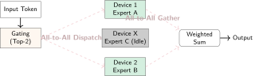
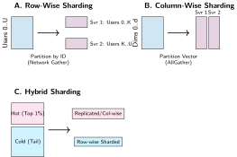

Kinh tế và Kiến trúc của Suy luận
Suy luận ở quy mô lớn
{kind=link}
Mục đích
Tại sao chi phí suy luận rốt cuộc lại lấn át chi phí huấn luyện, và điều này nói gì về thiết kế hệ thống?
Huấn luyện là chi phí một lần; phục vụ (serving) thì kéo dài suốt vòng đời vận hành của mô hình. Một mô hình được huấn luyện một lần với chi phí hàng triệu đô la có thể phục vụ hàng tỷ yêu cầu, mỗi yêu cầu tiêu tốn tài nguyên tính toán, bộ nhớ, mạng và năng lượng. Với một mô hình sản xuất thành công, chi phí vận hành suy luận có thể vượt xa chi phí huấn luyện ban đầu nhiều bậc. Cấu trúc chi phí đó định hình kiến trúc hệ thống. Mỗi mili giây độ trễ và mỗi phần trăm mức sử dụng bộ tăng tốc, khi cộng dồn qua hàng tỷ yêu cầu, đều tạo ra khác biệt lớn. Kỹ thuật hiệu năng đã cung cấp bộ công cụ ở mức cục bộ—hợp nhất, độ chính xác, biên dịch, và các thay đổi thuật toán như giải mã suy đoán—và chương này áp dụng những công cụ đó ở quy mô phục vụ (serving). Gom batch, phân đoạn, định tuyến, tự động mở rộng và cách ly phải giữ vững ngân sách độ trễ nghiêm ngặt dưới lưu lượng thực tế. Yêu cầu về độ tin cậy cũng khắt khe hơn, vì ngừng dịch vụ đồng nghĩa mất doanh thu và làm hỏng trải nghiệm người dùng, chứ không chỉ trì hoãn thí nghiệm. Theo thuật ngữ C³, phục vụ (serving) gom các phép tính theo batch để tăng thông lượng, đồng thời giữ chi phí phối hợp trong giới hạn ngân sách độ trễ đuôi (tail-latency).
Learning Objectives
- Định lượng chi phí phục vụ (serving) suốt vòng đời từ khối lượng yêu cầu, cơ cấu token, giá bộ tăng tốc, mức sử dụng và mục tiêu độ trễ
- Chọn các chính sách gom batch và lập lịch cho các khối lượng công việc (workload) thị giác máy tính, LLM, hệ thống khuyến nghị và streaming
- Phân tích dung lượng attention-cache, phân mảnh và các chính sách lúc giải mã cho phục vụ (serving) mô hình ngôn ngữ bị giới hạn bởi bộ nhớ
- So sánh các thiết kế phục vụ (serving) phân đoạn, tách rời và lượng tử hóa dựa trên các ràng buộc về giao tiếp, bộ nhớ và chất lượng
- Đánh giá các điều khiển định tuyến, cân bằng tải và cách ly trước độ trễ đuôi (tail latency) và rủi ro nhiễu từ hàng xóm
- Thiết kế các chính sách tự động mở rộng và chuyển đổi dự phòng đa vùng nhằm cân bằng giữa khởi động nguội, chi phí và việc tuân thủ SLO
- Tổng hợp các kiến trúc phục vụ (serving) quản lý các đánh đổi C³ qua các lớp yêu cầu, bản sao, dịch vụ và nền tảng
Hãy tưởng tượng một mô hình ngôn ngữ tốn 5 triệu đô la để huấn luyện trong hai tháng. Khi được triển khai cho một tập người dùng toàn cầu, xử lý hàng nghìn truy vấn mỗi giây, chính mô hình đó có thể tiêu tốn 5 triệu đô la chi phí tính toán cho suy luận mỗi tuần. Suy luận không còn là một tác vụ batch tạm thời nữa. Nó đã trở thành một dịch vụ liên tục, nhạy cảm với độ trễ.
Hợp nhất toán tử, tinh chỉnh độ chính xác và biên dịch đồ thị có thể tối đa hóa thông lượng cho từng lượt truyền xuôi riêng lẻ. Thách thức tiếp theo xuất hiện khi một mô hình đã tối ưu phải phục vụ hàng nghìn người dùng đồng thời trên một hạ tầng phân tán toàn cầu. Tối ưu suy luận trên một máy, gồm batch, cache, tối ưu hóa mô hình và tăng tốc phần cứng, là những khối xây dựng nền tảng. Khi các kỹ thuật đó chạm trần, cần chuyển sang các phương pháp phân tán.
Các hệ thống suy luận phân tán phải giải quyết những vấn đề không tồn tại ở quy mô một máy. Cân bằng tải1 trở nên then chốt khi cần phân phối yêu cầu lên hàng trăm instance GPU mà vẫn giữ được các cam kết về độ trễ. Định tuyến yêu cầu phải tính đến đặc thù của từng mô hình: các hệ thống khuyến nghị với bảng embedding hàng nghìn tỷ tham số cần chiến lược đặt vị trí khác với các mô hình ngôn ngữ lớn tạo phản hồi theo từng token. Tự động điều chỉnh quy mô (autoscaling) phải dự đoán biến động nhu cầu có thể làm thay đổi khối lượng yêu cầu theo nhiều bậc độ lớn chỉ trong vài phút, đồng thời vẫn duy trì các ngưỡng độ trễ mà người dùng mong đợi.
1 Cân bằng tải cho suy luận: Thời gian phục vụ yêu cầu có thể dao động từ vài mili giây đến hàng chục giây, tùy thuộc vào mô hình, độ dài prompt và đầu ra được tạo. Định tuyến nhận biết hàng đợi giúp phản ánh trực tiếp khối lượng công việc còn lại, thay vì chỉ dựa vào số lượng tác vụ đã gán.
Kinh tế học của suy luận ở quy mô lớn khác về bản chất so với kinh tế của huấn luyện. Chi phí huấn luyện chủ yếu do thời gian tính toán quyết định và có thể được phân bổ dần theo vòng đời của mô hình. Ngược lại, chi phí suy luận gắn trực tiếp với lưu lượng người dùng và doanh thu. Chẳng hạn, một hệ thống khuyến nghị thương mại điện tử có thể phục vụ hàng triệu yêu cầu mỗi giây trong các đợt mua sắm cao điểm, và mỗi yêu cầu đóng góp trực tiếp vào doanh thu tiềm năng. Việc cấp phát dư thừa khi hệ thống nhàn rỗi hoặc thiếu hụt khi tải tăng vọt sẽ lập tức tác động đến kết quả kinh doanh. Vì thế, hiệu quả suy luận trở thành mối quan tâm hàng đầu theo cách mà hiệu quả huấn luyện hiếm khi đạt tới. Xây dựng một dịch vụ như vậy đòi hỏi ba quyết định liên kết với nhau: khi nào cần chuyển sang phân tán, kiến trúc làm sao giữ vững các giới hạn độ trễ dưới tải biến động, và làm sao duy trì mức sử dụng tài nguyên đủ cao để chi phí phục vụ (serving) không bào mòn giá trị mà mô hình tạo ra.
Khi phục vụ (serving) trên một máy đơn không còn đáp ứng
Có ba tín hiệu rõ ràng cho thấy khi nào suy luận phân tán là bắt buộc, chứ không chỉ là một lựa chọn. Bảng Table 1 phân loại các tín hiệu này theo loại ràng buộc và chiến lược tương ứng.
Tín hiệu đầu tiên là cạn kiệt bộ nhớ, xảy ra khi tham số mô hình, cache key-value hoặc các bảng embedding vượt quá dung lượng của một thiết bị đơn lẻ. Một GPU NVIDIA H100 cung cấp 80 GB bộ nhớ HBM32; Nguồn gốc giả định ghi lại nguồn gốc của con số dung lượng này và các hằng số phần cứng chuẩn khác được dùng xuyên suốt các phân tích sau. Các mô hình cỡ GPT-4 vượt xa mức này: ước tính công khai về mixture-of-experts với khoảng ~1.8T tham số ngụ ý ~3.5 TB chỉ riêng cho các trọng số ở độ chính xác FP16, buộc phải phân tán trên nhiều GPU bất kể yêu cầu về thông lượng. Các hệ thống khuyến nghị với bảng embedding hàng nghìn tỷ tham số cũng gặp ràng buộc tương tự: kiến trúc DLRM của Meta3 lưu trữ các bảng embedding cần đến nhiều terabyte bộ nhớ.
2 Dung lượng và băng thông HBM3: H100 kết hợp 80 GB DRAM xếp chồng 3D với băng thông 3.35 TB/s, so với 2.04 TB/s của HBM2e trên A100. Dung lượng quyết định liệu mô hình và trạng thái cache có vừa hay không; băng thông sẽ đặt trần thông lượng giải mã khi bị ràng buộc bởi bộ nhớ.
3 DLRM (Mô hình Khuyến nghị Deep Learning): Kiến trúc tham chiếu năm 2019 của Meta tách các đặc trưng dày đặc — các mạng perceptron đa lớp (MLP) chủ yếu chạy trên GPU — khỏi các đặc trưng thưa (tra cứu embedding chủ yếu trên CPU), tạo thành một kiến trúc phục vụ (serving) lai (Naumov et al. 2019). Các mô tả hệ thống khuyến nghị trong môi trường sản xuất cho thấy vì sao cấu trúc này quan trọng cho phục vụ (serving): các mô hình khuyến nghị nặng embedding tạo ra các ràng buộc về truy cập bộ nhớ và dung lượng khác với suy luận của mạng nơ-ron tích chập (CNN) dày đặc, mạng nơ-ron hồi quy (RNN), hay mô hình ngôn ngữ lớn (LLM) (Gupta et al. 2020).
Ngoài các ràng buộc về bộ nhớ, giới hạn thông lượng xuất hiện khi khối lượng yêu cầu vượt quá khả năng của một máy đơn lẻ, ngay cả với batching tối ưu. Ví dụ: một hệ thống khuyến nghị phục vụ 100.000 truy vấn mỗi giây với ngân sách độ trễ 10 ms. Nếu thông lượng tối đa của một máy đơn lẻ chỉ đạt 10.000 QPS, thì tối ưu thế nào trên máy đó cũng không đáp ứng nổi nhu cầu. Khi đó, bắt buộc phải mở rộng theo chiều ngang với nhiều bản sao.
Cuối cùng, các yêu cầu nghiêm ngặt về độ trễ sẽ thúc đẩy phân tán khi thời gian thực thi mô hình vượt quá ngân sách độ trễ, ngay cả khi kích thước batch bằng một. Các mô hình ngôn ngữ lớn tạo phản hồi từng token thường gặp ràng buộc này rất rõ. Một mô hình 70 tỷ tham số cần khoảng 140 GB bộ nhớ ở FP16, vượt quá một GPU H100 80 GB, còn trước cả khi tính đến cache KV. Ngay cả khi lượng tử hoá hoặc phần cứng có bộ nhớ lớn hơn giúp triển khai một bản sao đơn lẻ, thông lượng giải mã vẫn thường bị giới hạn bởi băng thông bộ nhớ. Chia mảnh mô hình trên nhiều GPU cho phép tính toán song song, từ đó giảm thời gian đến token đầu tiên (time-to-first-token) xuống dưới ngưỡng chấp nhận được.
| Ràng buộc | Giới hạn một máy | Khối lượng công việc (workload) ví dụ | Chiến lược phân phối |
|---|---|---|---|
| Bộ nhớ | 80 GB (H100) | GPT-4 (~3.5 TB FP16) | Song song hóa tensor/pipeline |
| Thông lượng | ~10K QPS (thị giác) | 100K QPS RecSys | Nhân rộng theo chiều ngang |
| Độ trễ | Forward pass \(> \text{SLO}\) | 500 ms LLM TTFT | Phân mảnh mô hình |
Các vấn đề về bộ nhớ, thông lượng và độ trễ đều trở nên thấy rõ với người dùng ngay khi một endpoint tương tác bắt đầu streaming. Time to First Token (TTFT)4 cho biết khi nào người dùng bắt đầu thấy phản hồi, trong khi Time Per Output Token (TPOT) quyết định phần còn lại của phản hồi có đến với tốc độ đủ dễ đọc hay không; đó là lý do suy luận đảo ngược nhiều ưu tiên tối ưu hóa so với huấn luyện.
4 TTFT so với TPOT: Thời gian đến token đầu tiên đo thời gian chờ ban đầu do xếp hàng và prefill; thời gian mỗi token đầu ra đo nhịp độ giải mã sau khi bắt đầu streaming. Một chính sách phục vụ (serving) phải bảo vệ cả hai, thay vì che một luồng chậm bằng một phản hồi đầu tiên nhanh.
Checkpoint 1.1: Lựa chọn chiến lược phân tán
Hãy kiểm tra bạn hiểu khi nào cần chuyển từ suy luận trên một máy sang suy luận phân tán:
Sự đảo ngược cơ bản: Huấn luyện so với suy luận
Điểm khác biệt giữa tối ưu hóa huấn luyện và suy luận không chỉ dừng ở phân biệt cơ bản giữa thông lượng và độ trễ. Huấn luyện tối ưu cho số mẫu xử lý mỗi giờ và chấp nhận biến thiên độ trễ. Suy luận tối ưu cho thời gian phản hồi và phải tuân thủ các ngưỡng độ trễ nghiêm ngặt. Ở quy mô lớn, sự đảo chiều này thể hiện rõ trong kiến trúc hệ thống, phân bổ tài nguyên và ưu tiên vận hành. Table 2 trình bày sáu khía cạnh hệ thống nơi những khác biệt này bộc lộ rõ.
| Khía cạnh | Huấn luyện phân tán | Suy luận phân tán |
|---|---|---|
| Số liệu chính | Thông lượng (mẫu/giờ) | Độ trễ (P99 ms) |
| Phương sai chấp nhận được | Giờ | Mili giây |
| Quản lý trạng thái | Checkpoints (định kỳ) | Trạng thái phiên (liên tục) |
| Tạo batch | Lớn, có kiểm soát | Theo yêu cầu, biến đổi |
| Khả năng chịu lỗi | Khởi động lại từ checkpoint | Chuyển hướng mà không ảnh hưởng đến người dùng |
| Cấu trúc chi phí | Thời lượng cố định, tốc độ biến đổi | Thời lượng biến đổi, SLO cố định |
Huấn luyện có thể chấp nhận biến thiên độ trễ lớn vì mục tiêu tối ưu là tiến độ tổng thể trong nhiều giờ hoặc ngày. Một vòng lặp huấn luyện mất 2 giây thay vì 1 giây là biến thiên chấp nhận được. Ngược lại, một yêu cầu suy luận mất 2 giây thay vì 100 mili giây là lỗi nghiêm trọng, có thể khiến người dùng rời bỏ hoặc gây timeout dây chuyền ở các dịch vụ phụ thuộc.
Quản lý trạng thái cũng khác biệt căn bản. Huấn luyện duy trì trạng thái mô hình (tham số, trạng thái của optimizer) tiến hóa dần và có thể được lưu định kỳ bằng các checkpoint. Suy luận thường duy trì trạng thái phiên (lịch sử hội thoại, cache khóa-giá trị, ngữ cảnh người dùng) cần được giữ nguyên qua nhiều yêu cầu và không thể chấp nhận độ lỗi thời (staleness) do khôi phục dựa trên checkpoint gây ra.
Xử lý lỗi cũng phân kỳ tương ứng. Lỗi trong huấn luyện sẽ khôi phục từ checkpoint và tiếp tục, mất vài phút tiến độ vẫn chấp nhận được. Lỗi trong suy luận thì phải vô hình với người dùng. Yêu cầu được chuyển hướng sang các bản sao khỏe mạnh, có thể dùng kết quả suy luận suy giảm chất lượng khi mô hình không sẵn sàng, và các mục tiêu mức dịch vụ (SLO) vẫn phải được giữ vững dù hạ tầng bất ổn.
Thuế phục vụ (serving): chi phí do phân tán
Phân tán suy luận lên nhiều máy tạo ra chi phí phụ mà phục vụ (serving) trên một máy đơn không có. “Thuế phục vụ (serving)” này cần được hiểu rõ và tính vào ngân sách độ trễ.
Giao tiếp mạng thêm độ trễ cho mỗi lần tương tác giữa các máy. Trong một trung tâm dữ liệu, thời gian khứ hồi của mạng dao động từ 50–500 micro giây tùy topo và mức độ tắc nghẽn. Với mô hình được chia mảnh cần đồng bộ giữa các GPU trên các máy khác nhau, mỗi điểm đồng bộ lại gánh thêm phần độ trễ này. Một mô hình chia mảnh trên 8 máy, với 4 điểm đồng bộ cho mỗi lần suy luận, sẽ cộng thêm khoảng 200 micro giây đến 2 mili giây độ trễ mạng. Mô hình truyền thông α-β phát triển mô hình \(\alpha\)-\(\beta\) tách mỗi lần truyền như vậy thành hai phần: một độ trễ khởi động cố định và một phần phụ thuộc băng thông, cung cấp framework định lượng để cân đối các chi phí đồng bộ này trong SLO về độ trễ.
Chi phí tuần tự hóa còn làm vấn đề nặng hơn vì phải chuyển các tensor trong bộ nhớ sang định dạng có thể truyền qua mạng. Các bộ tuần tự hóa truyền thống như Protocol Buffers, JSON và pickle của Python thực hiện một vòng phân tích, cấp phát và sao chép cho mỗi lần truyền; một tensor activation 1 GB mất khoảng 100 mili giây để tuần tự hóa và giải tuần tự qua các định dạng này. Các lựa chọn zero-copy như FlatBuffers và Cap’n Proto5 tránh phần lớn chi phí đó bằng cách truy cập trực tiếp dữ liệu ở định dạng truyền tải (wire-format) ngay tại chỗ, nhưng chúng đòi hỏi bố cục lược đồ chặt chẽ hơn mà không phải mọi hệ thống sản xuất đều áp dụng.
5 Tuần tự hóa không sao chép: Các định dạng như FlatBuffers và Cap’n Proto có thể truy cập trực tiếp dữ liệu ở định dạng truyền tải (wire-format) ngay tại chỗ, tránh phải thực hiện một vòng phân tích, cấp phát và sao chép riêng biệt. Lợi ích phụ thuộc vào kích thước payload, runtime của ngôn ngữ, và liệu các toán tử xử lý tiếp theo có thể dùng cùng một biểu diễn bộ đệm hay không.
Độ trễ từ bộ cân bằng tải là một yếu tố nữa. Yêu cầu cần được định tuyến tới các bản sao (replica) phù hợp, đòi hỏi kiểm tra siêu dữ liệu của yêu cầu, tra cứu bảng định tuyến và chuyển tiếp tới các backend đã chọn. Các bộ cân bằng tải được tối ưu tốt chỉ thêm khoảng 100–500 micro giây; cấu hình kém có thể đội lên vài mili giây.
Chi phí phối hợp xuất hiện khi một yêu cầu cần được phân tán đến nhiều dịch vụ. Ví dụ, một hệ thống gợi ý truy vấn song song mô hình người dùng, mô hình sản phẩm và mô hình xếp hạng, rồi phải phối hợp các truy vấn này và tổng hợp kết quả. Bản thân phần logic phối hợp cũng tiêu tốn chu kỳ CPU và làm độ trễ biến thiên. Cuối cùng, độ trễ xếp hàng (\(T_{\text{queuing}}\)) sẽ tích lũy mỗi khi tốc độ yêu cầu đến tạm thời vượt quá khả năng xử lý của các bản sao (replica) hiện có.
Tổng chi phí phục vụ (serving) thường chiếm 10–30% ngân sách độ trễ trong các hệ thống phân tán, như equation 1 cho thấy:
\[T_{\text{total}} = T_{\text{compute}} + T_{\text{network}} + T_{\text{serialization}} + T_{\text{coordination}} + T_{\text{queuing}} \tag{1}\]
Để giảm chi phí này, ta cần đặt gần nhau các thành phần cần trao đổi, dùng các liên kết băng thông cao, và thiết kế cách thức giao tiếp sao cho giảm thiểu số lượt đi-về (round trips).
Chi phí phục vụ (serving) có thể áp đảo chi phí huấn luyện
{kind=link}
Chi phí phục vụ (serving) được lượng hóa trong equation 1 chỉ chiếm một phần ngân sách độ trễ cho mỗi yêu cầu. Tác động kinh tế thực sự của suy luận mới bộc lộ khi ta đánh giá chi phí trong toàn bộ vòng đời vận hành của mô hình. Luật Chi phí Phục vụ (Serving) Áp đảo (nguyên tắc 15) phát biểu rằng chi phí phục vụ (serving) có thể lớn hơn chi phí huấn luyện nhiều bậc độ lớn, vì huấn luyện là chi phí đầu tư một lần (CapEx), còn phục vụ (serving) là chi phí vận hành liên tục (OpEx) và tăng theo tăng trưởng người dùng. Một phép tính chi phí nhanh sẽ giúp cụ thể hóa hệ số nhân này.
Napkin Math 1.1: Hệ số nhân chi phí phục vụ (serving)
Tính toán:
- Chi phí Huấn luyện: $2,000,000 (Một lần).
- Chỉ số: Tổng số yêu cầu suy luận hàng năm là \(10^{6}\,\text{users} \times 50\,\text{reqs} \times 365\,\text{days} \approx\) 18.25B yêu cầu/năm.
- Chi phí mỗi yêu cầu: Giả sử một mô hình 70B trên H100 có chi phí \(\approx\) $0.001/request (bao gồm đầu vào và đầu ra).
- Chi phí phục vụ (serving) hàng năm: 18.25B yêu cầu \(\times\) $0.001/request = $18,250,000.
Góc nhìn hệ thống: Chỉ riêng trong năm đầu, chi phí phục vụ cao hơn chi phí huấn luyện 9.1× lần. Một cải thiện hiệu quả 10 percent gắn với chi phí phục vụ hoặc độ trễ sẽ giúp tiết kiệm khoảng $1.8M trong năm đầu, gần như bù được chi phí cho lần huấn luyện ban đầu.
Tổng chi phí vận hành một mô hình gồm chi phí huấn luyện (một lần) và chi phí phục vụ (liên tục), như equation 2 cho thấy:
\[C_{\text{total}} = C_{\text{training}} + C_{\text{serving}} \times T_{\text{deployment}} \times Q_{\text{rate}} \tag{2}\]
trong đó \(C_{\text{training}}\) là chi phí một lần để huấn luyện mô hình, \(C_{\text{serving}}\) là chi phí cho mỗi truy vấn được phục vụ, \(T_{\text{deployment}}\) là thời gian triển khai theo đơn vị thời gian phù hợp, và \(Q_{\text{rate}}\) là tốc độ truy vấn.
Mức độ đòn bẩy tương tự có thể áp dụng cho các nhóm ứng dụng với cấu trúc chi phí khác nhau. Trong kịch bản khuyến nghị minh họa của chương, một DLRM được huấn luyện với chi phí $12,000 (phần cứng $3000 trong 1,000 GPU-hours giờ ở mức $3/GPU-hour, cộng thêm 3× chi phí kỹ thuật bổ sung cho dữ liệu và thử nghiệm) và được phục vụ ở 10,000 QPS truy vấn/giây trong 730 ngày, tích lũy \(6.31 \times 10^{11}\) truy vấn suốt vòng đời. Với mức giả định $10/million queries, số truy vấn đó tốn $6,307,200 để phục vụ, tạo ra tỷ lệ 525.6× trong kịch bản này. Table 3 đưa ra các khoảng nhạy cảm cho một số khối lượng công việc (workload) minh họa, chứ không phải ước tính theo giá thị trường:
| Ứng dụng | Chi phí huấn luyện | Chi phí phục vụ (serving) hàng năm | Tỷ lệ |
|---|---|---|---|
| Đề xuất (QPS cao) | $10K–$100K | $1M–$10M | 100–1000\(\times\) |
| Xếp hạng tìm kiếm | $100K–$1M | $10M–$100M | 100–1000\(\times\) |
| LLM API | $1M–$100M | $10M–$1B | 10–100\(\times\) |
| Phân tích nội bộ | $1K–$10K | $10K–$100K | 10–100\(\times\) |
Cấu trúc chi phí thúc đẩy việc tối ưu hóa phục vụ: mỗi phần trăm cải thiện hiệu quả sẽ giúp giảm chi phí liên tục trong suốt vòng đời hoạt động của mô hình. Hình Figure 1 minh họa tầm quan trọng của tối ưu hóa, cho thấy khoảng cách giữa cách phục vụ thông thường và cách phục vụ tối ưu sẽ quyết định một dịch vụ suy luận có sinh lời hay đang thua lỗ.
{kind=link}
Các tỷ lệ chi phí ở Bảng table 3 chỉ cho ta một cái nhìn tĩnh, nhưng động lực tích lũy chi phí lại hé lộ một xu hướng còn đáng chú ý hơn. Hình Figure 2 biểu diễn tổng chi phí triển khai tích lũy trong 36 tháng cho ba kịch bản tiêu biểu: một mô hình nhỏ với lưu lượng thấp, một LLM 70B phục vụ một triệu người dùng hoạt động hằng ngày, và một hệ thống khuyến nghị phục vụ 100 triệu người dùng. Các mốc giao cắt theo phương dọc cho biết thời điểm chi phí phục vụ tích lũy bằng với chi phí huấn luyện ban đầu; do các đường cong này bao gồm cả huấn luyện và phục vụ, nên tại điểm giao cắt đó, tổng chi phí sẽ xấp xỉ gấp đôi chi phí huấn luyện cơ bản. Với hệ thống khuyến nghị, phục vụ chiếm ưu thế chỉ sau vài ngày; với LLM có lưu lượng cao, trong khoảng sáu tuần. Chỉ những mô hình nhỏ, có chi phí huấn luyện cao và lưu lượng thấp, mới thấy chi phí huấn luyện chiếm ưu thế trong thời gian dài hơn. Góc nhìn theo thời gian này càng củng cố lý do tại sao tối ưu hóa suy luận cần được quan tâm sớm về mặt kỹ thuật khi đưa vào sản xuất. Với các dịch vụ LLM tạo sinh, các thiết kế dành riêng cho phục vụ có thể trực tiếp chuyển thành lợi ích về thông lượng, chi phí và cải thiện về công suất (Patel et al. 2024).
{kind=link}
Suy luận vượt ra ngoài LLM
Một hiểu lầm phổ biến là đánh đồng suy luận ở quy mô lớn với phục vụ (serving) LLM. Các mô hình ngôn ngữ lớn đặt ra thách thức riêng và thu hút nhiều chú ý, nhưng chúng chỉ là một phần của suy luận trong sản xuất. Trên các nền tảng tiêu dùng lớn, khối lượng công việc (workload) khuyến nghị và xếp hạng có thể chiếm đa số chu kỳ và dung lượng suy luận AI (Gupta et al. 2020; Hazelwood et al. 2018). Xử lý thị giác và hình ảnh, khối lượng công việc (workload) NLP và LLM, phát hiện gian lận, quảng cáo và các tác vụ phân loại khác chiếm phần còn lại. Table 4 so sánh các loại mô hình này theo áp lực phục vụ (serving) và thách thức tối ưu hóa. Cụ thể, hệ thống khuyến nghị bị giới hạn bởi tra cứu embedding, xử lý thị giác phụ thuộc vào hiệu quả batch, LLM bị ràng buộc bởi băng thông bộ nhớ, còn tiếng nói thì phụ thuộc vào giải mã tuần tự. Không có một tối ưu hóa đơn lẻ nào phù hợp với cả bốn.
Hệ thống khuyến nghị thường chiếm ưu thế trong suy luận cho người dùng ở quy mô lớn vì chúng phục vụ (serving) dự đoán cho rất nhiều tương tác. Mỗi lần tải trang, cuộn hoặc nhấp chuột đều có thể kích hoạt suy luận xếp hạng hoặc truy xuất. Một người dùng duyệt trang thương mại điện tử có thể tạo ra nhiều yêu cầu khuyến nghị chỉ trong một phiên. Ngược lại, truy vấn LLM thường cần hành động rõ ràng từ người dùng và xảy ra thưa hơn.
Cách phân bố này ảnh hưởng trực tiếp đến việc chọn kỹ thuật. Các hệ thống đề xuất đã thúc đẩy nhiều đổi mới quan trọng cho suy luận trong môi trường sản xuất: batching động, sharding embedding, kiến trúc kho đặc trưng và phục vụ (serving) độ trễ thấp đều được phát triển chủ yếu cho các khối lượng công việc (workload) của hệ thống đề xuất (Naumov et al. 2019; Gupta et al. 2020). Các kỹ thuật dành riêng cho LLM như continuous batching và quản lý KV cache lại giải quyết một lát cắt khác của suy luận trong môi trường sản xuất. Các hệ thống chuyển văn bản thành hình ảnh như DALL-E là một ví dụ về mô hình đa phương thức (Ramesh et al. 2021), nhưng quy mô phục vụ (serving) và các mục tiêu về độ trễ của đa phương thức vẫn phụ thuộc vào từng sản phẩm cụ thể.
| Loại mô hình | Áp lực phục vụ (serving) | Mục tiêu độ trễ | Thách thức chính |
|---|---|---|---|
| Đề xuất/xếp hạng | Khối lượng lớn trên các nền tảng tiêu dùng | \(<10\text{ ms}\) P99 | Tra cứu embedding |
| Thị giác (CNN) | Phụ thuộc vào khối lượng công việc (workload) | 20–100 ms | Hiệu quả batch |
| LLM | Chi phí cao trên mỗi yêu cầu | 100 ms–10s | Băng thông bộ nhớ |
| Giọng nói/Âm thanh | Theo hướng luồng | Thời gian thực | Giải mã tuần tự |
| Đa phương thức/văn bản thành hình ảnh | Mới nổi và đặc thù sản phẩm | Đa dạng | Phối hợp đa phương thức |
Hệ thống phân cấp phục vụ (serving)
Các kỹ thuật tối ưu hóa được tổ chức thành một Hệ thống phân cấp phục vụ (Serving Hierarchy), tương tự như hệ thống phân cấp bộ nhớ trong kiến trúc máy tính. Mỗi cấp có một nút thắt cổ chai riêng, nên một tối ưu hóa có thể giúp ở cấp này nhưng không làm thay đổi cấp khác. Cấp yêu cầu theo dõi một request từ tiền xử lý, qua batching, caching, đến thực thi mô hình; mục tiêu ở đây là độ trễ mà người dùng thấy. Cấp bản sao (replica) đi sâu vào một phiên bản mô hình, nơi mức sử dụng GPU, quản lý bộ nhớ, hiệu quả kernel và tối ưu hóa mô hình quyết định thông lượng hữu ích mà bản sao đó đạt được trước khi bị bão hòa. Cấp dịch vụ (service) vận hành trên nhiều bản sao của cùng một mô hình, dùng cân bằng tải, định tuyến yêu cầu và tự động điều chỉnh quy mô để biến các bản sao riêng lẻ thành năng lực tổng hợp. Cấp nền tảng (platform) làm việc trên nhiều dịch vụ và nhiều người thuê, nơi việc phân bổ tài nguyên, đa người thuê, lập lịch và sắp xếp vị trí quyết định liệu một cụm phục vụ (serving) dùng chung có duy trì hiệu quả mà không để khối lượng công việc (workload) này làm suy giảm khối lượng công việc (workload) khác hay không.
Hệ thống phân cấp này quan trọng vì mỗi tầng tác động đến một chỉ số khác nhau và có ngưỡng lỗi riêng. Một ngăn xếp triển khai liên quan được minh họa trong figure 3, cho thấy cách yêu cầu đi qua hạ tầng edge, định tuyến và phục vụ (serving) mô hình trong môi trường sản xuất.
{kind=link}
Mỗi cấp độ có các đòn bẩy tối ưu hóa riêng, và table 5 cho thấy vì sao các đòn bẩy này đặc thù theo từng cấp: thay đổi ở cấp độ yêu cầu giúp giảm độ trễ mỗi yêu cầu; thay đổi ở cấp độ bản sao (replica) giúp tăng mức sử dụng; thay đổi ở cấp độ dịch vụ giúp tăng dung lượng tổng thể; và thay đổi ở cấp độ nền tảng giúp cải thiện hiệu quả của toàn bộ fleet trên nhiều người thuê. Tối ưu hóa sai cấp độ sẽ tác động sai chỉ số.
| Cấp độ | Mục tiêu tối ưu hóa | Các kỹ thuật chính |
|---|---|---|
| Yêu cầu | Độ trễ trên mỗi yêu cầu | Batching động, caching, prefetching |
| Bản sao | Thông lượng, mức độ sử dụng | Tối ưu hóa bộ nhớ, kernel fusion |
| Dịch vụ | Tổng dung lượng | Cân bằng tải, định tuyến, autoscaling |
| Nền tảng | Hiệu quả tài nguyên | Đa người thuê (multi-tenancy), lập lịch, bố trí |
Checkpoint 1.2: Hệ thống phân cấp phục vụ
Hãy kiểm tra xem bạn hiểu rõ các tối ưu hóa cụ thể nằm ở đâu trong hệ thống phân cấp phục vụ:
Cấu trúc phân cấp này định hướng phần còn lại của thiết kế, đồng thời cho phép một vài kỹ thuật áp dụng xuyên tầng. Batching, bố cục KV-cache và tối ưu hoá ở pha giải mã bắt đầu từ cấp độ yêu cầu. Lượng tử hoá, trạng thái adapter và chia mảnh mô hình (model sharding) làm thay đổi ngân sách bộ nhớ và tính toán của mỗi bản sao. Phục vụ (serving) tách rời, cân bằng tải và tự động mở rộng quy mô phối hợp các bản sao thành một dịch vụ, trong khi đa thuê (multi-tenancy) và cách ly tài nguyên điều hành ở tầng nền tảng. Lượng tử hoá xuất hiện xuyên suốt vì đây là một đòn bẩy ở cấp độ biểu diễn, làm thay đổi ngân sách bộ nhớ, băng thông và chi phí tại mọi nơi có trạng thái mô hình hoặc trạng thái KV.
Các chiều cạnh của kiến trúc phục vụ (serving)
Một hệ thống đề xuất xử lý 100.000 lượt tra cứu embedding mỗi giây trên một kho đặc trưng chia mảnh (sharded feature store) sẽ cần một kiến trúc phục vụ (serving) khác với một mô hình ngôn ngữ 70 tỷ tham số tạo ra từng token một. Việc chỉ chọn framework thôi thì không đủ để giải thích sự khác biệt này. Những khối lượng công việc (workload) này đặt ra các ràng buộc riêng về batching, quản lý bộ nhớ, lập lịch và cấu trúc triển khai. Phần này chỉ ra các chiều kiến trúc đó, dùng các framework cụ thể làm ví dụ minh hoạ chứ không nghiên cứu bản thân các framework.
Chiến lược batching: Sự đánh đổi giữa thông lượng và độ trễ
Quyết định kiến trúc quan trọng nhất trong một hệ thống phục vụ (serving) là cách nó gom các yêu cầu đến thành từng batch. Lựa chọn này quyết định điểm vận hành cơ bản về thông lượng và độ trễ.
Batching tĩnh là cách gom một số lượng yêu cầu cố định rồi mới gửi chúng đến bộ tăng tốc. Với các mô hình thị giác xử lý đầu vào kích thước cố định, cách này tối ưu mức sử dụng GPU vì mọi yêu cầu trong cùng batch đều chạy các đồ thị tính toán giống hệt nhau, với mẫu truy cập bộ nhớ có thể dự đoán. Chẳng hạn, một máy chủ suy luận ResNet-50 có thể gộp 32 hoặc 64 ảnh vào một batch và đạt mở rộng thông lượng gần tuyến tính, vì batch giúp phân bổ chi phí khởi động cố định và tái sử dụng các trọng số đã nạp sẵn trong bộ nhớ cho nhiều đầu vào.
Các mô hình ngôn ngữ tự hồi quy phá vỡ giả định này. Mỗi yêu cầu tạo ra số lượng token đầu ra khác nhau, nên batching tĩnh buộc tất cả yêu cầu phải chờ đến khi lượt sinh dài nhất trong batch kết thúc, và phần năng lực của bộ tăng tốc có thể bị bỏ trống sau khi các yêu cầu ngắn hơn hoàn tất. Continuous batching giải quyết bằng cách cho phép yêu cầu ra/vào batch ở mỗi bước giải mã, một cách lập lịch ở cấp độ vòng lặp do Orca giới thiệu (Yu et al. 2022). Khi một yêu cầu kết thúc sinh, yêu cầu mới lập tức lấp vào chỗ trống. Các hệ thống như vLLM6 kết hợp kiểu lập lịch này với quản lý KV-cache dựa trên PagedAttention, đạt mức tăng thông lượng 2–4\(\times\) so với các hệ thống phục vụ (serving) LLM trước đó nhờ giảm lãng phí bộ nhớ (Kwon et al. 2023).
6 vLLM và bộ nhớ ảo: Tên gọi này gợi nhắc sự tương đồng với hệ điều hành: các trang KV-cache logic được tách biệt khỏi các vị trí vật lý của chúng trong bộ nhớ GPU.
Các hệ thống khuyến nghị đưa vào một mẫu thứ ba: Batching song song đặc trưng. Vì điểm nghẽn là tra cứu embedding phân tán chứ không phải nhân ma trận dày đặc, các hệ thống này gom yêu cầu thành batch theo loại đặc trưng và chia nhỏ batch đó trên các máy chủ embedding. Phần tính toán MLP dày đặc theo sau có thể chạy trên các vector đặc trưng đã được tìm nạp và gom batch từ trước. Phần chiến lược gộp batch (section 1.2) trình bày chi tiết định lượng các cách tiếp cận này.
Quản lý bộ nhớ: Từ cấp phát trước đến phân trang
Các hệ thống phục vụ (serving) khác nhau cơ bản ở cách quản lý bộ nhớ của bộ tăng tốc, và điều này quyết định sức chứa yêu cầu đồng thời tối đa.
Definition 1.1: KV cache
KV Cache là bộ đệm bộ nhớ cho suy luận LLM theo từng yêu cầu, lưu các tensor Key và Value của attention cho mọi token đã sinh trước đó, giúp tạo token tiếp theo mà không phải tính lại toàn bộ attention trên phần tiền tố.
- Ý nghĩa: Nó giảm độ phức tạp tính toán của cơ chế attention trên mỗi token từ \(O(n^2)\) xuống \(O(n)\) theo độ dài chuỗi, nhưng dung lượng bộ nhớ sử dụng lại tăng tuyến tính theo cả độ dài ngữ cảnh và kích thước batch. Điều này thường tiêu tốn nhiều HBM hơn cả các trọng số của mô hình và trở thành yếu tố hạn chế chính đối với khả năng phục vụ (serving). Các nguyên tắc cơ bản của KV cache trình bày chi tiết phép tính kích thước cơ bản.
- Điểm khác biệt: Không giống trọng số mô hình (được chia sẻ cho mọi yêu cầu và cấp phát tĩnh), KV cache là riêng cho từng yêu cầu và được phân bổ động; mỗi yêu cầu đồng thời tiêu tốn một phần bộ nhớ riêng, tỷ lệ với độ dài chuỗi, và bộ lập lịch phải dự trù cho phần này.
- Lỗi thường gặp: Một quan niệm sai là giảm kích thước mô hình sẽ giảm bộ nhớ phục vụ tương ứng. Trên thực tế, KV cache chiếm phần lớn HBM ở các ngữ cảnh dài, nên một mô hình 70B đã lượng tử hóa vẫn có thể bị giới hạn dung lượng ở các kích thước batch mà nếu chỉ xét trọng số thì thừa sức đáp ứng.
Quản lý bộ nhớ cấp phát trước dành một ngân sách bộ nhớ cố định cho mỗi yêu cầu tại thời điểm chấp nhận, dựa trên độ dài đầu ra tối đa có thể. Với một mô hình hỗ trợ đầu ra 4.096 token, mỗi yêu cầu sẽ dành bộ nhớ cho 4.096 token bất kể nó tạo ra 50 hay 4.000. Cách làm này đơn giản và dễ dự đoán, nhưng lãng phí bộ nhớ tỷ lệ với chênh lệch giữa độ dài đầu ra tối đa và thực tế. Trên thực tế, 60-80 phần trăm bộ nhớ KV cache đã dành trước không được sử dụng.
Quản lý bộ nhớ phân trang, lấy cảm hứng từ bộ nhớ ảo của hệ điều hành, cấp phát bộ nhớ theo các khối kích thước cố định (trang) và ánh xạ các vị trí chuỗi logic tới vị trí bộ nhớ vật lý thông qua một bảng khối. Khi một yêu cầu tạo token, các khối vật lý mới được cấp phát theo nhu cầu. Khi quá trình tạo hoàn tất, các khối được trả về vùng nhớ trống ngay lập tức. Cách làm này, được minh họa bởi PagedAttention (được đề cập trong section 1.3.3), đạt mức sử dụng bộ nhớ gần 100 phần trăm bằng cách loại bỏ cả phân mảnh bên trong (các cấp phát trước chỉ được lấp đầy một phần) và phân mảnh bên ngoài (các khoảng trống không dùng được giữa các vùng cấp phát).
Chiến lược quản lý bộ nhớ quyết định trực tiếp sức chứa batch: các hệ thống phân trang có thể phục vụ số yêu cầu đồng thời gấp 2–4\(\times\) so với các hệ thống cấp phát trước trên cùng phần cứng, vì chúng thu hồi phần bộ nhớ mà cấp phát trước lãng phí. Với một dịch vụ có ngân sách GPU cố định, điều này chuyển hóa trực tiếp thành chi phí trên mỗi yêu cầu thấp hơn 2–4\(\times\).
Chính sách lập lịch: FCFS, chiếm quyền, và nhận biết ưu tiên
Chính sách lập lịch quyết định yêu cầu nào được cấp thời gian GPU và theo thứ tự nào. Quyết định này trở nên đặc biệt quan trọng khi tập hợp yêu cầu rất đa dạng: có yêu cầu chỉ cần 50 token đầu ra, nhưng cũng có yêu cầu cần tới 4.000. Lập lịch theo thứ tự đến trước phục vụ trước (FCFS) xử lý các yêu cầu đúng theo thứ tự chúng đến. FCFS công bằng và đơn giản, nhưng gặp hiện tượng chặn đầu hàng (head-of-line blocking): một yêu cầu có thời gian sinh dài có thể làm chậm tất cả các yêu cầu đến sau. Với các khối lượng công việc (workload) có độ biến thiên lớn về độ dài đầu ra, FCFS cho độ trễ đuôi rất tệ.
Lập lịch chiếm quyền cho phép hệ thống tạm dừng cấp phát các vòng lặp giải mã cho một yêu cầu để yêu cầu khác có thể chạy. Chiếm quyền thực tế nhất tại ranh giới token, nhưng không miễn phí: bộ lập lịch phải giữ lại các trang KV của yêu cầu trong bộ nhớ băng thông cao (HBM), hoán đổi chúng sang bộ nhớ máy chủ, hoặc loại bỏ và lặp lại prefill khi yêu cầu tiếp tục. Một chính sách chọn đối tượng bị chiếm quyền hiệu quả sẽ so sánh ba chi phí này với hạn chót còn lại của yêu cầu đang chờ, thay vì chiếm quyền ở một độ dài sinh cố định. Giữ trạng thái tiêu tốn dung lượng khan hiếm, hoán đổi tiêu tốn băng thông liên kết, còn tính toán lại tiêu tốn compute cho prefill; dưới tải nặng, từ chối các yêu cầu ưu tiên thấp có thể ít tốn kém hơn so với liên tục di chuyển hoặc dựng lại trạng thái của chúng.
Lập lịch nhận biết ưu tiên gán các lớp dịch vụ khác nhau cho yêu cầu và đảm bảo yêu cầu ưu tiên cao nhận được khe GPU trước các yêu cầu ưu tiên thấp hơn. Ví dụ, một API trong môi trường production có thể phân loại yêu cầu khách hàng tạo doanh thu là mức quan trọng, xử lý batch nội bộ là mức tiêu chuẩn, và lưu lượng tầng miễn phí là best-effort. Chính sách lập lịch khi đó đảm bảo yêu cầu quan trọng không bao giờ phải chờ sau lưu lượng best-effort, ngay cả khi tải tăng đột biến.
Cấu trúc liên kết triển khai: từ một GPU đến hệ thống phân tách
Cấu trúc liên kết triển khai xác định cách tính toán của mô hình được ánh xạ lên phần cứng, và việc ánh xạ này phụ thuộc vào tỷ lệ giữa kích thước mô hình và dung lượng bộ nhớ của một thiết bị đơn lẻ. Triển khai trên một GPU là phương án đơn giản nhất: toàn bộ mô hình nằm gọn trong bộ nhớ của một thiết bị, và mọi tính toán suy luận diễn ra ngay trên thiết bị đó. Với các mô hình dưới 15–20 tỷ tham số (30–40 GB ở FP16), cấu trúc liên kết này cho độ trễ thấp nhất vì loại bỏ hoàn toàn giao tiếp giữa các thiết bị.
Song song tensor trên nhiều GPU sẽ chẻ nhỏ ma trận trọng số của từng lớp và phân tán chúng lên nhiều GPU được kết nối bằng liên kết băng thông cao (NVLink trên H100 đạt 900 GB/s hai chiều [450 GB/s mỗi chiều]). Mỗi GPU tính một phần kết quả cho mỗi lớp, và phép all-reduce sẽ đồng bộ các kết quả này trước khi chuyển sang lớp tiếp theo. Cấu trúc liên kết này là cần thiết khi trọng số mô hình vượt quá bộ nhớ của một thiết bị đơn lẻ và giúp giảm độ trễ tỷ lệ với mức độ song song, đổi lại là chi phí giao tiếp ở mỗi lớp. Phần phân mảnh mô hình (section 1.4) phân tích định lượng chi phí giao tiếp này.
Phục vụ (serving) phân tách tách riêng giai đoạn prefill (xử lý prompt đầu vào, bị giới hạn bởi năng lực tính toán) khỏi giai đoạn giải mã (sinh từng token, bị giới hạn bởi băng thông bộ nhớ) và đặt chúng lên các cụm phần cứng khác nhau, tối ưu cho hồ sơ khối lượng công việc (workload) tương ứng. Nút prefill dùng bộ tăng tốc có FLOP/s cao; nút giải mã dùng cấu hình bộ nhớ băng thông cao. Việc tách biệt này loại bỏ sự can thiệp giữa prefill và giải mã, cho phép song song hóa và lập kế hoạch dung lượng độc lập, nhưng đồng thời đặt bước chuyển trạng thái vào đường dẫn tới hạn (Zhong et al. 2024). Chunked prefill là cách tiếp cận đối lập theo kiểu đồng vị trí (colocated): nó giới hạn sự can thiệp mà không phải trả chi phí truyền qua mạng (Agrawal et al. 2024).
Do đó, quyết định có nên phân tách hay không phải dựa trên các tiêu chí định lượng, không chỉ dựa vào nhãn giai đoạn. Nếu prefill tạo ra \(S_{\mathrm{KV}}\) byte trạng thái chú ý và băng thông khả dụng giữa các cụm là \(B_{\mathrm{net}}\), thì việc chuyển giao sẽ tốn ít nhất
\[T_{\mathrm{handoff}} = L_{\mathrm{net}} + \frac{S_{\mathrm{KV}}}{B_{\mathrm{net}}}, \tag{3}\]
trong đó \(L_{\mathrm{net}}\) bao gồm thiết lập truyền và xếp hàng. Equation 3 đưa việc bố trí thành phần vào hợp đồng dịch vụ: nhóm prefill phải duy trì được tốc độ token lời nhắc đã chấp nhận, nhóm decode phải duy trì được tốc độ token đầu ra đã chấp nhận, và cả hai nhóm đều cần có dung lượng dự phòng cho phân bố độ dài yêu cầu. Chỉ số dung lượng hữu ích là SLO goodput: tốc độ đến của yêu cầu mà TTFT và TPOT đều nằm trong các mục tiêu của chúng. Việc phân tách chỉ xứng đáng với chi phí chuyển dữ liệu khi loại bỏ được can nhiễu giữa các pha và cân bằng được hai nhóm để nâng SLO goodput. Nếu không, prefill chia khối đồng vị trí là thiết kế đơn giản hơn.
Có trạng thái và không trạng thái: ranh giới về khả năng mở rộng
Trạng thái của hệ thống phục vụ (serving) quyết định việc mở rộng theo chiều ngang có đơn giản hay đòi hỏi kỹ thuật cẩn trọng. Các mô hình thị giác và tra cứu embedding thường không trạng thái: bất kỳ bản sao nào cũng có thể xử lý bất kỳ yêu cầu nào vì không lưu trạng thái phiên giữa các yêu cầu. Mở rộng theo chiều ngang rất đơn giản — chỉ cần thêm bản sao phía sau bộ cân bằng tải — và phục hồi sau lỗi gần như tức thì vì bộ cân bằng tải sẽ chuyển hướng yêu cầu đến bản sao khỏe mạnh.
Một yêu cầu tự hồi quy có trạng thái trong lúc tạo sinh vì cache KV của nó gắn với chuỗi đang xử lý. Trạng thái giữa các yêu cầu là tùy chọn. Một API có thể gửi toàn bộ lịch sử hội thoại ở mỗi lượt và dựng lại trạng thái KV trong prefill, giúp bất kỳ bản sao nào cũng có thể xử lý lượt tiếp theo. Hoặc nền tảng phục vụ (serving) có thể giữ lại trạng thái KV của một lượt đã hoàn tất như một cache phiên, giảm prefill lặp lại nhưng phải đánh đổi bằng ràng buộc bản sao (replica affinity), quản lý vòng đời cache và độ phức tạp khi phục hồi. Định tuyến dính (sticky routing) là tối ưu hóa cho cache được giữ lại đó, không phải yêu cầu bắt buộc để các mô hình tự hồi quy vận hành đúng.
Do đó, ranh giới mở rộng là một quyết định về giao diện và chính sách cache. Mỗi lượt tạo sinh đang chạy đều cần trạng thái theo phạm vi yêu cầu, nhưng dịch vụ sẽ quyết định có giữ trạng thái đó qua ranh giới yêu cầu hay không. Dịch vụ không trạng thái giữa các lượt phải chấp nhận prefill lặp lại và có chi phí chuyển đổi khi lỗi thấp; ngược lại, dịch vụ có cache phiên tiết kiệm được công việc prefill nhưng khi mở rộng hoặc gặp sự cố sẽ phải xả, di chuyển hoặc dựng lại trạng thái đã cache. Kiến trúc chỉ nên chọn ràng buộc (affinity) khi giá trị tái sử dụng cache đo được vượt trội so với mức mất cân bằng và chi phí khôi phục phát sinh.
So sánh kiến trúc
Table 6 tóm tắt cách các khía cạnh (chiều) về batching, bộ nhớ, lập lịch, cấu trúc liên kết và trạng thái tương tác với các loại khối lượng công việc (workload) chính. Bảng này cho thấy không có một kiến trúc phục vụ (serving) nào là tối ưu cho mọi khối lượng công việc (workload); tập ràng buộc của mỗi loại khối lượng công việc (workload) sẽ quyết định điểm thiết kế phù hợp theo từng khía cạnh.
| Chiều | Thị giác/Embedding | LLM (Tự hồi quy) | Đề xuất |
|---|---|---|---|
| Batching | Tĩnh/động (đầu vào đồng nhất) | Liên tục (đầu ra biến đổi) | Song song đặc trưng (embedding được phân mảnh) |
| Bộ nhớ | Cấp phát trước (có thể dự đoán) | Phân trang (KV cache biến đổi) | Phân tán (bảng embedding) |
| Lập lịch | FCFS (chi phí đồng nhất) | Ưu tiên (phương sai cao) | Nhận biết ưu tiên (các tầng SLO) |
| Cấu trúc liên kết | Các bản sao GPU đơn | Song song Tensor/pipeline | Phân mảnh lai CPU-GPU |
| Trạng thái | Không trạng thái | Trạng thái yêu cầu; cache phiên tùy chọn | Các đặc trưng không trạng thái hoặc phiên |
Checkpoint 1.3: Các khía cạnh phục vụ (serving)
Hãy kiểm tra mức độ bạn hiểu cách các ràng buộc của khối lượng công việc (workload) chi phối lựa chọn kiến trúc:
Các chiều kiến trúc quyết định chọn hệ thống phục vụ (serving) nào cho một khối lượng công việc (workload) cụ thể. Thay vì so sánh các framework theo từng đặc trưng, một kỹ sư sẽ xác định vị trí của workload theo từng chiều (mẫu batching, đặc tính bộ nhớ, yêu cầu lập lịch, cấu trúc liên kết triển khai và tính trạng thái) rồi chọn hệ thống tương ứng. Các kỹ thuật tối ưu hóa trong chương này hoạt động trong khuôn khổ kiến trúc đó, mỗi kỹ thuật nhắm tới một chiều cụ thể.
Self-Check: Question
Which combination of architectural design choices correctly reflects the requirements of autoregressive large language model (LLM) serving compared to vision and recommendation workloads?
- Continuous batching, paged memory management, preemptive scheduling, and stateful routing
- Static batching, preallocated memory management, first-come-first-served (FCFS) scheduling, and stateless routing
- Feature-parallel batching, distributed memory tables, priority-aware scheduling, and stateless routing
- Streaming frame batching, pinned buffer allocation, non-preemptive scheduling, and edge-only topology
Why does preallocated memory management in LLM serving waste 60% to 80% of GPU KV cache memory, and how does paged memory management solve this problem?
True or False: The statefulness of an inference serving system is an optional configuration feature of the serving framework rather than an inherent property of the model architecture.
Why is pure First-Come-First-Served (FCFS) scheduling problematic for multi-tenant LLM serving, and what mechanism does preemptive scheduling use to resolve it?
- FCFS requires excessive GPU memory for block tables; preemptive scheduling replaces block tables with static pointers.
- FCFS causes extreme AllReduce communication overhead; preemptive scheduling converts tensor parallelism to pipeline parallelism.
- FCFS forces all requests to run at INT4 precision; preemptive scheduling dynamically promotes high-priority requests to FP16.
- FCFS suffers from head-of-line blocking when long generations delay short queries; preemptive scheduling swaps long-running KV caches to CPU DRAM to free GPU slots.
The scheduling technique that decouples batch membership from request boundaries and evaluates sequence entry and termination at every decode iteration is called ____ batching (or iteration-level scheduling).
Chiến lược batching ở quy mô lớn
Một luồng hàng trăm yêu cầu trò chuyện khác nhau đổ về máy chủ suy luận (inference) mỗi giây. Xử lý tuần tự từng yêu cầu khiến phần lớn GPU nhàn rỗi, thiếu việc giữa các bước giải mã nhỏ. Chờ gom thành một batch tĩnh lớn lại buộc yêu cầu đầu tiên trong hàng chịu độ trễ không thể chấp nhận. Các chiến lược batching ở quy mô lớn đòi hỏi các thuật toán động, gộp yêu cầu tức thời mà vẫn không vi phạm các ngưỡng độ trễ đuôi (tail-latency) nghiêm ngặt.
Xử lý nhiều yêu cầu cùng lúc giúp dàn trải chi phí cố định (tải mô hình, chi phí khởi chạy kernel và độ trễ truyền bộ nhớ) lên nhiều công việc hữu ích hơn, chấp nhận độ trễ trên mỗi yêu cầu cao hơn để đổi lấy thông lượng cải thiện rõ rệt. Phục vụ (serving) trên một máy áp dụng ý tưởng này bằng Dynamic Batching, thu thập yêu cầu trong một khoảng thời gian trước khi xử lý chúng cùng lúc.
Ở quy mô lớn, batching phức tạp hơn vì các kiến trúc mô hình có yêu cầu batching khác nhau. Một chiến lược tối ưu cho mô hình thị giác có thể gây thảm họa với các LLM, và các kỹ thuật phát triển cho hệ thống đề xuất có thể không áp dụng được cho cả hai.
Trong các nền tảng tiêu dùng lớn, hệ thống đề xuất có thể chiếm phần lớn chu kỳ suy luận AI hoặc tạo áp lực về năng lực xử lý, còn thị giác, ngôn ngữ, xếp hạng, gian lận, quảng cáo và các tác vụ phân loại khác chia nhau phần còn lại (Gupta et al. 2020; Hazelwood et al. 2018). Mặc dù phân bố như vậy, các chiến lược batching được trình bày theo thứ tự từ dễ đến khó về mặt khái niệm: thị giác (batching đơn giản), LLMs (batching liên tục với KV cache), và đề xuất (batching song song theo đặc trưng với embedding phân tán). Cách sắp xếp này giúp người đọc xây dựng hiểu biết một cách tuần tự, dù trong thực tế, khối lượng công việc (workload) đề xuất thường xuất hiện trước trong hệ thống sản xuất. Phần phân loại tiếp theo sẽ ghép các chiến lược batching với đặc điểm của từng mô hình, từ đó phân tích định lượng khi nào nên áp dụng mỗi phương pháp và hiệu suất có thể kỳ vọng.
Vì sao batching khác nhau giữa các loại mô hình
Hiệu quả của batching phụ thuộc vào cách chi phí tính toán tăng theo kích thước batch so với cách bộ nhớ và truyền thông tăng. Các kiến trúc mô hình khác nhau có quan hệ mở rộng khác nhau, nên cần các chiến lược batching khác nhau, như figure 4 tóm tắt.
{kind=link}
Đối với Mô hình Thị giác, bao gồm mạng nơ-ron tích chập (CNNs) và vision transformers (ViTs) xử lý ảnh kích thước cố định, chi phí tính toán tăng tuyến tính theo kích thước batch, trong khi nhu cầu bộ nhớ tăng dưới tuyến tính nhờ chia sẻ trọng số. Batch lớn hơn cải thiện mức sử dụng GPU với chi phí bổ sung tối thiểu, nên batching tĩnh hoặc động với kích thước batch lớn là tối ưu.
Với LLM ở giai đoạn giải mã, lượng tính toán trên mỗi token nhỏ hơn nhiều so với yêu cầu băng thông bộ nhớ để tải trọng số của mô hình. Nút thắt ở đây là băng thông bộ nhớ, không phải năng lực tính toán. Batch lớn hơn giúp dàn trải chi phí tải trọng số trên nhiều token hơn, nhờ đó cải thiện đáng kể thông lượng, nhưng hiệu quả sẽ giảm dần khi kích thước batch tăng.
Với các hệ thống đề xuất, nút thắt thường nằm ở thao tác tra cứu embedding hơn là tính toán dày đặc. Chiến lược batching cần tối ưu cho các mẫu truy cập embedding song song, thay vì chỉ nhắm đến thông lượng nhân ma trận. Vì vậy, giai đoạn giải mã không đạt được con số compute “trên giấy”. Figure 5 tách bạch hai tốc độ tăng trưởng, và bước giải mã theo từng token sẽ bám theo tốc độ chậm hơn. Đây là lý do vì sao một nâng cấp thế hệ có thể tăng gấp đôi thông lượng prefill nhưng tốc độ giải mã gần như không đổi.
{kind=link}
Vật lý của batching: Đường cong hiệu quả
Batching không chỉ là một heuristic; đó là một sự đánh đổi được chi phối bởi cách phần cứng được khai thác. Mô hình hóa mối quan hệ giữa kích thước batch \((B)\), độ trễ yêu cầu \((T_{\text{lat}})\) và thông lượng \((X)\) giúp xác định điểm vận hành tối ưu cho một hệ thống suy luận.
Ở đây, \(T_{\text{lat}}\) tuân theo ký hiệu hàng đợi tiêu chuẩn cho thời gian yêu cầu trong hệ thống. Ở những nơi khác trong sách, \(L_{\text{lat}}\) biểu thị các chi phí cố định gây độ trễ hoặc các thành phần độ trễ; phần này giữ \(T_{\text{lat}}\) làm biến thời gian yêu cầu đầu-cuối, được dùng trong Định luật Little và các phương trình batching.
Phương trình độ trễ phân tách độ trễ trên mỗi yêu cầu thành chi phí cố định (khởi chạy kernel, tải bộ nhớ) và chi phí biến đổi (tính toán trên mỗi mẫu):
\[T_{\text{lat}}(B) = T_{\text{fixed}} + B \times T_{\text{variable}}\]
- \(T_{\text{fixed}}\): Các chi phí chỉ phải trả một lần cho mỗi batch (ví dụ: tải trọng số từ HBM, độ trễ khi khởi chạy kernel).
- \(T_{\text{variable}}\): Chi phí biên khi thêm một yêu cầu (ví dụ: thời gian tính toán cho mẫu đó).
Phương trình thông lượng mô tả khả năng xử lý của hệ thống:
\[X(B) = \frac{B}{T_{\text{lat}}(B)} = \frac{B}{T_{\text{fixed}} + B \times T_{\text{variable}}}\]
Đường cong hiệu quả của batch cho thấy ba giai đoạn riêng biệt. Với các kích thước batch nhỏ (\(B\)), thông lượng chủ yếu bị chi phối bởi \(T_{\text{fixed}}\), khiến hệ thống bị giới hạn bởi độ trễ (hay chi phí phụ). Lúc này, việc tăng \(B\) mang lại lợi ích thông lượng đáng kể nhưng giảm dần. Khi \(B\) trở nên lớn, thành phần \(T_{\text{fixed}}\) trở nên không đáng kể, và thông lượng tiến gần đến giới hạn phần cứng \(1/T_{\text{variable}}\), khiến hệ thống bị giới hạn bởi khả năng tính toán (hoặc băng thông đối với LLM). Kích thước batch tối ưu nằm tại điểm uốn của đường cong, là điểm mà lợi ích thông lượng bắt đầu giảm dần trong khi độ trễ vẫn tăng tuyến tính.
{kind=link}
Thông lượng bão hòa tại kích thước batch mà độ trễ đạt mức SLO.
Mục tiêu trong kỹ thuật là tìm kích thước batch \(B\) lớn nhất sao cho \(T_{\text{lat}}(B) \le \text{SLO}\). Công thức này giải thích tại sao các mô hình thị giác (với \(T_{\text{variable}}\) cao) lại bão hòa ở các batch nhỏ hơn so với các LLM (với \(T_{\text{fixed}}\) cao do phải tải trọng số), từ đó đòi hỏi các chiến lược điều chỉnh khác nhau.
Napkin Math 1.2: Đường cong hiệu quả của batch
Toán học: Điểm uốn xảy ra khi chi phí tính toán biến đổi \((B \times T_{\text{var}})\) bắt đầu vượt quá chi phí cố định \((T_{\text{fixed}})\).
- Mô hình thị giác \((T_{\text{fixed}} = 2\text{ ms}, T_{\text{var}} = 1\text{ ms})\):
- Điểm uốn: \(B \approx 2\text{ ms}/1\text{ ms} =\) 2.
- Kết quả: Mô hình độ trễ đơn giản hóa này đạt đến điểm uốn đầu tiên để bù đắp chi phí cố định tại một batch nhỏ. Các mô hình CNN trong thực tế thường tiếp tục tăng thông lượng cho đến khi kích thước batch đạt 32–64+ trước khi phần cứng bão hòa.
- Giải mã LLM \((T_{\text{fixed}} = 40\text{ ms}, T_{\text{var}} = 0.5\text{ ms})\):
- Điểm uốn: \(B \approx 40\text{ ms}/0.5\text{ ms} =\) 80.
- Kết quả: Các LLM cần các batch rất lớn để bù đắp chi phí cố định đắt đỏ khi tải trọng số.
Góc nhìn hệ thống: Vì “chi phí cố định” của LLM (tải 140 GB trọng số từ HBM) quá lớn, hệ thống chưa chạm tới điểm uốn về hiệu suất cho tới khi kích thước batch đạt 80. Do đó, phục vụ (serving) LLM đòi hỏi batching liên tục và bộ nhớ phân trang: hệ thống cần đóng gói hàng trăm người dùng đồng thời vào một batch duy nhất để vượt qua nút thắt băng thông bộ nhớ.
Để chuyển các phương trình ở cấp batch này thành kế hoạch dung lượng cho toàn hệ thống, chúng ta cần một kết quả kinh điển từ lý thuyết hàng đợi: Định luật Little,7. Định luật này mô tả mối quan hệ giữa độ đồng thời, thông lượng và độ trễ trong bất kỳ hệ thống ổn định nào. Với các kiến trúc mô hình khác nhau, table 7 cho thấy việc chọn chiến lược batching phải theo nút thắt cổ chai chi phối: tính toán đối với các mô hình thị giác; dung lượng bộ nhớ hoặc băng thông đối với giai đoạn prefill và decode của LLM; tra cứu embedding đối với các hệ thống khuyến nghị; và độ trễ thời gian thực đối với xử lý giọng nói.
7 Định luật Little: Theo lý thuyết hàng đợi, \(Q_{\text{req}} = \lambda_{\text{arr}} T_{\text{lat}}\), nghĩa là độ đồng thời bằng tốc độ yêu cầu đến nhân với độ trễ. Đối với một dàn máy phục vụ (serving), công thức này giúp xác định giới hạn dung lượng: nếu một GPU có thể xử lý 32 yêu cầu đồng thời và mỗi yêu cầu mất 100 ms, thì tốc độ yêu cầu đến tối đa là 320 req/s. Vượt quá mức này, hàng đợi sẽ tăng nhanh khi mức sử dụng tiến gần tới 100%, và độ trễ đuôi \((L_{\text{lat}})\) sẽ tăng vọt.
| Loại mô hình | Chiến lược Batching | Kích thước batch điển hình | Ràng buộc chính | Khả năng mở rộng thông lượng |
|---|---|---|---|---|
| Thị giác (CNN) | Tĩnh/Động | 32–256 | Tính toán GPU | Gần tuyến tính đến 64+ |
| LLM (tiền điền) | Động | 1–64 | Dung lượng bộ nhớ | Dưới tuyến tính |
| LLM (giải mã) | Liên tục | 100–1000s | Băng thông bộ nhớ | Log-tuyến tính |
| RecSys | Song song đặc trưng | 1000–10000s | Tra cứu embedding | Phụ thuộc vào sharding |
| Giọng nói | Streaming | 1 | Thời gian thực | Không áp dụng (giới hạn bởi độ trễ) |
Theorem 1.1: Định luật Little cho suy luận
\[ Q_{\text{req}} = \lambda_{\text{arr}} \cdot T_{\text{lat}} \]
Ứng dụng: Lập kế hoạch đồng thời
- Thông lượng mục tiêu \((\lambda_{\text{arr}})\): 1,000 yêu cầu/giây
- SLO độ trễ \((T_{\text{lat}})\): 100 ms (0.1 s)
Mức đồng thời cần thiết \((Q_{\text{req}})\): \(Q_{\text{req}} = 1000 \times 0.1 =\) 100 yêu cầu đồng thời
Lập kế hoạch năng lực: Nếu một bản sao GPU xử lý một batch có kích thước 8 với độ trễ 80 ms:
- Thông lượng mỗi bản sao \(=\) \(8/0.08 =\) 100 yêu cầu/giây
- Giới hạn dưới chỉ tính theo thông lượng \(=\) \(\lceil 1000/100\rceil =\) 10 bản sao
- Số lượng bản sao theo SLO \(=\) \(\lceil 100/8\rceil =\) 13 bản sao
Xác minh: Độ đồng thời toàn hệ thống \(=\) \(13\text{ replicas} \times 8\text{ batch} =\) 104, để lại 4 chỗ trống cho yêu cầu so với mức 100 theo Định luật Little. Phương án giới hạn dưới chỉ theo thông lượng sẽ hoạt động sát ranh ổn định; tập bản sao cấu hình theo SLO chạy ở mức sử dụng dịch vụ khoảng 76.9 percent, còn lại một phần headroom hữu hạn cho biến thiên hàng đợi và độ trễ đuôi.
Ngưỡng ổn định này chỉ đo chính xác khi bộ tạo tải giữ đúng đặc tả khối lượng công việc (workload). Quy ước ở Đo lường ở quy mô lớn phân biệt quá trình yêu cầu đến cố định từ bên ngoài với kiểm thử đồng thời cố định, vì việc tạo tải theo nhịp phản hồi có thể làm giảm số yêu cầu đến khi xảy ra tắc nghẽn và khiến hệ thống trông như có nhiều khoảng trống hơn thực tế. Sự khác nhau giữa năng lực thông lượng và năng lực độ trễ chính là điều lý thuyết hàng đợi mô tả; Lý thuyết hàng đợi cho suy luận theo batch suy ra phân phối thời gian chờ M/D/1, từ đó xác định headroom cần có cho một SLO phục vụ (serving).
Batching tĩnh và động cho mô hình thị giác
Mô hình thị giác là trường hợp batching đơn giản nhất vì đầu vào có kích thước đồng nhất (sau tiền xử lý) và việc tính toán theo một mẫu có thể dự đoán. Các nguyên tắc batching trên một máy áp dụng trực tiếp; khi mở rộng quy mô, cần cân nhắc thêm cách hình thành batch trên nhiều bản sao.
Batching tĩnh gom đúng \(B\) yêu cầu rồi mới xử lý. Cách này tận dụng GPU tối đa khi có thể dự đoán tốc độ yêu cầu đến, nhưng sẽ gây ra độ trễ không giới hạn khi lưu lượng thấp.
Batching động (dynamic batching) gom yêu cầu trong một cửa sổ thời gian tối đa \(T_{\text{window}}\) hoặc đến khi đạt kích thước batch tối đa \(B_{\text{max}}\), tùy điều kiện nào đến trước. Độ trễ kỳ vọng khi yêu cầu đến theo Poisson với tốc độ \(\lambda_{\text{arr}}\) tuân theo equation 4:
\[E[T_{\text{total}}] = E[T_{\text{queue}}] + T_{\text{batch}} + T_{\text{inference}}(B) \tag{4}\]
Trong đó \(E[T_{\text{queue}}]\) là độ trễ xếp hàng kỳ vọng, \(T_{\text{batch}}\) là thời gian hình thành batch (tối đa \(T_{\text{window}}\)), và \(T_{\text{inference}}(B)\) là thời gian suy luận cho kích thước batch \(B\). Tốc độ đến ảnh hưởng các thành phần xếp hàng và hình thành batch: với Poisson, khoảng cách trung bình giữa hai yêu cầu liên tiếp là \(1/\lambda_{\text{arr}}\). \(\lambda_{\text{arr}}\) càng cao thì batch đầy càng nhanh, làm giảm cả \(E[T_{\text{queue}}]\) và \(T_{\text{batch}}\); ngược lại, tốc độ thấp đẩy chúng tiệm cận trần \(T_{\text{window}}\). Ví dụ sau sẽ minh họa rõ các tương tác này.
Example 1.1: Batching động cho ResNet-50
Chẩn đoán: Phục vụ (serving) từng yêu cầu riêng lẻ (không batching) làm hệ thống quá tải (mức sử dụng \(\rho_{\text{serv}} = \lambda_{\text{arr}} \times T_{\text{svc}} = 500 \times 0.005 = 2.5\)). Triển khai cửa sổ batching động (Tùy chọn B: 10 ms, Tùy chọn C: 20 ms) sẽ gom yêu cầu để giảm thời gian tính toán mỗi yêu cầu, giúp tăng năng lực xử lý trên mỗi bản sao tới 33 percent mà vẫn đáp ứng SLO về độ trễ.
Bài học hệ thống: Batching động hiệu quả khi ngân sách độ trễ còn dư. Chính sách phục vụ (serving) chuyển phần dư độ trễ (latency headroom) thành thông lượng, nhưng cần tinh chỉnh cẩn thận để tránh vi phạm SLO.
Ở quy mô lớn với nhiều bản sao, việc tạo batch có thể diễn ra tại từng bản sao hoặc ở một lớp batching tập trung. Với batching cục bộ tại bản sao, mỗi bản sao tự tạo batch từ lưu lượng được phân cho nó. Cách này dễ triển khai hơn nhưng có thể dẫn đến kích thước batch không đồng đều giữa các bản sao khi tải lệch. Batching tập trung dùng một dịch vụ batching để thu thập yêu cầu và phân phối các batch đã tạo tới các bản sao. Cách này giúp kích thước batch đồng đều hơn nhưng tạo ra nút thắt cổ chai tập trung và thêm một lần truyền mạng. Hệ thống sản xuất thường chọn batching cục bộ tại bản sao kết hợp cân bằng tải để phân phối lưu lượng xấp xỉ ngang nhau, qua đó hưởng lợi như batching tập trung mà không phải chịu độ phức tạp của nó.
Batching liên tục cho suy luận mô hình ngôn ngữ lớn (LLM)
Nút thắt tự hồi quy (nguyên tắc 14) chi phối cơ chế này: trong các mô hình sinh, giai đoạn giải mã bị giới hạn nghiêm ngặt bởi băng thông bộ nhớ vì toàn bộ tập trọng số của mô hình phải được nạp cho mỗi token được tạo. Thông lượng tăng theo kích thước batch nhờ chia sẻ việc nạp trọng số giữa nhiều yêu cầu, chứ không tăng theo công suất tính toán.
Definition 1.2: Batching liên tục
Batching liên tục là một chiến lược phục vụ (serving) tách việc một yêu cầu thuộc batch khỏi ranh giới của các vòng lặp, cho phép yêu cầu mới tham gia và yêu cầu đã hoàn thành rời khỏi ở mỗi bước giải mã.
- Ý nghĩa: Nó tối đa hóa thông lượng \((X)\) của hệ thống bằng cách loại bỏ lãng phí do đệm (padding waste) và tắc nghẽn đầu hàng (head-of-line blocking) vốn có trong batching tĩnh. Nó đảm bảo GPU luôn kín tải ngay cả khi các yêu cầu có độ dài chuỗi rất khác nhau.
- Điểm khác biệt: Không giống batching tĩnh hoặc động (nhóm yêu cầu ở cấp độ yêu cầu), continuous batching hoạt động ở cấp độ lặp (Iteration Level), linh hoạt định hình lại tensor tính toán ở mỗi chu kỳ xung nhịp.
- Cạm bẫy thường gặp: Một ngộ nhận phổ biến là continuous batching “chỉ là thay đổi bộ lập lịch.” Thực tế, nó cần một Trình quản lý bộ nhớ động (Dynamic Memory Manager) (như PagedAttention) vì các KV cache của những yêu cầu khác nhau tăng giảm với tốc độ khác nhau, khiến không thể cấp phát bộ nhớ tĩnh trước.
Tách tư cách thành viên của batch khỏi ranh giới lần lặp chính là tái sử dụng slot: khi một yêu cầu gặp stop token, bộ lập lịch chuyển slot KV-cache của nó cho một yêu cầu đang chờ ở bước giải mã kế tiếp, thay vì để phần tài nguyên đó nhàn rỗi cho đến khi chuỗi dài nhất kết thúc.
Các mô hình ngôn ngữ tự hồi quy đặt ra một thách thức về batching rất riêng mà các cách tiếp cận tĩnh và động xử lý chưa tốt. Hệ thống Orca8 (Yu et al. 2022) phơi bày hạn chế này. Cụ thể, batching truyền thống buộc tất cả các chuỗi trong một batch phải hoàn thành trước khi bất kỳ chuỗi mới nào có thể tham gia, làm lãng phí tài nguyên tính toán khi các chuỗi kết thúc vào những thời điểm khác nhau.
8 Orca và lập lịch ở cấp độ lần lặp: Thuật ngữ của Orca nhấn mạnh rằng các quyết định chấp nhận và loại bỏ xảy ra giữa các lần lặp giải mã, chứ không chỉ khi toàn bộ một batch ở cấp độ yêu cầu hoàn tất (Yu et al. 2022).
Hãy xem xét một batch gồm 8 chuỗi. Nếu một chuỗi hoàn thành sau 10 token trong khi các chuỗi khác cần đến 100 token, thì tài nguyên GPU của chuỗi đã hoàn thành sẽ nhàn rỗi trong 90 lần lặp còn lại. Với batching truyền thống:
\[\text{Wasted compute} = \frac{(100 - 10) \times 1}{100 \times 8} = 11.25\%\]
Với các phân phối độ dài đầu ra thực tế có độ biến thiên cao, phần tài nguyên tính toán bị lãng phí có thể vượt quá 50%. Continuous batching (còn gọi là batching cấp độ lặp) tách tư cách thành viên của batch khỏi ranh giới lần lặp. Algorithm 1 mô tả bộ lập lịch này như một vòng lặp giải mã: các yêu cầu đã hoàn thành giải phóng các trang KV-cache, các yêu cầu đang chờ bước vào các slot trống, và kernel theo batch tiếp theo chạy trên tập yêu cầu đang hoạt động đã được sắp lại. Kỹ thuật này là then chốt trong bài toán đánh đổi thông lượng-độ trễ vốn định hình việc phục vụ (serving) LLM quy mô lớn — các khối lượng công việc (workload) Archetype A (GPT-4/Llama-3, Ba nguyên mẫu hệ thống) sẽ không khả thi về mặt kinh tế nếu thiếu nó, vì pha giải mã bị giới hạn bởi băng thông bộ nhớ khiến các lõi tính toán phải chờ tải trọng số, và chỉ khi xen kẽ các yêu cầu không liên quan thì băng thông mới được bão hòa.
Việc liên tục nhận yêu cầu mới, hoàn tất yêu cầu đã xong và lấp đầy lại các slot trống ở mỗi lần lặp giúp công suất xử lý token đang hoạt động không bị lãng phí do phải chờ chuỗi dài nhất trong batch. Tuy vậy, nhánh tiếm quyền (preemption) có thể làm tăng độ trễ truyền dữ liệu từ HBM sang DRAM của CPU khi áp lực bộ nhớ cao. Vì thế, mức tăng thông lượng sẽ tăng theo độ biến thiên độ dài đầu ra và cần cân đối với chi phí di chuyển KV-cache. Batching tĩnh khiến GPU nhàn rỗi trong lúc chờ yêu cầu dài nhất của một batch, còn continuous batching giữ cho bộ tăng tốc luôn được khai thác tối đa (figure 6).
{kind=link}
Phân tích thông lượng của continuous batching
Sự tương phản trong figure 6 là động lực cho phân tích thông lượng: batching tĩnh để trống các slot cho đến khi chuỗi dài nhất trong batch hoàn tất, còn continuous batching có thể lấp lại các slot đó tại ranh giới mỗi lần lặp. Độ biến thiên độ dài đầu ra tạo ra cơ hội, nhưng tự nó không quyết định mức tăng thông lượng. Mức tăng thực tế còn phụ thuộc vào dung lượng batch, toàn bộ phân bố độ dài, dòng yêu cầu đến, chính sách nhận vào KV-cache, lập lịch prefill và chi phí của bộ lập lịch. Vì vậy, không có công thức mức tăng áp dụng độc lập với khối lượng công việc (workload) chỉ dựa trên hệ số biến thiên (CV), \(\text{CV} = \sigma / \mu\); các nhóm phục vụ (serving) phải so sánh các chính sách dưới cùng một dấu vết đến, mục tiêu độ trễ và ngân sách bộ nhớ.
Nghiên cứu triển khai trong ví dụ 1.2 xem xét cách vLLM hiện thực hóa continuous batching thông qua lập lịch ở mức lần lặp, quản lý bộ nhớ phân trang, tiếm quyền (preemption), thông lượng và mức độ sử dụng GPU.
Example 1.2: Continuous batching trong vLLM
Chẩn đoán: Batching tĩnh khiến các lõi tính toán nhàn rỗi hơn 50% số bước giải mã, vì phải chờ yêu cầu dài nhất trong batch hoàn thành. Continuous batching kiểm tra việc kết thúc chuỗi ở mỗi bước lặp, ngay lập tức giải phóng các trang KV-cache đã hoàn tất và nạp các yêu cầu đang chờ. Khi thiếu bộ nhớ, các yêu cầu ưu tiên thấp được hoán đổi sang DRAM của CPU.
Bài học hệ thống: Continuous batching tách việc gom vào batch khỏi các ranh giới ở cấp yêu cầu. Kết hợp lập lịch ở cấp bước lặp với bộ nhớ phân trang động (PagedAttention) mang lại mức tăng thông lượng 2–4\(\times\) so với batching tĩnh.
Các số liệu thông lượng cho thấy continuous batching vượt trội khi độ dài đầu ra thay đổi, nhưng không cho biết lợi ích đến từ đâu hay có thể lớn đến mức nào. Định lượng mức lãng phí mà batching truyền thống bỏ lại sẽ biến trực giác đó thành một con số cụ thể để bộ lập lịch dựa vào.
Phân tích định lượng: Batching truyền thống so với continuous batching
Điểm chuẩn đầu tiên là batching LLM truyền thống, nơi độ dài đầu ra không đồng đều biến sự không đồng nhất giữa các yêu cầu thành các chu kỳ giải mã bị lãng phí. Phân tích toán học về sự lãng phí trong batching sẽ chỉ ra chính xác lượng thông lượng bị mất và trong điều kiện nào continuous batching mang lại cải thiện lớn nhất.
Hàm lãng phí cho batching truyền thống
Batching truyền thống (còn gọi là static batching) xử lý tất cả các yêu cầu trong một batch qua mọi bước giải mã cho đến khi chuỗi dài nhất hoàn tất. Với kích thước batch \(B\) và các độ dài đầu ra \(\{S_1, S_2, ..., S_B\}\), tổng lượng tính toán thực hiện là:
\[O_{\text{traditional}} = B \times S_{\text{max}} \times c_{\text{decode}}\]
trong đó \(S_{\text{max}} = \max_i(S_i)\) và \(c_{\text{decode}}\) là chi phí tính toán cho mỗi bước giải mã trên mỗi chuỗi. Tuy nhiên, lượng tính toán hữu ích thực tế chỉ là:
\[O_{\text{useful}} = \sum_{i=1}^{B} S_i \times c_{\text{decode}}\]
Equation 5 định nghĩa Tỷ lệ lãng phí để định lượng mức độ kém hiệu quả:
\[W = 1 - \frac{O_{\text{useful}}}{O_{\text{traditional}}} = 1 - \frac{\sum_{i=1}^{B} S_i}{B \times S_{\text{max}}} = 1 - \frac{\bar{S}}{S_{\text{max}}} \tag{5}\]
trong đó \(\bar{S}\) là độ dài chuỗi đầu ra trung bình. Điều này cho thấy lãng phí phụ thuộc hoàn toàn vào tỷ lệ giữa độ dài đầu ra trung bình và độ dài đầu ra tối đa trong cùng một batch. Với các đầu ra đồng nhất \((\bar{S} = S_{\text{max}})\), lãng phí bằng không. Khi độ dài rất khác nhau, lãng phí có thể vượt quá 50%.
Ví dụ minh họa: Phục vụ (serving) LLM với đầu ra có độ dài biến đổi
Hãy xét một mô hình họ GPT đang phục vụ (serving) bốn yêu cầu đồng thời với độ dài sinh được nêu trong table 8 (tính theo token):
| Yêu cầu | Độ dài Prompt | Độ dài đầu ra | Tổng số Token |
|---|---|---|---|
| R1 | 100 | 50 | 150 |
| R2 | 80 | 200 | 280 |
| R3 | 120 | 100 | 220 |
| R4 | 90 | 150 | 240 |
Napkin Math 1.3: Tính toán lãng phí trong continuous batching
Các biến:
- Thời gian giải mã cho mỗi bước lặp (batch gồm 4): 20 ms
- Độ dài đầu ra tối đa trong batch: 200 tokens (R2)
- Độ dài đầu ra trung bình: \((50 + 200 + 100 + 150) / 4 =\) 125 tokens
Batching truyền thống: Tất cả bốn yêu cầu phải đợi R2 hoàn tất 200 token.
- Tổng số bước lặp giải mã: 200
- Tổng thời gian batch: \(200 \times 20\text{ ms} =\) 4,000 ms
- Thời gian hoàn thành yêu cầu:
- R1 hoàn thành phần việc hữu ích ở bước lặp 50, nhưng phải chờ đến bước lặp 200 mới xong → độ trễ = 4,000 ms
- R2 hoàn thành ở bước lặp 200 → độ trễ = 4,000 ms
- R3 hoàn thành phần việc hữu ích ở bước lặp 100, nhưng phải chờ đến bước lặp 200 mới xong → độ trễ = 4,000 ms
- R4 hoàn thành phần việc hữu ích ở bước lặp 150, nhưng phải chờ đến bước lặp 200 mới xong → độ trễ = 4,000 ms
Tính lãng phí theo equation 5:
\(W = 1 - \frac{125}{200} = 1 - 0.625 = 37.5\%\)
GPU thực hiện \(4 \times 200 =\) 800 “bước lặp theo chuỗi”, nhưng chỉ có 500 là hữu ích.
Batching liên tục: Các chuỗi rời khỏi batch khi hoàn thành, và các yêu cầu mới có thể tham gia.
- Bước lặp 50: R1 hoàn thành → giải phóng một khe trống, yêu cầu mới R5 có thể tham gia
- Bước lặp 100: R3 hoàn thành → có khe trống, yêu cầu mới R6 có thể vào
- Bước lặp 150: R4 hoàn thành → có khe trống, yêu cầu mới R7 có thể vào
- Bước lặp 200: R2 hoàn thành.
Độ trễ của các yêu cầu với batching liên tục (giả sử không có độ trễ xếp hàng):
- R1: \(50 \times 20\text{ ms} =\) 1,000 ms (4× mức cải thiện so với cách truyền thống)
- R3: \(100 \times 20\text{ ms} =\) 2,000 (2× mức cải thiện)
- R4: \(150 \times 20\text{ ms} =\) 3,000 (1.33× mức cải thiện)
- R2: \(200 \times 20\text{ ms} =\) 4,000 (không cải thiện đối với yêu cầu dài nhất)
So sánh độ trễ trung bình
- Truyền thống: 4,000 ms (tất cả các yêu cầu)
- Liên tục: (1,000 ms + 2,000 + 3,000 + 4,000) / 4 = 2,500
Kết quả: Batching liên tục giúp giảm độ trễ trung bình 37.5 percent, đúng bằng tỷ lệ lãng phí.
Góc nhìn hệ thống: Batching liên tục không làm yêu cầu dài nhất nhanh hơn; nó chỉ tránh để các yêu cầu ngắn hơn tiếp tục chiếm các khe đã hoàn thành trong khi phải chờ yêu cầu dài nhất. Lợi ích đến từ việc tái sử dụng các khe tại ranh giới giữa các bước lặp, chính là mẫu tái sử dụng khe được minh họa trong figure 6.
Khi batching liên tục mang lại lợi ích tối đa
Phân tích batching liên tục cho thấy lợi ích tỷ lệ với độ biến thiên về độ dài đầu ra. Một trực giác hữu ích về cận trên là so sánh chuỗi dài nhất trong một batch truyền thống với độ dài chuỗi trung bình. Đặt \(\text{CV} = \sigma / \mu\) là hệ số biến thiên của độ dài đầu ra. Nếu yêu cầu dài nhất trong một batch cao hơn trung bình khoảng \(k\) độ lệch chuẩn, thì:
\[\text{Improvement} \approx \frac{S_{\text{max}}}{\bar{S}} = \frac{\mu + k\sigma}{\mu} = 1 + k \cdot \text{CV}\]
trong đó \(k\) là số độ lệch chuẩn mà giá trị đầu ra lớn nhất vượt quá trung bình. Hệ thống thực tế thường không đạt tới giới hạn trên này vì chi phí bộ lập lịch, áp lực lên KV-cache và các khoảng trễ khi lấp lại chỗ trống sẽ ăn vào phần lợi ích lý thuyết. Vì vậy, bảng báo cáo mức lãng phí hiệu quả và mức tăng tốc, với \(\text{speedup} \approx 1/(1 - W_{\text{effective}})\).
Table 9 định lượng mối quan hệ này trên các loại khối lượng công việc (workload) khác nhau, bao gồm retrieval-augmented generation (RAG) (Lewis et al. 2020):
| Loại khối lượng công việc (workload) | CV | k | Lãng phí (Truyền thống) | Tăng tốc (Liên tục) |
|---|---|---|---|---|
| Hoàn thành mã | 0.3 | 2.5 | 16.7% | 1.2× |
| Trò chuyện (phản hồi ngắn) | 0.6 | 2 | 33.3% | 1.5× |
| Tạo văn bản tổng quát | 1 | 2.5 | 50% | 2× |
| Viết sáng tạo | 1.5 | 3 | 64.3% | 2.8× |
| RAG với tài liệu biến đổi | 2 | 2.5 | 71.4% | 3.5× |
Nguyên tắc hệ thống khá rõ: batching liên tục hữu ích nhất khi độ dài đầu ra khó đoán, nhiều loại khối lượng công việc (workload) cùng dùng chung một cụm, lưu lượng yêu cầu đủ lớn để lấp ngay các slot trống, và SLO về độ trễ khiến việc hoàn tất sớm trở nên có giá trị. Ngược lại, lợi ích gần như tối thiểu khi độ dài đầu ra đồng đều (như phân loại hoặc tạo embedding), khi kích thước batch quá nhỏ khiến việc tái sử dụng slot không đáng kể, hoặc khi lưu lượng yêu cầu quá thấp để lấp đầy các slot trống.
Đánh đổi về độ phức tạp khi triển khai
Chính mức độ biến thiên khiến batching liên tục có giá trị cũng làm nó khó vận hành hơn. Lợi ích hiệu suất đi kèm với độ phức tạp triển khai mà kỹ sư hệ thống cần cân nhắc.
Độ phức tạp quản lý bộ nhớ tăng đáng kể. Batching truyền thống cấp phát sẵn một vùng KV-cache cố định cho mỗi chuỗi khi tạo batch, và chỉ giải phóng khi toàn bộ batch hoàn tất. Batching liên tục thì cần cấp phát động khi độ dài chuỗi tăng dần và giải phóng ngay khi chuỗi hoàn thành, đòi hỏi cơ chế quản lý bộ nhớ tinh vi, tương tự bộ nhớ ảo của hệ điều hành.
Độ phức tạp của bộ lập lịch cũng tăng tương ứng. Batching truyền thống dùng lập lịch FIFO đơn giản: thu thập yêu cầu cho đến khi batch đầy hoặc hết thời gian chờ, rồi thực thi. Batching liên tục thì mỗi vòng lặp đều phải quyết định chấp nhận chuỗi nào, chuỗi nào cần tạm dừng (preempt) nếu thiếu bộ nhớ, và xử lý các lớp ưu tiên ra sao. Điều này làm tăng overhead của bộ lập lịch từ \(\mathcal{O}(1)\) mỗi batch lên \(\mathcal{O}(B)\) mỗi vòng lặp.
Thiết kế kernel cũng cần thích ứng. Các kernel GPU truyền thống thường giả định thành phần batch là cố định. Batching liên tục đòi hỏi các kernel xử lý hiệu quả các chuỗi có độ dài thay đổi, thường thông qua các kỹ thuật như đóng gói nhiều chuỗi ngắn vào các attention mask dùng chung hoặc sử dụng các bố cục bộ nhớ chuyên biệt hỗ trợ thành phần batch thay đổi động.
Table 10 tóm tắt các đánh đổi này:
| Chiều | Batching truyền thống | Batching liên tục |
|---|---|---|
| Nỗ lực triển khai | Thấp (frameworks tiêu chuẩn) | Cao (scheduler tùy chỉnh, kernels) |
| Chi phí bộ nhớ | Cấp phát cố định | Động + quản lý phân mảnh |
| Độ trễ của scheduler | ~0.1 ms mỗi batch | ~0.5-1 ms mỗi lần lặp |
| Độ phức tạp gỡ lỗi | Hành vi xác định | Phụ thuộc trạng thái, khó theo dõi hơn |
| Thông lượng (biến đổi) | Đường cơ sở | Cải thiện 1.5–3.5\(\times\) |
| Thông lượng (đồng nhất) | Đường cơ sở | ~1.0\(\times\) (không cải thiện) |
Đối với các triển khai phục vụ (serving) LLM mới, các framework batching liên tục như vLLM, TensorRT-LLM hoặc Text Generation Inference cung cấp lộ trình triển khai đã chín muồi. Câu hỏi là nên áp dụng các framework này hay tự xây dựng hạ tầng phục vụ tùy chỉnh. Với các tổ chức đang vận hành hệ thống batching truyền thống, cần cân nhắc chi phí chuyển đổi so với mức độ biến thiên độ dài đầu ra của khối lượng công việc (workload) bằng cách tham khảo table 9.
Ngay cả với các framework phục vụ (serving) đã chín muồi, chẩn đoán các bất thường ở phần đuôi của độ trễ vẫn đòi hỏi điều tra có hệ thống trên toàn bộ các lớp của hệ thống (system stack). Một ví dụ điển hình về sự suy giảm độ trễ P99 cho thấy phương pháp fleet stack áp dụng như thế nào qua các lớp hạ tầng, thực thi và phục vụ (serving).
Example 1.3: Gỡ lỗi độ trễ P99 cao
Chẩn đoán: Hệ thống chạy trên 4 GPU A100 kết nối qua PCIe Gen4 (32 GB/s mỗi GPU) thay vì NVLink. Với các lần truyền activation trong tensor-parallel dung lượng 100 MB, độ trễ giao tiếp giữa các GPU xấp xỉ \(T_{\text{comm}} \approx\) 3.1 ms qua PCIe so với 0.17 ms qua NVLink. Chính sách lập lịch dùng kích thước batch tối đa 32 và thời gian chờ (timeout) 50 ms, khiến 5 percent số batch chịu độ trễ kẹt đầu hàng \(T_{\text{queue}}\): các yêu cầu có prompt ngắn phải đợi phía sau các yêu cầu sinh chuỗi dài.
Bài học hệ thống: Độ trễ đuôi có nguyên nhân gốc từ chính sách lập lịch và các nút thắt cổ chai trong kết nối giữa các GPU. Hãy triển khai lập lịch theo ưu tiên, đặt giới hạn kích thước batch khác nhau theo loại yêu cầu:
- Phân loại yêu cầu: Phân loại yêu cầu theo độ dài đầu ra dự kiến (ngắn: dưới 50 token, trung bình: 50 đến 200 token, dài: trên 200 token)
- Batching phân biệt: Giới hạn kích thước batch với yêu cầu ngắn là 8, trung bình là 16, dài là 32
Điều này đã giảm độ trễ P99 xuống \(L_{\text{lat}} =\) 185 ms.
Các chiến lược batching đã bàn tới đến đây chia tách theo một ranh giới ràng buộc cơ bản. Các khối lượng công việc (workload) trong thị giác máy tính thường bị giới hạn bởi tính toán, vì làm việc với các tensor có hình dạng cố định. Do đó, mỗi ảnh trong một batch đều trải qua các phép toán giống nhau, và bài toán tạo batch quy về việc nhồi pipeline tính toán của GPU chặt nhất có thể. Ngược lại, các khối lượng công việc (workload) của LLM lại bị giới hạn bởi bộ nhớ, do chúng xử lý các chuỗi có độ dài thay đổi. Cache KV sẽ tăng theo từng yêu cầu và từng token, chuyển trọng tâm của bài toán tạo batch sang hạch toán bộ nhớ, chính sách loại bỏ (eviction policies) và lập lịch ở cấp độ vòng lặp (iteration-level scheduling) mà batching liên tục mang lại. Mỗi chế độ dẫn tới một chiến lược trội khác nhau vì tài nguyên khan hiếm cũng khác: thông lượng tính toán với thị giác, và dung lượng bộ nhớ với ngôn ngữ.
Hệ thống khuyến nghị đại diện cho một chế độ ràng buộc thứ ba, không giống hai loại trên. Ở đây, tra cứu embedding thưa chứ không phải nhân ma trận dày đặc mới chi phối thời gian tính toán và lưu lượng bộ nhớ. Một yêu cầu khuyến nghị có thể chạm tới hàng triệu mục trong bảng embedding rải trên nhiều shard, trong khi phần đầu xếp hạng dày đặc theo sau lại tương đối nhỏ. Mẫu truy cập này đòi hỏi một chiến lược batching xoay quanh loại đặc trưng và tính cục bộ của embedding, thay vì dựa vào hình dạng yêu cầu hay độ dài chuỗi.
Batching song song theo đặc trưng cho hệ thống khuyến nghị
Batching cho hệ thống khuyến nghị bắt đầu bằng cách nhóm công việc xoay quanh tính cục bộ của embedding thay vì hình dạng yêu cầu. Figure 7 cho thấy cách yêu cầu được tách thành các nhánh dành riêng cho đặc trưng trước khi đầu xếp hạng dày đặc kết hợp lại các biểu diễn đã truy xuất.
{kind=link}
Hệ thống khuyến nghị cũng tuân theo nguyên tắc lập lịch tương tự, nhưng vướng một nút thắt cổ chai khác. Quy trình tính toán của chúng gồm bốn giai đoạn:
- Tra cứu đặc trưng thưa thớt: Truy xuất các embedding cho các đặc trưng người dùng, mặt hàng và ngữ cảnh
- Xử lý đặc trưng dày đặc: Biến đổi và chuẩn hóa các đặc trưng dày đặc
- Tương tác đặc trưng: Tính toán các tương tác giữa các đặc trưng (thường thông qua cơ chế chú ý hoặc phân rã)
- Đầu xếp hạng: Tạo ra điểm số cuối cùng
Tra cứu embedding thưa thớt thường chiếm phần lớn độ trễ và quyết định chiến lược batch. Batching song song theo đặc trưng xử lý các loại đặc trưng khác nhau song song thay vì batch toàn bộ yêu cầu:
Request 1: [user_id_1, item_ids_1, context_1]
Request 2: [user_id_2, item_ids_2, context_2]
Request 3: [user_id_3, item_ids_3, context_3]
Feature-parallel view:
User embeddings: [lookup(user_1), lookup(user_2), lookup(user_3)] → parallel
Item embeddings: [lookup(items_1), lookup(items_2), lookup(items_3)] → parallel
Context features: [process(ctx_1), process(ctx_2), process(ctx_3)] → parallel
Then: Combine features per request for rankingBatching song song theo đặc trưng là tự nhiên khi các embedding được phân đoạn (shard) trên nhiều máy chủ: mỗi máy chủ embedding xử lý tra cứu cho phân đoạn của mình trên tất cả các yêu cầu trong batch. Ở quy mô lưu lượng như Meta, việc phân đoạn (sharding) đặc trưng trở thành một chiến lược phục vụ (serving) hơn là chỉ một chi tiết lưu trữ.
Example 1.4: Batching cho hệ thống khuyến nghị ở quy mô Meta
Chẩn đoán: Các tra cứu embedding đơn luồng theo từng yêu cầu sẽ không đáp ứng được khi đạt tốc độ 50 million lookups/giây trên mỗi phân đoạn (shard). Tích lũy các yêu cầu trong một khoảng thời gian 1 ms sẽ tạo ra các batch gồm 50K lookups truy vấn trên mỗi phân đoạn (shard), từ đó chuyển các thao tác đọc bộ nhớ ngẫu nhiên thành truy cập tuần tự.
Bài học hệ thống: Batching cho khuyến nghị được tổ chức xoay quanh tính cục bộ của đặc trưng thưa thớt, thay vì dựa vào hình dạng của các tensor dày đặc. Batch các truy vấn tra cứu ở cấp độ từng embedding shard giúp tối đa hóa mức sử dụng băng thông bộ nhớ, trong giới hạn ngân sách độ trễ đầu-cuối 5.2 ms.
Suy luận theo luồng cho các ứng dụng thời gian thực
Các khối lượng công việc (workload) theo luồng đánh dấu ranh giới nơi bản thân batching trở thành cách làm sai. Nhận dạng giọng nói thời gian thực, phân tích video và robot đòi hỏi xử lý đầu vào ngay khi chúng đến, với độ trễ tối thiểu.
Suy luận theo luồng xử lý đầu vào dần dần, từng phần, không phải chờ gom thành batch. Trong nhận dạng giọng nói, nó xử lý các khung âm thanh (các đoạn 10–20 ms) ngay khi thu từ micro. Trong phân tích video, nó xử lý khung hình theo tốc độ ghi hình (30–60 FPS) mà không cần đệm. Trong robot học, nó xử lý số đo cảm biến theo tần số vòng điều khiển (100–1000 Hz).
Đối với các ứng dụng theo luồng, chỉ số quan trọng không phải thông lượng mà là thời gian xử lý cho từng đầu vào:
\[T_{\text{streaming}} = T_{\text{capture}} + T_{\text{transfer}} + T_{\text{inference}} + T_{\text{action}}\]
trong đó mọi thành phần phải hoàn tất trong khoảng thời gian giữa các khung hình. Một pipeline chuyển giọng nói thành văn bản theo luồng cho thấy các thành phần độ trễ này ghép lại như thế nào dưới các ràng buộc thời gian thực nghiêm ngặt.
Example 1.5: Pipeline nhận dạng giọng nói theo luồng
Chẩn đoán: Batching truyền thống gây ra độ trễ chờ đợi không thể chấp nhận được. Do đó, pipeline phải xử lý các khung tăng dần (\(T_{\text{streaming}} = T_{\text{capture}} + T_{\text{transfer}} + T_{\text{inference}} + T_{\text{action}}\)), đồng thời chồng lấn quá trình thu âm với việc đánh giá mô hình âm học.
Bài học hệ thống: Suy luận theo luồng ưu tiên độ trễ trên mỗi khung hình hơn là thông lượng của batch. Khi khoảng thời gian giữa các khung hình rất ngắn, batching được loại bỏ và quá trình thực thi được tối ưu cho một pipeline tăng dần, liên tục.
Các chiến lược batching thích ứng
Khi batching phụ thuộc vào khối lượng công việc (workload) cụ thể, các tham số cố định trở nên mong manh. Hệ thống sản xuất điều chỉnh hành vi batching theo điều kiện hiện tại:
Batching thích ứng theo lưu lượng điều chỉnh cửa sổ batch dựa trên tốc độ đến:
\[T_{\text{window}} = \min\left(T_{\text{max}}, \frac{B_{\text{target}}}{\lambda_{\text{current}}}\right)\]
Khi lưu lượng cao, cửa sổ thu hẹp vì kích thước batch mục tiêu được lấp đầy nhanh. Khi lưu lượng thấp, cửa sổ kéo dài hơn nhưng được giới hạn để ràng buộc độ trễ tối đa.
Batching thích ứng theo SLO áp dụng một cách tiếp cận bổ sung: theo dõi các phân vị độ trễ và điều chỉnh tham số một cách quyết liệt:
if P99_latency > 0.9 * SLO:
reduce B_max by 20%
reduce T_window by 20%
elif P99_latency < 0.5 * SLO:
increase B_max by 10%
increase T_window by 10%Vòng lặp phản hồi này giữ lại phần dự phòng về độ trễ, đồng thời tối đa hóa thông lượng trong điều kiện vận hành bình thường. Kỹ thuật batching nhận biết yêu cầu (request-aware batching) bổ sung một chiều thứ ba: xét các đặc tính của yêu cầu khi tạo batch. Với LLM, điều đó nghĩa là: nhóm yêu cầu theo độ dài đầu ra dự kiến (suy ra từ loại prompt), nhóm theo độ dài prompt để giảm padding, và ưu tiên các yêu cầu nhạy cảm với độ trễ bằng cách đưa chúng vào các batch nhỏ hơn.
Cơ sở hạ tầng phục vụ (serving) trong môi trường sản xuất hiện thực hóa các nguyên tắc thích ứng này. NVIDIA Triton Inference Server là một minh họa: nó triển khai hệ thống batching thích ứng có thể cấu hình, cho thấy cách các chiến lược nhận biết SLO và nhận biết yêu cầu vận hành trong thực tế. Triton cung cấp ba tham số điều chỉnh: Max_batch_size (giới hạn trên của kích thước batch), Batching_timeout_ms (thời gian chờ tối đa để hình thành batch), và Preferred_batch_size (các kích thước batch mục tiêu ăn khớp với hiệu quả của kernel). Bên trong, bộ lập lịch duy trì các hàng đợi riêng cho từng kích thước batch ưu tiên và định tuyến yêu cầu để giảm tổng độ trễ:
\[\text{Queue selection} = \operatorname{arg\,min}_{q} \left( \text{wait}_q + \text{exec}(|q| + 1) \right)\]
Quá trình tối ưu hóa này cân nhắc cả độ dài hàng đợi hiện tại và hiệu quả kernel tương ứng với kích thước batch tạo ra. Table 11 minh họa kết quả với ResNet-50 trên V100: bộ lập lịch tự động tăng kích thước batch để duy trì thông lượng khi lưu lượng tăng; thông lượng đo được bám sát tải đầu vào cho đến khi bão hòa, gần 2.000 QPS.
| Mức độ lưu lượng | Kích thước batch trung bình | Độ trễ trung bình | Thông lượng |
|---|---|---|---|
| 100 QPS | 2.1 | 8 ms | 100 QPS |
| 500 QPS | 6.3 | 12 ms | 500 QPS |
| 1000 QPS | 12.4 | 18 ms | 1000 QPS |
| 2000 QPS | 24.1 | 28 ms | 1980 QPS |
Đến đây, mọi chiến lược batching đều giả định khối lượng công việc trên mỗi yêu cầu là cố định sau khi yêu cầu được nhận: batching liên tục và cửa sổ thích ứng chỉ điều chỉnh thời điểm yêu cầu vào batch và thời gian hệ thống chờ, còn số bước giải mã mỗi yêu cầu cần thì coi như đã cho. Suy luận nặng về lập luận (reasoning-heavy inference) phá vỡ giả định đó. Khi mô hình có thể dùng nhiều token hơn để “suy nghĩ” trước khi trả lời, khối lượng công việc trên mỗi yêu cầu trở thành một biến mà bộ lập lịch phải đặt, thay vì chỉ là một thuộc tính có thể quan sát.
{kind=link}
Suy luận làm tăng độ trễ khoảng 128 lần so với khớp mẫu nhanh.
Bức tường logic: Mở rộng tính toán khi kiểm thử
Việc mở rộng tính toán khi kiểm thử biến suy luận thành một tài nguyên phục vụ (serving). Một yêu cầu có thể tạo ra nhiều token hơn, dùng các token chuỗi suy nghĩ (CoT) nội bộ, hoặc thực hiện nhiều bước tìm kiếm hơn trước khi trả lời. Các nghiên cứu về khả năng của các mô hình lớn mô tả những hành vi nổi lên (Wei et al. 2022), trong khi các phân tích sau này cảnh báo rằng một số biểu hiện nổi lên có thể chỉ là hệ quả của cách chọn thước đo (Schaeffer et al. 2023).
Từ góc độ hệ thống phục vụ (serving), thay đổi đáng chú ý là lượng công việc cho mỗi yêu cầu. Suy luận bổ sung sẽ tiêu tốn ngân sách độ trễ, dung lượng KV-cache và thời gian của bộ tăng tốc. Các mô hình chuyển từ “tư duy nhanh” (khớp mẫu tức thì) sang “tư duy chậm” (suy luận có chủ đích) sẽ đẩy áp lực từ băng thông HBM sang Test-Time Compute: bộ điều phối phải quyết định một yêu cầu được phép dùng bao nhiêu bước tìm kiếm hoặc token CoT. Bức tường Logic là giới hạn phục vụ phát sinh từ đó: với bài toán phức tạp, lượng tính toán cho mỗi yêu cầu tăng theo độ khó, và một cụm được tối ưu cho thông lượng token mỗi giây cũng cần một chính sách phân bổ thời gian suy nghĩ. Đây là cơ chế điều khiển khác với điều chỉnh cửa sổ batch (batch-window tuning) ở phần trước: adaptive batching quyết định khi nào ghép các yêu cầu chạy cùng nhau, còn test-time compute quyết định mỗi yêu cầu được phép làm bao nhiêu việc.
Napkin Math 1.4: Mở rộng độ sâu suy luận
- Phản hồi tiêu chuẩn: Câu trả lời 1 token = 100 ms.
- Phản hồi suy luận: 128 bước tìm kiếm nội bộ/CoT trước câu trả lời.
- Độ trễ: 128 \(\times\) 100 ms = 12.8 seconds.
Hiểu biết về hệ thống: Mở rộng tính toán ở thời điểm suy luận (test-time) biến kiến trúc phục vụ (serving) từ một nhà máy tối đa thông lượng thành một công cụ tìm kiếm. Trong khi phục vụ tiêu chuẩn tối ưu cho số token mỗi giây, các mô hình nặng về lý luận lại bị giới hạn bởi số bước mỗi giây. Điều này tạo ra một “reasoning SLO” (mục tiêu mức dịch vụ cho suy luận): người dùng có thể chấp nhận 12 giây cho một chứng minh đúng, nhưng không chấp nhận mức đó cho một lời chào đơn giản. Trong hệ thống Machine Learning Fleet, điều này thúc đẩy phân bổ tài nguyên tính toán động, nơi bộ lập lịch cấp thêm thời gian suy nghĩ cho các prompt khó hơn.
Khối lượng công việc (workload) thay đổi theo từng yêu cầu khép lại bức tranh về batching: batching liên tục và thích ứng xử lý các biến thiên mà hệ thống quan sát được, còn tính toán lúc suy luận (test-time) là biến thiên do hệ thống chủ động lựa chọn. Phân bổ tính toán động gán ngân sách tính toán cho từng yêu cầu dựa trên độ khó của tác vụ, mức độ chấp nhận độ trễ và tải của cụm, thay vì áp dụng một ngân sách giải mã cố định cho mọi prompt. Khi cả cơ chế batching và ngân sách tính toán theo từng yêu cầu đã được đặt ra, nhiệm vụ còn lại là quyết định nên kết hợp thế nào cho một khối lượng công việc (workload) cụ thể.
Tóm tắt định lượng: Lựa chọn chiến lược batching
Bài toán lựa chọn là khớp cơ chế batching với đặc tính của mô hình, độ biến thiên của lưu lượng truy cập và ngân sách độ trễ. Việc khớp này phụ thuộc vào việc ngân sách độ trễ được tiêu ở đâu trong luồng xử lý yêu cầu.
Checkpoint 1.4: Đánh đổi của chiến lược batching
Kiểm tra lại mức độ hiểu của bạn về các cơ chế batching khác nhau:
Trước khi chọn chiến lược batching, điều quan trọng là hiểu độ trễ tích lũy ở đâu trong toàn bộ vòng đời của một yêu cầu. Pipeline suy luận đầu cuối mô tả từng giai đoạn từ client đến phản hồi, qua đó cho thấy “serving tax” do tuần tự hóa, định tuyến và điều phối gây ra, nằm ngoài phần tính toán trên GPU.
::: {#fig-inference-lifecycle fig-env=“figure” fig-pos=“htb” fig-cap=“Pipeline suy luận đầu cuối: Cái nhìn chi tiết về vòng đời một yêu cầu: yêu cầu từ client đi vào bộ cân bằng tải, rồi được tiền xử lý (tokenization) trên CPU. Dữ liệu chuyển sang GPU cho giai đoạn prefill (nặng về tính toán) và giai đoạn decode (nặng về bộ nhớ), sử dụng KV cache. Cuối cùng, phản hồi được hậu xử lý trên CPU (detokenization) và gửi trả lại. Hình minh họa này làm nổi bật các thành phần”Serving Tax” (tuần tự hóa, định tuyến, điều phối) vốn tiêu tốn ngân sách độ trễ, nằm ngoài thời gian tính toán thực tế trên GPU.”Thuế Phục vụ” quan trọng (tuần tự hóa, định tuyến, điều phối) tiêu tốn ngân sách độ trễ bên ngoài thời gian tính toán thực tế của GPU.” fig-alt=“Sơ đồ luồng minh họa một yêu cầu đi từ CPU (Tiền xử lý) sang GPU (Giai đoạn Prefill, Giai đoạn Decode) rồi quay lại CPU (Hậu xử lý). Các chú thích màu đỏ bên dưới làm nổi bật các nguồn gây độ trễ như định tuyến, TTFT và thời gian decode cho mỗi token.”}
{kind=link}
:::
Các giai đoạn không tính toán (tuần tự hóa, xếp hàng, định tuyến) chiếm một phần đáng kể trong tổng ngân sách độ trễ (Pipeline suy luận đầu cuối). Vì vậy, khi chọn chiến lược batching cần tính đến toàn bộ pipeline đầu cuối, không chỉ riêng thời gian thực thi trên GPU. Một cây quyết định sẽ hướng dẫn việc lựa chọn.
Is it autoregressive text generation?
|- Yes → Continuous batching with chunked prefill
`- No → Is it real-time streaming speech/video/robotics?
|- Yes → Streaming pipeline with minimal or no batching
`- No → Do embedding lookups dominate latency?
|- Yes → Feature-parallel batching (RecSys)
`- No → Dynamic batching with adaptive parametersTable 12 cho thấy mỗi chiến lược được tinh chỉnh hướng tới một mục tiêu khác nhau, nên tham số cần điều chỉnh sẽ bám theo mục tiêu cốt lõi: thông lượng cho chiến lược tĩnh, cân bằng độ trễ-thông lượng cho chiến lược động, độ biến thiên thời gian decode cho chiến lược liên tục, dung lượng shard cho chiến lược song song đặc trưng, và hạn chót thời gian thực cho chiến lược streaming.
| Chiến lược | Tham số chính | Mục tiêu tinh chỉnh |
|---|---|---|
| Tĩnh | kích thước batch | Tối đa hóa thông lượng |
| Động | Cửa sổ, batch tối đa | Cân bằng độ trễ so với thông lượng |
| Liên tục | Kích thước khối, batch tối đa | Giảm thiểu phương sai độ trễ giải mã |
| Song song đặc trưng | Cửa sổ tích lũy | Khớp dung lượng phân đoạn embedding |
| Streaming | Độ sâu pipeline | Đáp ứng thời hạn thời gian thực |
Ngay cả một chiến lược batching liên tục đã tinh chỉnh tốt cũng không thể loại bỏ một nút thắt sâu hơn ở cấp kiến trúc, đặc trưng của các mô hình ngôn ngữ lớn. Cửa sổ ngữ cảnh của mọi yêu cầu đang hoạt động phải được lưu trong bộ nhớ GPU, khiến việc quản lý KV cache trở thành ràng buộc tiếp theo đối với thông lượng khi phục vụ (serving).
Self-Check: Question
A vision model has fixed latency overhead \(T_{\text{fixed}} = 2\text{ ms}\) and variable compute time \(T_{\text{var}} = 1\text{ ms/item}\). An LLM decode step has \(T_{\text{fixed}} = 40\text{ ms}\) (loading 140 GB weights from HBM) and \(T_{\text{var}} = 0.5\text{ ms/token}\). At what approximate batch size \(B\) does each workload reach the ‘knee’ of its batching efficiency curve (\(B \approx T_{\text{fixed}} / T_{\text{var}}\))?
- Vision knee at \(B \approx 10\); LLM decode knee at \(B \approx 20\)
- Vision knee at \(B \approx 80\); LLM decode knee at \(B \approx 2\)
- Vision knee at \(B \approx 4\); LLM decode knee at \(B \approx 40\)
- Vision knee at \(B \approx 2\); LLM decode knee at \(B \approx 80\)
Define the Waste Ratio (\(W = 1 - \frac{\bar{S}}{S_{\text{max}}}\)) in traditional static LLM batching, and explain why continuous batching reduces this waste ratio to near zero.
Order the four stages of a production recommendation system pipeline under feature-parallel batching:
- Feature Interaction (computing cross-feature embeddings via attention/factorization)
- Dense Feature Processing (transforming and normalizing continuous dense features)
- Sparse Feature Lookup (retrieving embeddings from sharded embedding tables across servers)
- Ranking Head (evaluating MLP/transformer layers to produce final candidate scores)
A production inference service targets an aggregate arrival rate \(\lambda_{\text{arr}} = 1{,}000\text{ requests/sec}\) with a strict P99 latency SLO of \(T_{\text{lat}} = 100\text{ ms}\) (\(0.1\text{ s}\)). Each GPU replica executes batches of size \(B = 8\) with an observed replica latency of \(80\text{ ms}\) (\(0.08\text{ s}\)). According to Little’s Law (\(Q_{\text{req}} = \lambda_{\text{arr}} \cdot T_{\text{lat}}\)), what is the required concurrency and the minimum number of SLO-sized replicas needed?
- Required concurrency \(Q_{\text{req}} = 100\); minimum SLO-sized fleet \(= 13\) replicas
- Required concurrency \(Q_{\text{req}} = 1{,}000\); minimum SLO-sized fleet \(= 125\) replicas
- Required concurrency \(Q_{\text{req}} = 80\); minimum SLO-sized fleet \(= 10\) replicas
- Required concurrency \(Q_{\text{req}} = 100\); minimum SLO-sized fleet \(= 10\) replicas
What is the ‘Logic Wall’ in test-time compute scaling, and how does it fundamentally shift the serving optimization objective from tokens-per-second to steps-per-second?
True or False: In adaptive batching systems like NVIDIA Triton, increasing the batching timeout window (\(T_{\text{window}}\)) during sudden high-traffic load spikes is the optimal policy to reduce tail latency.
Quản lý bộ nhớ và thời gian decode
Khi một LLM viết một bài luận 2.000 từ, nó phải liên tục nhớ mọi từ đã viết trước đó. Nó làm vậy bằng cách lưu các trạng thái attention trung gian vào một bộ đệm bộ nhớ phình ra rất nhanh, gọi là KV Cache. Nếu không quản lý, cache này sẽ phân mảnh bộ nhớ GPU nghiêm trọng, gây lỗi hết bộ nhớ (out-of-memory) ngay cả khi về mặt kỹ thuật vẫn còn trống 40% VRAM.
Tại điểm giao thoa này có hai nhóm kỹ thuật. Nhóm kỹ thuật về dung lượng trạng thái KV, như PagedAttention và prefix caching, quyết định trạng thái attention được lưu ở đâu và trình quản lý bộ nhớ chấp nhận mức phân mảnh ra sao. Nhóm kỹ thuật giảm độ trễ khi decode, như speculative decoding, thay đổi lượng việc mô hình mục tiêu phải làm cho mỗi token sinh ra. Lưu ý, speculative decoding không phải là nén KV cache; nó đánh đổi việc giữ thêm trạng thái của mô hình nháp, bước xác minh bằng mô hình mục tiêu, và độ phức tạp của bộ lập lịch để giảm thời gian cho mỗi token đầu ra trong cùng ngân sách bộ nhớ.
Bức tường KV cache: Giới hạn dung lượng bị ràng buộc bởi bộ nhớ
Việc tăng kích thước batch để tối đa hóa thông lượng khi phục vụ (serving) LLM bị chặn bởi bức tường KV cache. Trọng số của mô hình chiếm một phần bộ nhớ GPU cố định, như một khoản “thuế tĩnh”, trong khi KV cache tăng tuyến tính theo cả kích thước batch và độ dài chuỗi (figure 8).
{kind=link}
Hình minh họa cho thấy vì sao ở cấp độ bản sao đôi khi phải phân mảnh những mô hình vốn có thể vừa trên một GPU duy nhất. Phân mảnh tạo khoảng trống bộ nhớ để giữ kích thước batch cao cho các yêu cầu ngữ cảnh dài. Nếu không phân mảnh, một yêu cầu ngữ cảnh 128K sẽ gần như “đuổi” mọi người dùng khác khỏi GPU.
Cùng công thức đó có thể chuyển thành một giới hạn kích thước batch rõ ràng cho phần cứng production.
Napkin Math 1.5: Bộ ước tính dung lượng KV cache
Công thức: \[ M_{\text{KV}} = 2 \times N_L \times H_{\text{KV}} \times d_{\text{head}} \times s_{\text{elem}} \] \[ M_{\text{total}} = M_{\text{weights}} + (B \times S \times M_{\text{KV}}) \]
Tham số:
- \(N_L = 80\), \(H_{\text{KV}} = 8\) cho Llama-3-70B GQA, \(d_{\text{head}} = 128\).
- \(s_{\text{elem}} = 2\) bytes (FP16).
- Ngữ cảnh \(= 131,072\) token.
Bước 1: Tính bộ nhớ cho mỗi token. \[ M_{\text{KV}} = 2 \times 80 \times 8 \times 128 \times 2 = 327,680 \text{ bytes} \approx 0.33 \text{ MB/token} \]
Bước 2: Tính cache cho mỗi yêu cầu. \[ 131,072 \text{ tokens} \times 0.33 \text{ MB/token} \approx 42.9 \text{ GB/request} \]
Bước 3: Xác định kích thước batch tối đa. Bộ nhớ khả dụng cho KV = 687.2 GB (Tổng) - 141.2 GB (Trọng số) - 20 GB (Hệ thống) = 526.0 GB. \[ \text{Max Batch} = \left\lfloor \frac{526.0}{42.9} \right\rfloor = 12 \]
Thông tin chuyên sâu về hệ thống: Ngay cả với cơ chế attention truy vấn nhóm (GQA) – biến thể attention dùng các đầu KV dùng chung (đã được phản ánh trong con số 8 đầu ở phép tính này; tham khảo Lượng tử hóa chỉ trọng số so với lượng tử hóa trọng số-activation) – các yêu cầu với ngữ cảnh 128K vẫn tiêu thụ hàng chục gigabyte KV cache. Vì vậy, hệ thống chỉ phục vụ đồng thời được một số ít yêu cầu ngữ cảnh dài trước khi bộ nhớ trở thành ràng buộc. Để xử lý, cần PagedAttention (giảm phân mảnh) và lượng tử hoá hoặc chia mảnh KV cache.
Vấn đề phân mảnh
Trong cách cấp phát bộ nhớ truyền thống cho KV cache, hệ thống sẽ cấp phát sẵn một vùng bộ nhớ liền kề cho mỗi chuỗi dựa trên độ dài tối đa dự kiến. Điều này tạo ra hai dạng lãng phí.
Phân mảnh nội bộ gây lãng phí bộ nhớ bên trong mỗi vùng cấp phát. Các chuỗi ngắn hơn mức cấp phát tối đa khiến phần bộ nhớ chưa dùng bị bỏ trống. Ví dụ, nếu độ dài tối đa là 4,096 nhưng đầu ra trung bình chỉ 100 token, thì 97.5 phần trăm bộ nhớ đã cấp phát bị lãng phí.
Phân mảnh ngoại vi làm trầm trọng thêm vấn đề trên giữa các vùng cấp phát. Khi các chuỗi hoàn thành và chuỗi mới bắt đầu, bộ nhớ bị vỡ thành các khối trống không liền kề. Dù tổng bộ nhớ trống còn đủ, có thể không có khối nào đủ lớn cho một lần cấp phát mới với độ dài tối đa.
Hãy xét một ví dụ đơn giản: có 8 khe bộ nhớ và độ dài chuỗi tối đa là 4. Cấp trước vùng nhớ cố định sẽ gây ra phân mảnh nội bộ như sau:
Time 0: Allocate Seq A (slots 0-3), Seq B (slots 4-7)
[A][A][a][a][B][B][B][b]
lowercase = reserved but unusedPhân mảnh bên ngoài xuất hiện sau khi các chuỗi kết thúc và chuỗi mới bắt đầu:
Time 1: Active Seq C and Seq D leave two 2-slot gaps
[ ][ ][C][C][ ][ ][D][D]
Time 2: Try to allocate Seq E (needs 4 contiguous slots)
[ ][ ][C][C][ ][ ][D][D] <- Total free slots = 4, largest block = 2
Result: enough total free capacity exists, but no contiguous block is large enough.Các hệ thống sản xuất báo cáo 60–80% bộ nhớ bị lãng phí do phân mảnh dưới các khối lượng công việc (workload) thực tế, làm hạn chế nghiêm trọng kích thước batch và thông lượng.
PagedAttention
Ví dụ phân mảnh cho thấy điểm yếu của bộ cấp phát: dù tổng dung lượng KV cache còn đủ, vẫn không có khối liền kề trống cho chuỗi tiếp theo. PagedAttention khắc phục vấn đề phục vụ (serving) này bằng cách coi KV cache như bộ nhớ ảo, thay vì một vùng nhớ được cấp phát sẵn cố định.
Definition 1.3: PagedAttention
PagedAttention là một kỹ thuật quản lý bộ nhớ dùng trong phục vụ (serving) LLM, áp dụng các nguyên tắc bộ nhớ ảo cho việc cấp phát KV cache, lưu trữ trạng thái attention trong các khối vật lý có kích thước cố định và không liền kề.
- Ý nghĩa: PagedAttention loại bỏ phân mảnh nội bộ và bên ngoài, vốn có thể làm lãng phí 60–80% bộ nhớ dành cho KV cache khi cấp phát trước liền kề. Việc cho phép chuỗi phát triển động giúp tăng thông lượng đồng thời \((X)\) lên 2–4 lần trên cùng phần cứng.
- Điểm khác biệt: Khác với cấp phát liền kề (đòi hỏi đặt trước độ dài ngữ cảnh tối đa), PagedAttention dùng một bảng khối để ánh xạ các chỉ mục chuỗi logic tới các trang bộ nhớ vật lý, nhờ đó chỉ cấp phát phần bộ nhớ đang được sử dụng.
- Lỗi thường gặp: Nhiều người lầm tưởng PagedAttention tăng tốc tính toán cho từng token. Thực ra đây là tối ưu hóa về dung lượng: nó cải thiện hiệu quả ở cấp hệ thống bằng cách cho phép dùng kích thước batch lớn hơn, dù có thêm một chi phí gián tiếp nhỏ \((L_{\text{lat}})\) cho việc tra cứu con trỏ.
Việc chuyển sang mô hình bộ nhớ ảo làm thay đổi bài toán cấp phát: không còn phải đặt trước dung lượng thành một khối liền kề duy nhất trước khi bắt đầu xử lý yêu cầu.
Systems Perspective 1.1: Phép tương tự: Khách sạn kém hiệu quả
Với cấp phát liền kề, người quản lý chặn sẵn một phòng suite 10 ngày cho mỗi khách. Một khách sạn 100 phòng sẽ thành “kín phòng” chỉ với 10 khách, lãng phí 90% công suất (Phân mảnh nội bộ).
Với PagedAttention (tương tự Bộ nhớ ảo), người quản lý cấp cho khách từng phòng một. Nếu khách ở thêm ngày, họ sẽ được sắp vào bất kỳ phòng trống tiếp theo, dù ở tầng khác. Bộ phận lễ tân duy trì một “Bảng khối” để theo dõi phòng nào thuộc về khách nào. Nhờ đó, khách sạn giờ có thể đón 100 khách cùng lúc, lấy lại 90% công suất từng bị lãng phí.
PagedAttention (Kwon et al. 2023), được giới thiệu trong vLLM, áp dụng các khái niệm bộ nhớ ảo vào quản lý cache KV. Thay vì cấp phát liền kề, cache KV được chia thành các trang kích thước cố định – mặc định là các khối 16 token trong cấu hình vLLM – và các chuỗi được cấp trang theo nhu cầu. Figure 9 minh họa các khái niệm chính, gồm: bảng trang (page table) ánh xạ vị trí logic của chuỗi tới các trang bộ nhớ vật lý; kích thước khối (block size) xác định số token trên mỗi trang (thường là 16 token); và các khối vật lý (physical block) là vùng nhớ cố định có thể gán cho bất kỳ chuỗi nào.
{kind=link}
PagedAttention mang lại bốn lợi ích về dung lượng:
- Phân mảnh nội bộ: Chỉ cấp phát các trang cần thiết cho số token thực tế.
- Phân mảnh ngoại vi: Bất kỳ trang trống nào cũng có thể được dùng cho bất kỳ chuỗi nào.
- Mở rộng động: Chuỗi có thể lớn dần mà không cần cấp phát trước.
- Chia sẻ tiền tố: Các tiền tố chung có thể dùng chung các trang vật lý.
Nhờ những đặc tính này, dung lượng cache KV trở thành một tài nguyên có thể lập lịch, thay vì phần bộ nhớ cố định dành riêng cho từng yêu cầu.
Example 1.6: Chi tiết triển khai PagedAttention
Chẩn đoán: Cấp phát trước theo kiểu liên tục gây phân mảnh bộ nhớ bên trong và bên ngoài, làm lãng phí 60–70% HBM của GPU (pool chỉ được sử dụng 30–40%). PagedAttention ánh xạ các trang chuỗi ảo tới các khối HBM vật lý không liền kề (ví dụ: 16 token/khối) thông qua bảng trang theo từng chuỗi, và thực thi các phép gather không liền kề trong các kernel attention tùy chỉnh.
Bài học về hệ thống: PagedAttention loại bỏ phân mảnh bộ nhớ bên trong và bên ngoài. Nhờ tăng mức sử dụng pool KV cache từ 30–40% lên hơn 95%, các engine phục vụ (serving) có thể gom được nhiều chuỗi đồng thời hơn đáng kể, đạt thông lượng cao gấp 2,5–4 lần.
Cache tiền tố
Nhiều khối lượng công việc (workload) của LLM dùng chung các tiền tố giữa các yêu cầu. Chẳng hạn, các lời nhắc hệ thống như “Bạn là một trợ lý hữu ích…” được thêm vào đầu mọi yêu cầu. Các ví dụ few-shot cũng dùng cùng một tập ví dụ cho nhiều truy vấn. Hoặc với ngữ cảnh tài liệu, có thể có nhiều câu hỏi xoay quanh cùng một tài liệu. Việc tính lại các tiền tố chung này lãng phí cả tài nguyên tính toán (prefill) lẫn bộ nhớ (tạo các mục KV cache trùng lặp).
Cache tiền tố cho phép chia sẻ các mục KV cache giữa các yêu cầu có chung tiền tố. Figure 10 minh họa cách chia sẻ lời nhắc hệ thống giúp tránh tính toán dư thừa.
{kind=link}
Với PagedAttention, cache tiền tố được tích hợp tự nhiên nhờ ngữ nghĩa copy-on-write:
System prompt → Physical blocks [0, 1, 2, 3, 4, 5]
Request A page table: [0, 1, 2, 3, 4, 5, 10, 11] <- shares prefix blocks
Request B page table: [0, 1, 2, 3, 4, 5, 12, 13, 14] <- shares prefix blocks
Request C page table: [0, 1, 2, 3, 4, 5, 15] <- shares prefix blocksCả ba yêu cầu đều tham chiếu cùng các khối vật lý cho system prompt. Chỉ khi tạo ra các token khác nhau, chúng mới cấp phát các khối mới. Mức tiết kiệm có thể rất lớn khi nhiều yêu cầu đồng thời dùng chung một system prompt; notebook 1.6 định lượng mức tiết kiệm này cho một triển khai chatbot điển hình.
Napkin Math 1.6: Cache tiền tố ở quy mô lớn
Tình huống: Một dịch vụ chatbot sử dụng lời nhắc hệ thống 2,000-token và phục vụ 1,000 người dùng đồng thời.
Không dùng cache tiền tố:
- KV cache cho mỗi người dùng: \(2000 + 500\text{ (avg response)} =\) 2,500 tokens
- Tổng KV cache: 2,500 tokens \(\times 1000 \times 2 \times 80 \times 8192 \times 2 =\) 6.6 TB
Với cache tiền tố:
- Tiền tố được chia sẻ: 2,000 token (một lần)
- Phần riêng cho mỗi người dùng: 500 token
- Tổng cộng: \((2000 \times 1) + (500 \times 1000) =\) 502,000
- Bộ nhớ: 502,000 \(\times 2 \times 80 \times 8192 \times 2 =\) 1.3 TB
Kết quả: Cache tiền tố giúp giảm bộ nhớ KV cache đi 79.9 percent, và cho phép phục vụ thêm 5× người dùng đồng thời.
Góc nhìn hệ thống: Cache tiền tố hiệu quả khi tỷ lệ hit tiền tố cao, vì lúc đó nhiều yêu cầu chia sẻ một tiền tố dài. Table 13 dùng các đường bao tỷ lệ hit minh họa để cho thấy khi nào kỹ thuật này làm thay đổi dung lượng phục vụ (serving capacity) và khi nào không; việc định cỡ cho môi trường sản xuất phải suy ra phân phối từ dấu vết yêu cầu (request trace).
| khối lượng công việc (workload) | Tỷ lệ truy cập tiền tố | Tiết kiệm bộ nhớ |
|---|---|---|
| Chatbot (cùng lời nhắc hệ thống) | 95%+ | 70-80% |
| QA tài liệu (cùng tài liệu) | 80-90% | 50-70% |
| API chung (đa dạng) | 20–40% | 10–30% |
Nén KV cache và tối ưu hóa kiến trúc
Các kỹ thuật quản lý dung lượng trong section 1.3.3 và section 1.3.4 có thể “chịu” được cache; còn nén thì giúp thu nhỏ nó. Tính toán ở đây dùng cấu hình cơ sở là multi-head attention (MHA) với 64 đầu KV, để mục về grouped query attention có thể tách riêng việc giảm số lượng head như một đòn bẩy kiến trúc độc lập. Với mô hình 70B tham số, 80 lớp, 64 head, kích thước head 128 và độ dài chuỗi 4096 ở FP16, KV cache cần:
\[\text{KV cache} = 2 \times 80 \times 64 \times 128 \times 4096 \times 2 \approx 10.7\text{ GB (FP16)}\]
Chỉ riêng KV cache của một yêu cầu đã chiếm một phần đáng kể trong 80 GB bộ nhớ HBM của H100. Với một batch gồm 8 yêu cầu đồng thời, KV cache sẽ cần tới 85.9 GB, vượt quá khả năng của một GPU. Để giảm mức sử dụng bộ nhớ này, cần hai chiến lược bổ sung cho nhau: lượng tử hoá và tối ưu hóa kiến trúc.
Lượng tử hoá KV cache
Giảm kích thước các giá trị lưu trong cache bằng cách dùng độ chính xác thấp hơn sẽ tiết kiệm bộ nhớ trực tiếp. Lượng tử hoá chỉ trọng số (weight-only quantization) giảm độ chính xác của trọng số trong khi vẫn giữ các activation ở độ chính xác cao. Dù hiệu quả cho việc lưu trữ, cách này không làm giảm KV cache. Lượng tử hoá KV Cache nhắm trực tiếp vào các activation, lưu trữ các khóa và giá trị đã được cache ở định dạng INT8, FP8, hoặc thậm chí INT4.
Nén KV cache xuống INT4 giúp giảm còn xấp xỉ 2.7 GB mỗi yêu cầu, tương đương giảm 4× lần. Phần bộ nhớ được giải phóng này chuyển hóa trực tiếp thành kích thước batch lớn hơn và thông lượng phục vụ cao hơn. Các giá trị trong KV cache có phân bố khác với trọng số của mô hình: KIVI quan sát thấy các ngoại lai theo kênh ở phần khóa và dùng lượng tử hoá khóa theo từng kênh, trong khi phần giá trị không có cùng mẫu hình theo kênh và được lượng tử hoá theo từng token.
Grouped query attention (GQA)
Grouped query attention (Ainslie et al. 2023), kiến trúc dùng chung các đầu KV được giới thiệu trong Lượng tử hóa chỉ trọng số so với lượng tử hóa trọng số-activation, là đòn bẩy thứ hai để giảm kích thước cache, bổ sung cho lượng tử hoá: nếu lượng tử hoá giảm số byte cho mỗi phần tử được cache, thì GQA giảm số lượng đầu khóa–giá trị được cache trên mỗi lớp. Hệ quả khi phục vụ (serving) là bài toán đếm số lượng đầu. Với mô hình 70B tiêu biểu, chuyển từ MHA cơ sở với 64 đầu KV sang GQA với 8 đầu KV sẽ làm KV cache giảm 8\(\times\):
\[\text{KV cache (GQA)} = 2 \times 80 \times 8 \times 128 \times 4096 \times 2 \approx 1.3\text{ GB (FP16)}\]
Ở 1.3 GB, cache GQA dễ quản lý hơn rất nhiều so với 10.7 GB mà MHA cần. Kết hợp GQA với lượng tử hoá KV cache INT8 giúp mỗi yêu cầu chỉ cần cache dưới 1 GB, thường cho phép gom batch lớn hơn đáng kể trên một GPU. GQA đã trở thành lựa chọn kiến trúc phổ biến cho các LLM tối ưu cho suy luận vì nó giảm áp lực băng thông và dung lượng của KV cache, trong khi chất lượng chỉ giảm nhẹ trong nhiều trường hợp triển khai.
Napkin Math 1.7: Lợi ích từ giảm độ chính xác
Trước khi tối ưu hóa (tất cả FP16):
- Trọng số: 35 GB/GPU
- Khả dụng cho KV cache: 80 GB \(-\) 35 GB = 45 GB/GPU
- KV cache mỗi yêu cầu: 10.7 GB \(\div\) 4 \(\approx\) 2.7 GB/GPU
- Kích thước batch tối đa: \(\lfloor\) 45 GB chia cho 2.7 GB \(\rfloor\) \(\approx\) 16 yêu cầu
Sau khi tối ưu hóa (trọng số INT4, KV cache INT8):
- Trọng số: 35 GB \(\times (4/16) =\) 8.75 GB/GPU (INT4)
- Khả dụng cho KV cache: 80 GB \(-\) 8.75 GB = 71.25 GB/GPU
- KV cache mỗi yêu cầu (INT8): 5.4 GB \(\div\) 4 \(\approx\) 1.3 GB/GPU
- Kích thước batch tối đa: \(\lfloor\) 71.25 GB chia cho 1.3 GB (lấy phần nguyên) \(\rfloor\) \(\approx\) 53 yêu cầu
Hiểu biết về hệ thống: Việc tối ưu độ chính xác có thể thay đổi căn bản bài toán kinh tế của phục vụ (serving) bằng cách cho phép dùng batch lớn hơn. Batch lớn hơn giúp phân bổ chi phí cố định của việc tải trọng số, dịch chuyển các thao tác từ bị giới hạn bởi bộ nhớ sang bị giới hạn bởi tính toán.
Giải mã suy đoán như một chính sách phục vụ (serving)
Giải mã suy đoán được trình bày như một tối ưu hóa thuật toán ở Giải mã suy đoán: một mô hình nháp (draft model) nhỏ đề xuất \(K\) token, mô hình đích (target model) kiểm tra chúng trong một lượt truyền tiến (forward pass) song song, và kỹ thuật lấy mẫu từ chối (rejection sampling) đảm bảo các token được phát ra tuân theo đúng phân phối của mô hình đích, nên kỹ thuật này không mất mát và bị giới hạn bởi tỷ lệ chấp nhận của mô hình nháp \(\alpha_{\text{acc}}\). Câu chuyện trong phục vụ (serving) thì khác: suy đoán trở thành một chính sách tiếp nhận tài nguyên dưới áp lực thỏa thuận mức dịch vụ (SLA). Bộ lập lịch (scheduler) phải quyết định khi nào bật nó, chi phí bộ nhớ của nó tương tác thế nào với việc cấp phát KV-cache, và nó ảnh hưởng ra sao đến SLA mà endpoint bị ràng buộc.
{kind=link}
Giải mã bị giới hạn bởi bộ nhớ; xác minh song song dịch chuyển khối lượng công việc (workload) về phía đường sống mái.
Mức cải thiện độ trễ là có thật nhưng có điều kiện, và điều kiện đó là tỷ lệ chấp nhận. Khi mô hình nháp đề xuất \(K\) token, tỷ lệ chấp nhận cao cho phép mô hình đích kiểm tra và phát ra nhiều token chỉ trong một lượt truyền tiến. Khi tỷ lệ chấp nhận giảm, các token bị từ chối sẽ bị loại, khiến tốc độ tạo token hiệu quả quay về gần mức giải mã từng token một. Về mặt toán học, số token kỳ vọng phát ra mỗi vòng, gồm cả token hiệu chỉnh, là \(\frac{1 - \alpha_{\text{acc}}^{K+1}}{1 - \alpha_{\text{acc}}}\), và giá trị này co lại về 1 khi tỷ lệ chấp nhận giảm. Với \(K = 5\) token nháp và một mô hình nháp nhanh hơn mô hình đích 20\(\times\), độ nhạy này rất lớn:
- Tỷ lệ chấp nhận cao \((\alpha_{\text{acc}} = 0.9)\): Số token dự kiến 4.69 tokens mỗi vòng, tăng tốc độ 3.7× lần.
- Tỷ lệ chấp nhận trung bình \((\alpha_{\text{acc}} = 0.7)\): Số token dự kiến 2.94 tokens mỗi vòng, tăng tốc độ 2.4× lần.
- Tỷ lệ chấp nhận thấp \((\alpha_{\text{acc}} = 0.5)\): Số token dự kiến 1.97 tokens mỗi vòng, tăng tốc độ 1.6× lần.
Với văn bản dễ đoán, tỷ lệ chấp nhận \(\alpha_{\text{acc}}\) thường trên 0.9, còn các tác vụ như suy luận sáng tạo hay sinh mã có thể xuống dưới 0.5. Các cặp mô hình được căn chỉnh tốt, dùng chung dữ liệu huấn luyện và kiến trúc, thường đạt 0.6–0.8. Vì tỷ lệ chấp nhận phụ thuộc vào khối lượng công việc (workload) chứ không phải phần cứng, nên một thiết lập dùng chung cho cả cụm hỗn hợp là sai. Cùng một cơ chế suy đoán có thể giúp giảm một nửa thời gian cho mỗi token ở điểm cuối trò chuyện, nhưng lại có thể làm chậm điểm cuối sinh mã nếu tỷ lệ chấp nhận của nó thấp hơn mức hòa vốn. Vì vậy, hệ thống phục vụ (serving) cần quyết định theo từng điểm cuối, và có ba mối quan tâm trong phục vụ chi phối quyết định đó.
Thuế suy đoán và cơ chế tiếp nhận KV-cache
Yếu tố đầu tiên cần quan tâm là bộ nhớ. Mô hình nháp không phải trạng thái miễn phí: nó cần phần cấp phát GPU riêng cho các trọng số của mình, và mỗi yêu cầu đang chạy sử dụng suy đoán sẽ dành thêm một phần nhỏ KV cache cho mô hình nháp, bên cạnh phần của mô hình đích. Ví dụ, ghép một mô hình nháp 7B với mô hình đích 70B sẽ tốn thêm khoảng 14 GB trọng số cho mỗi bản sao, cộng với cache nháp cho mỗi yêu cầu. Thuế suy đoán này cạnh tranh trực tiếp với ngân sách tiếp nhận KV-cache được xây dựng trong section 1.3.1: mỗi gigabyte mà mô hình nháp chiếm là một gigabyte mà bộ điều khiển tiếp nhận không thể phân bổ cho một yêu cầu đồng thời khác. Vì vậy, suy đoán làm giảm kích thước batch tối đa mà nút có thể nhận, đánh đổi thông lượng tổng thể lấy độ trễ của từng yêu cầu. Bộ điều khiển tiếp nhận và chính sách suy đoán không thể tinh chỉnh độc lập; bật suy đoán sẽ hạ trần đồng thời mà bức tường KV-cache vốn đã áp đặt.
Sự căng kéo giữa độ trễ và thông lượng dưới một SLA
Mối quan tâm thứ hai là điểm cuối đang bị ràng buộc bởi SLA nào. Suy đoán cải thiện thời gian cho mỗi token đầu ra, nhưng vì hạ trần đồng thời nên làm giảm số yêu cầu mỗi giây mà một bản sao (replica) có thể chịu được. Một điểm cuối có SLA chặt về thời gian tới token đầu tiên hoặc độ trễ mỗi token, như trò chuyện tương tác, sẽ hưởng lợi: cái giá suy đoán giúp tạo khoảng đệm so với mục tiêu độ trễ quan trọng. Ngược lại, một điểm cuối bị ràng buộc bởi SLA thông lượng, như xử lý tài liệu hàng loạt hoặc tóm tắt theo batch, sẽ bị thiệt: suy đoán tiêu tốn dung lượng batch để cải thiện một chỉ số độ trễ không ai đo, và mất mát về đồng thời trực tiếp đe dọa mục tiêu thông lượng. Vì vậy, đây là bài toán SLA. Bộ lập lịch bật suy đoán cho các điểm cuối bị ràng buộc bởi độ trễ và tắt nó cho các điểm cuối bị ràng buộc bởi thông lượng; còn với một bản sao chia sẻ phục vụ (serving) cả hai loại, nó phải hạch toán chi phí cư trú trong bộ nhớ của mô hình nháp (draft model) theo ngân sách chặt chẽ hơn trong hai cái.
Lập lịch theo từng điểm cuối
Mối quan tâm thứ ba là những quyết định này mang tính động, không phải cấu hình tĩnh. Tỷ lệ chấp nhận thay đổi theo hỗn hợp lưu lượng, và giá trị của suy đoán giảm mạnh khi tải cao: khi một bản sao (replica) đã gần trần đồng thời, pha giải mã trở nên gần với giới hạn tính toán (compute-bound) hơn, và lợi ích độ trễ biên của suy đoán thu hẹp lại trong khi chi phí bộ nhớ của nó vẫn cố định. Vì vậy, các bộ lập lịch sản xuất coi suy đoán như một núm runtime được điều khiển bởi tải và mức chấp nhận quan sát được. Họ bật suy đoán cho các điểm cuối nhạy với độ trễ trong điều kiện vận hành bình thường, tắt nó khi lưu lượng tăng đột biến để thu hồi các trang KV-cache cho việc tiếp nhận, và có thể chuyển đổi chiến lược nháp theo từng điểm cuối. Self-speculative Decoding dùng cơ chế thoát sớm ngay từ mô hình đích làm bản nháp, loại bỏ chi phí bộ nhớ của một mô hình riêng nhưng đổi lại tỷ lệ chấp nhận thấp hơn; Medusa (Cai et al. 2024) thêm các đầu dự đoán nhẹ vào backbone của mô hình đích; Lookahead Decoding dùng phép lặp Jacobi để loại bỏ hoàn toàn nhu cầu về mô hình nháp. Mỗi biến thể đánh đổi một phần khác nhau của cái giá suy đoán để đổi lấy mức chấp nhận, và bộ lập lịch chọn giữa chúng theo từng điểm cuối dựa trên SLA đang ràng buộc và phần ngân sách KV-cache còn lại.
KV cache trong môi trường phân tán
Khi một phiên hội thoại được di chuyển, cân bằng lại, hoặc tách ra trên nhiều thiết bị, trạng thái KV của phiên đó phải đi kèm theo, hoặc phải được dựng lại từng token. Section 1.4 trình bày các chiến lược song song hóa tensor và pipeline để phân phối một mô hình trên nhiều thiết bị; mỗi chiến lược kéo theo các hệ quả khác nhau đối với việc quản lý KV cache:
Với song song hóa tensor, KV cache được phân mảnh trên nhiều thiết bị cùng với các đầu attention. Mỗi thiết bị lưu phần cache cho tập con đầu attention của nó.
8-way tensor parallelism:
Device 0: KV cache for heads 0-7
Device 1: KV cache for heads 8-15
...
Device 7: KV cache for heads 56-63Chia sẻ giữa các thiết bị đặt thêm một ràng buộc: khi dùng prefix caching trên các thiết bị song song hóa tensor, cache phải được phân mảnh đồng nhất trên mọi thiết bị. Điều này tự động thỏa mãn khi các tiền tố được xử lý với cùng cấu hình song song hóa tensor.
Việc di chuyển KV cache còn là một thách thức khác. Khi router chuyển một phiên sang một replica khác do lỗi hoặc cân bằng lại (định tuyến dựa trên hàm băm của ID phiên, theo sơ đồ băm nhất quán được trình bày trong section 1.5.6), KV cache cũng phải được di chuyển theo:
Migration options:
1. Rebuild: Re-run prefill on new replica (500 ms+ for long context)
2. Transfer: Send KV cache over network (100 MB at 100Gbps = 8 ms)
3. Hybrid: Transfer if small, rebuild if large
Decision threshold:
if cache_size_bytes/network_bandwidth < prefill_time:
transfer()
else:
rebuild()Với Llama-70B GQA và ngữ cảnh 4K, KV cache tổng khoảng 1.3 GB cho mỗi chuỗi, hoặc khoảng 162.5 MB trên mỗi thiết bị khi dùng song song hóa tensor 8-way. Ở băng thông 100 Gbps (12.5 GB/s), truyền một shard mất khoảng 13 ms, còn truyền toàn bộ cache mất khoảng 100 ms. Cả hai thường tốt hơn so với việc dựng lại prefill tốn ~500 ms, nên nếu đủ băng thông thì truyền dữ liệu vẫn là lựa chọn ưu tiên.
Các thực hành tốt trong quản lý bộ nhớ
Quản lý KV cache hiệu quả bắt đầu từ việc tính toán dung lượng, không phải từ chính sách loại bỏ. Quá trình phục vụ (serving) sẽ dành trước bộ nhớ cho trọng số, activations, chi phí runtime và phần dự phòng an toàn, rồi coi phần HBM còn lại là một vùng bộ nhớ được quản lý cho các chuỗi (sequence) đang hoạt động:
Available GPU memory = Total - Weights - Activations - Overhead
KV pool size = 0.9 * Available # Leave 10% headroom
Max concurrent sequences = KV pool size / (avg_seq_length * per_token_cache)Ngân sách này quyết định có thể giữ đồng thời tối đa bao nhiêu chuỗi trước khi bộ lập lịch (scheduler) phải chọn giữa từ chối, tạm ngắt (preemption), hoặc phân trang (paging). Khi cache đầy, loại bỏ theo LRU sẽ xóa chuỗi có lần truy cập cũ nhất; loại bỏ theo kích thước sẽ giải phóng chuỗi dài nhất trước; và loại bỏ theo ưu tiên sẽ bảo vệ các yêu cầu thuộc gói trả phí hoặc yêu cầu nhạy cảm về độ trễ. Kỹ thuật batching liên tục (continuous batching) biến việc loại bỏ thành quyết định lập lịch: một yêu cầu ưu tiên cao không đủ chỗ sẽ kích hoạt chọn “nạn nhân” (victim selection), hoán đổi KV cache của nạn nhân sang bộ nhớ CPU, cấp phát bộ nhớ GPU cho yêu cầu mới, và khôi phục nạn nhân sau đó nếu mục tiêu mức dịch vụ (service-level objective) của nó vẫn cho phép độ trễ.
Example 1.7: Hệ thống phân cấp bộ nhớ KV cache
Chẩn đoán: Việc cấp phát HBM thuần túy giới hạn khả năng xử lý đồng thời của một nút ở 50 chuỗi đang hoạt động. Loại bỏ hoặc hủy yêu cầu sẽ làm giảm trải nghiệm người dùng. Triển khai hệ thống phân cấp bộ nhớ 3 tầng (HBM \(\to\) CPU DRAM \(\to\) Non-Volatile Memory Express (NVMe) SSD) cho phép hoán đổi các trang của các chuỗi không hoạt động sang CPU DRAM (độ trễ hoán đổi 1–5 ms) hoặc NVMe (10–50 ms).
Bài học hệ thống: Phân trang KV-cache nhiều tầng giúp tăng số chuỗi đồng thời lên 10\(\times\) (từ 50 lên 500 chuỗi). Phân trang sang CPU DRAM có thể dùng để tăng thông lượng cho lưu lượng không quá khẩn cấp, nhưng độ trễ hoán đổi khiến nó không phù hợp với các bước giải mã đòi hỏi độ trễ thấp.
Example 1.8: Sarathi: Triển khai điền trước theo khối
Chẩn đoán: Điền trước lời nhắc mà không chia khối sẽ chiếm dụng hoàn toàn các bộ xử lý GPU trong hàng trăm mili giây, chặn các bước giải mã của những yêu cầu khác đang chạy đồng thời và gây ra các đợt tăng đột biến nghiêm trọng về độ trễ giữa các token.
Bài học hệ thống: Điền trước theo khối (Sarathi-Serve) chia các tác vụ điền trước lời nhắc dài thành các khối kích thước cố định (ví dụ: 200 token/khối), xen kẽ các khối điền trước với các vòng lặp giải mã. Giới hạn thời gian thực thi điền trước trong mỗi vòng lặp sẽ ngăn tắc nghẽn giải mã và duy trì SLO về độ trễ giữa các token.
Trạng thái adapter và tính cục bộ
Quản lý KV-cache giúp một GPU phục vụ (serving) nhiều yêu cầu đồng thời một cách an toàn; còn phục vụ (serving) bộ điều hợp theo kiểu đa người thuê đòi hỏi cùng một tiến trình phục vụ phải quản lý thêm một loại trạng thái thường trú khác. KV-cache là trạng thái chú ý cho mỗi token. Bộ điều hợp LoRA (thích ứng hạng thấp) là phần thay đổi trọng số cho từng người thuê. Cả hai đều phải có sẵn đúng lúc khi bước giải mã chạy, và cả hai đều có thể làm mất lợi ích của batching nếu bộ lập lịch bỏ qua tính cục bộ. Khi các nền tảng phục vụ (serving) mở rộng để hỗ trợ hàng nghìn người dùng đồng thời trên một mô hình nền tảng duy nhất, cá nhân hóa tạo ra một nút thắt bộ nhớ mới. LoRA lưu trữ một tập nhỏ trọng số bộ điều hợp theo người dùng hoặc theo tác vụ, để chỉnh sửa một mô hình nền tảng dùng chung mà không phải sao chép toàn bộ mô hình. Khi 10.000 người dùng, mỗi người có một bộ điều hợp LoRA riêng áp dụng lên cùng một mô hình nền tảng 140 GB, việc sao chép trọng số cơ sở cho từng người dùng là bất khả thi về mặt vật lý. Thay vào đó, mô hình nền tảng được ghim cố định trong HBM, còn các bộ điều hợp theo người dùng sẽ được đưa vào tập làm việc nhanh trên chip khi cần.
Systems Perspective 1.2: Chuyển đổi ngữ cảnh trong machine learning
Vấn đề tính cục bộ tương tự lại xuất hiện ở quy mô lớn hơn khi chính mô hình vượt quá sức chứa của một GPU. Với một mô hình nền tảng 175 tỷ tham số, ngay cả trọng số cũng phải chia trên nhiều thiết bị, nên suy luận trở thành bài toán chia mảnh (sharding) trước khi trở thành bài toán lập lịch.
Self-Check: Question
How does PagedAttention eliminate memory waste in LLM KV cache management, and what is its primary system-level benefit?
- It compresses KV cache tensors using lossless entropy coding to reduce arithmetic intensity in attention kernels.
- It replaces standard multi-head attention with grouped query attention by dynamically merging key-value heads.
- It stores attention KV states in non-contiguous, fixed-size physical memory pages mapped via logical block tables, boosting batch capacity \(2\text{--}4\times\).
- It offloads 100% of KV cache data to host CPU DRAM, eliminating GPU HBM usage entirely for active sequences.
What is the ‘speculation tax’ in speculative decoding, and how does it influence whether speculative decoding should be enabled for a specific serving endpoint?
- The latency penalty paid when draft models fail to generate valid UTF-8 token encodings.
- The GPU memory allocated to draft model weights and draft KV cache, which reduces available HBM for batch concurrency.
- The serialization tax incurred when transmitting draft tokens across InfiniBand interconnects.
- The loss in model generation accuracy caused by greedy sampling during draft token verification.
A chatbot platform serves 1,000 concurrent users who all share a common 2,000-token system prompt, generating an average of 500 response tokens each. Explain how prefix caching reduces total KV cache memory from ~6.6 TB to ~1.3 TB (~80% reduction).
Why do un-chunked long prompt prefills (e.g., 10,000 tokens) cause severe tail latency spikes for concurrent decode requests, and how does chunked prefill (Sarathi-Serve) resolve this?
Switching from standard Multi-Head Attention (MHA) with 64 key-value heads to Grouped Query Attention (GQA) with 8 key-value heads reduces the KV cache memory footprint by a factor of ____\(\times\).
Order the steps executed during a single verification round of Speculative Decoding:
- Target model runs a single batched parallel forward pass across all \(K\) candidate positions
- Rejection sampling evaluates candidate tokens sequentially against target probability distributions
- Draft model autoregressively generates \(K\) candidate tokens
- KV cache block tables are updated to append accepted tokens and one target correction token, discarding rejected branches
Chia mảnh mô hình cho suy luận
Một mô hình 70 tỷ tham số cần hơn 140 GB VRAM để chứa trọng số ở FP16, vượt quá dung lượng của một GPU 80 GB. Để phục vụ (serving) mô hình này, ta phải chia kiến trúc của nó trên nhiều GPU để chúng hoạt động cùng nhau như một bản sao logic duy nhất. Việc đưa các kỹ thuật song song trong huấn luyện phân tán, cụ thể là song song hóa tensor và pipeline, sang bài toán suy luận (inference) với độ trễ thấp sẽ kéo theo một loạt ràng buộc riêng.
Khi nào cần phân mảnh
Phân mảnh mô hình cho suy luận (inference) xuất phát từ hai nhu cầu khác nhau. Table 14 chỉ ra các ràng buộc về bộ nhớ và độ trễ khiến việc phân mảnh trở nên cần thiết:
Yếu tố đầu tiên là dung lượng bộ nhớ. Một mô hình không thể vừa trong bộ nhớ của một GPU thì bắt buộc phải phân mảnh, bất kể hiệu năng. Với mô hình có \(P\) tham số ở độ chính xác \(b\) bit, bộ nhớ dành cho trọng số được tính theo equation 6:
\[M_{\text{weights}} = P \times \frac{b}{8} \text{ bytes} \tag{6}\]
Một mô hình 70 tỷ tham số ở FP16 (16 bit) cần:
\[M_{\text{weights}} = 70 \times 10^9 \times \frac{16}{8} = 140 \text{ GB}\]
Kết quả này vượt quá dung lượng 80 GB của GPU H100, nên tối thiểu phải phân mảnh 2 phần (2-way sharding).
Yếu tố thứ hai là độ trễ. Ngay cả khi mô hình vừa bộ nhớ, phân mảnh vẫn có thể giảm độ trễ bằng cách song song hóa tính toán. Equation 7 mô tả chính xác mức tăng tốc tiềm năng như một hàm của hiệu quả song song hóa:
\[T_{\text{parallel}} = \frac{T_{\text{compute}}}{N} + T_{\text{comm}}(N) + T_{\text{sync}}(N) - T_{\text{overlap}} \tag{7}\]
trong đó \(N\) là số thiết bị trong nhóm phân mảnh, \(T_{\text{comm}}(N)\) là chi phí giao tiếp, \(T_{\text{sync}}(N)\) là chi phí đồng bộ, và \(T_{\text{overlap}}\) là phần giao tiếp được ẩn sau tính toán hữu ích. Với giả định thường dùng là không chồng chéo và chi phí đồng bộ bổ sung không đáng kể, biểu thức rút gọn còn \(T_{\text{compute}}/N + T_{\text{comm}}(N)\). Phân mảnh chỉ mang lại lợi ích về độ trễ khi phần chi phí không chồng chéo nhỏ hơn thời gian tiết kiệm được nhờ song song hóa.
| Kích hoạt phân đoạn | Ví dụ về mô hình | Phân đoạn tối thiểu | Chiến lược |
|---|---|---|---|
| Bộ nhớ (trọng số) | Llama-70B (140 GB) | 2 chiều | Tensor hoặc pipeline |
| Bộ nhớ (cache KV) | GPT-4 (ngữ cảnh dài) | 4–8 chiều | Tensor (cho cache) |
| Bộ nhớ (embeddings) | DLRM (100 TB) | 1000+ cách | Phân mảnh embedding |
| Độ trễ | Bất kỳ mô hình lớn nào | Đa dạng | Song song hóa tensor |
Song song hóa tensor
Song song hóa tensor (Shoeybi et al. 2019) phân tán từng lớp trên nhiều thiết bị, cho phép tính toán song song trong chính mỗi lớp. Cách phân chia theo cột-hàng đã được giới thiệu trong phần huấn luyện (Huấn luyện phân tán) cũng áp dụng ở đây: nếu chia lớp tuyến tính đầu tiên theo cột và lớp thứ hai theo hàng, chúng ta chỉ cần một phép toán AllReduce cho mỗi khối transformer. Với các mô hình transformer, mục tiêu chính là cơ chế attention và các lớp truyền thẳng, vì đây là nơi tập trung phần lớn phép tính.
Phép tính attention đa đầu (multi-head attention) tự nhiên được phân chia theo từng đầu. Với một mô hình có \(N_{\text{heads}}\) đầu attention được phân tán theo mức độ song song tensor \(t\), mỗi thiết bị sẽ tính toán \(N_{\text{heads}}/t\) đầu attention:
\[\text{Attention}_i = \text{softmax}\left(\frac{Q_i K_i^T}{\sqrt{d_k}}\right) V_i \text{ for heads } i \in \{1, ..., N_{\text{heads}}/t\}\]
Sau khi tính attention cục bộ, một phép toán AllReduce (đã được trình bày ở Truyền thông tập thể) sẽ tổng hợp kết quả từ các thiết bị, làm phát sinh chi phí giao tiếp tỷ lệ với kích thước activation chia cho băng thông của liên kết giữa các thiết bị.
Lớp truyền thẳng (thường gồm hai phép biến đổi tuyến tính kèm activation) được phân chia theo chiều ẩn. Ở lớp tuyến tính đầu tiên, các cột được phân tán; ở lớp thứ hai, các hàng được phân tán. Cách chia cột-hàng này chỉ cần một phép toán AllReduce cho mỗi khối truyền thẳng.
Mẫu giao tiếp cho suy luận song song tensor tuân theo đồng bộ hóa hai pha ở mỗi lớp. Figure 11 minh họa luồng này:
{kind=link}
Thời gian suy luận với song song hóa tensor tuân theo equation 8:
\[T_{\text{inference}} = \frac{T_{\text{compute}}}{t} + 2 \times T_{\text{allreduce}}\left(\frac{A}{t}\right) \tag{8}\]
trong đó \(T_{\text{compute}}\) là thời gian tính toán tuần tự, \(t\) là bậc song song hóa tensor, và \(A\) là kích thước activation cần giảm. Hệ số 2 phản ánh hai phép all-reduce mỗi lớp transformer (cho attention và cho lớp feed-forward).
Example 1.9: Song song hóa tensor cho Llama-70B
Chẩn đoán: Khi cố chạy vừa mô hình trên 2 GPU (140 GB/80 GB), hệ thống bị nghẽn tính toán (30 ms mỗi lớp). Áp dụng song song hóa tensor 8 chiều sẽ chia nhỏ (shard) các lớp attention và feed-forward trên cả 8 GPU, giảm thời gian thực thi mỗi lớp xuống 4.35 ms, dù có thêm chi phí giao tiếp AllReduce.
Bài học hệ thống: Song song hóa tensor 8 chiều qua NVLink giúp tăng tốc toàn bộ quá trình lên 6.9\(\times\) (thời gian prefill giảm từ 2,400 ms xuống 348 ms). Việc chia nhỏ các lớp attention và feed-forward qua các kết nối NVLink nội bộ giúp giảm độ trễ: ta tận dụng truyền NVLink chi phí thấp để đổi lấy tăng tốc tính toán.
Song song hóa pipeline cho suy luận
Song song hóa pipeline phân phối các lớp lên nhiều thiết bị theo thứ tự, mỗi thiết bị xử lý một tập con các lớp. Không giống song song hóa tensor, không có đồng bộ trong phạm vi một lớp, chỉ đồng bộ giữa các giai đoạn của pipeline.
Đối với suy luận, song song hóa pipeline tạo ra các khoảng trống (bubbles) khác với trong huấn luyện. Figure 12 so sánh độ trễ của một yêu cầu đơn lẻ (bị khoảng trống chi phối) với thông lượng khi chạy pipeline (khoảng trống được bù trừ):
{kind=link}
Đối với một yêu cầu đơn lẻ, song song hóa pipeline không mang lại lợi ích về độ trễ: yêu cầu phải đi qua tất cả các giai đoạn một cách tuần tự. Thời gian lấp đầy pipeline bằng thời gian thực thi tuần tự.
Tuy nhiên, song song hóa pipeline cho phép mở rộng thông lượng thông qua việc đưa nhiều yêu cầu vào pipeline:
Time →
Device 0: [Req1] [Req2] [Req3] [Req4] ...
Device 1: [Req1] [Req2] [Req3] [Req4] ...
Device 2: [Req1] [Req2] [Req3] [Req4] ...
Device 3: [Req1] [Req2] [Req3] [Req4] ...Khi pipeline đã đầy, thông lượng sẽ bằng \(p\) lần thông lượng của một giai đoạn đơn lẻ, với \(p\) là số giai đoạn của pipeline. Độ trễ ở trạng thái ổn định vẫn xấp xỉ độ trễ trên một thiết bị đơn (tổng thời gian của tất cả các giai đoạn), nhưng thông lượng tăng theo mức độ song song.
Song song hóa pipeline phù hợp cho suy luận trong ba kịch bản:
- Các ràng buộc về bộ nhớ đòi hỏi phải phân mảnh, nhưng yêu cầu về độ trễ không quá khắt khe
- Thông lượng quan trọng hơn độ trễ của từng yêu cầu
- Băng thông mạng giữa các thiết bị bị giới hạn (chỉ cho phép giao tiếp điểm-điểm)
Table 15 chỉ ra các đánh đổi giữa hai cách tiếp cận phân mảnh này:
| Khía cạnh | Song song hóa tensor | Song song hóa pipeline |
|---|---|---|
| Độ trễ yêu cầu đơn lẻ | Giảm đi ~\(t\times\) | Không cải thiện |
| Thông lượng | \(t\times\) | \(p\times\) (khi được pipeline) |
| Kiểu giao tiếp | AllReduce (chuyên sâu về băng thông) | Point-to-point (nhạy cảm với độ trễ) |
| Hiệu quả bộ nhớ | Các activation được sao chép | Các activation được truyền đi |
| Độ phức tạp | Cao hơn (yêu cầu kernel tùy chỉnh) | Thấp hơn (phân vùng cấp độ lớp) |
Quy tắc quyết định là ưu tiên độ trễ trước, sau đó là cấu trúc liên kết. Song song hóa tensor là lựa chọn mặc định phù hợp khi độ trễ của một yêu cầu đơn lẻ được ưu tiên và có sẵn băng thông chuẩn NVLink; song song hóa pipeline là công cụ để tăng thông lượng cho các khối lượng công việc (workload) không yêu cầu độ trễ quá khắt khe hoặc trong các bố trí mà chỉ có thể giao tiếp điểm-điểm giữa các giai đoạn.
Song song hóa chuyên gia cho các mô hình MoE
Các mô hình Mixture-of-experts (MoE), chẳng hạn như DeepSeek-V3 hoặc Mixtral, đưa ra những thách thức độc đáo trong việc phục vụ (serving), vượt ra ngoài các mô hình dày đặc thông thường. Trong một lớp (layer) transformer MoE, mạng truyền thẳng được thay thế bằng nhiều mạng con “chuyên gia” song song và một bộ định tuyến nhẹ, có nhiệm vụ chọn một tập con chuyên gia cho mỗi token.
Kiến trúc MoE cho phép tăng tổng số tham số mà vẫn giữ chi phí tính toán trên mỗi token không đổi. Tuy nhiên, để phục vụ (serving) các mô hình như vậy ở quy mô lớn cần song song hóa expert, tức là các expert khác nhau được đặt trên các GPU khác nhau.
Kinh tế học của MoE và lập kế hoạch dung lượng
Việc phục vụ (serving) các mô hình MoE tạo ra một nghịch lý kinh tế: tổng số tham số quyết định số lượng phần cứng tối thiểu (vì bộ nhớ), còn số tham số đang hoạt động quyết định chi phí tính toán trên mỗi token. Vì vậy, các mô hình MoE tiết kiệm về tính toán nhưng lại đắt về “tiền thuê” VRAM.
Lợi thế hiệu suất rất rõ. Khi giải mã tự hồi quy với kích thước batch 1, chi phí chính là đọc trọng số từ HBM. Một mô hình dense 400B ở FP16 sẽ đọc 800 GB mỗi bước. DeepSeek-V3, dù có tổng số tham số lớn hơn, mỗi bước chỉ đọc 37B tham số đang hoạt động (khoảng 74 GB ở FP16), giảm 10.8× băng thông trên mỗi token. Mức tiết kiệm tính toán cũng tỷ lệ tương ứng: giảm 10.8× FLOPs cho mỗi token.
{kind=link}
Cái giá phải trả là dung lượng bộ nhớ: mọi expert phải nằm trong bộ nhớ dù tại mỗi thời điểm chỉ một phần nhỏ được kích hoạt. Toàn bộ mô hình DeepSeek-V3 ở FP16 cần khoảng 1342 GB, nên phải phân phối trên nhiều GPU.
Napkin Math 1.8: Lập kế hoạch dung lượng cho MoE
Tính toán:
- Bộ nhớ: Tổng bộ nhớ dành cho trọng số = 671 GB. Một node đơn lẻ (640 GB) là không đủ. 2 node sẽ cung cấp 1,280 GB, đủ chỗ cho các KV cache.
- Độ trễ: Mỗi bước giải mã đọc 37B tham số hoạt động (37 GB). Khi phân tán trên 16 GPUs GPU, mỗi GPU đọc khoảng 2.3 GB. Với băng thông HBM 3.35 TB/s, \(T_{\text{read}} \approx\) 0.69 ms. Bước định tuyến AllToAll làm tăng thêm khoảng 0.3 ms.
- Mức tối thiểu: Độ trễ giải mã ước tính \(\approx\) 1.0 ms/token, hoặc 1,000 tokens/s ở kích thước batch 1.
Góc nhìn hệ thống: MoE cho phép một mô hình 671B tiến gần mức chi phí băng thông trên mỗi token của một mô hình dày đặc nhỏ hơn rất nhiều, nhưng việc lập kế hoạch dung lượng vẫn bị chi phối bởi toàn bộ tập tham số phải thường trú trong bộ nhớ.
Song song hóa chuyên gia và cân bằng tải
Việc phân phối các mô hình MoE trên các GPU mang lại song song hóa chuyên gia: mỗi GPU chứa một tập con chuyên gia, và các token được định tuyến đến GPU giữ chuyên gia được gán. Trong một lớp MoE, một mạng cổng chọn \(k\) chuyên gia (trong tổng \(E\)) cho mỗi token:
\[\text{Output} = \sum_{i \in \text{top-}k} g_i \cdot \text{Expert}_i(\text{input})\]
Song song hóa chuyên gia phân phối các chuyên gia lên nhiều thiết bị, mỗi thiết bị lưu \(E/N\) chuyên gia, với \(N\) là số thiết bị dùng cho song song hóa chuyên gia. Định tuyến Mixture-of-experts (MoE) minh họa các bước định tuyến, điều phối và tập hợp:
::: {#fig-moe-routing fig-env=“figure” fig-pos=“htb” fig-cap=“Định tuyến Mixture-of-experts (MoE): Song song hóa chuyên gia phân phối các”chuyên gia” trên các thiết bị khác nhau. Với mỗi token, một cơ chế cổng sẽ chọn top-\(k\) chuyên gia. Một bước giao tiếp AllToAll sẽ điều phối các token đến các thiết bị chứa chuyên gia đã chọn (1). Các chuyên gia xử lý các token này song song (2). Bước AllToAll thứ hai tập hợp kết quả về thiết bị gốc (3). Mô thức này cho phép tăng mạnh dung lượng mô hình nhưng kéo theo chi phí giao tiếp AllToAll.” fig-alt=“Sơ đồ định tuyến token trong MoE. Cơ chế gating chọn top-2 chuyên gia. Các mũi tên đứt nét cho thấy điều phối All-to-All tới các thiết bị của Chuyên gia A và B. Thiết bị thứ ba nhàn rỗi. Kết quả được gom lại qua All-to-All để cho ra đầu ra là tổng có trọng số.”}

:::
Cách thức giao tiếp này khác với song song hóa theo tensor: thay vì dùng all-reduce (gửi cùng dữ liệu đến tất cả các thiết bị), song song hóa theo chuyên gia sử dụng all-to-all (gửi dữ liệu khác nhau đến các thiết bị khác nhau dựa trên định tuyến). Mẫu All-to-All này tạo ra một thách thức hệ thống quan trọng: cân bằng tải. Nếu bộ định tuyến liên tục gửi nhiều token hơn đến một số chuyên gia so với những chuyên gia khác, các GPU của những chuyên gia đó sẽ trở thành nút thắt cổ chai trong khi các GPU khác lại nhàn rỗi. Có ba cơ chế để giải quyết sự mất cân bằng tải này:
- Hàm mất mát phụ trợ: Một thành phần bổ sung trong hàm mất mát khi huấn luyện, phạt việc sử dụng chuyên gia không đồng đều bằng cách khuyến khích các xác suất định tuyến đồng nhất.
- Hệ số dung lượng: Mỗi chuyên gia có một số token tối đa chấp nhận mỗi batch (thường là 1.25\(\times\) mức chia đều). Những token vượt quá giới hạn này sẽ bị loại bỏ hoặc được định tuyến lại.
- Đệm chuyên gia: Các token được đệm và xử lý ở các vòng lặp sau nếu các chuyên gia đã đạt công suất tối đa, giúp làm phẳng các đỉnh tải nhưng đổi lại là độ trễ biến động.
Những cơ chế này giúp giữ cho việc sử dụng chuyên gia đủ cân bằng, để việc định tuyến vẫn là một lợi thế về thông lượng, chứ không trở thành một nguồn gây chậm trễ mới.
Các kiểu lỗi định tuyến
Hành vi của bộ định tuyến ảnh hưởng trực tiếp đến hiệu suất hệ thống và chất lượng mô hình. Hiện tượng sụp đổ chuyên gia là một lỗi của bộ định tuyến trong quá trình huấn luyện, khi bộ định tuyến hội tụ vào một nhóm nhỏ chuyên gia, khiến các chuyên gia khác bị thiếu huấn luyện; mô hình khi được phục vụ sẽ hoạt động như một mô hình dày đặc nhỏ nhưng lại chiếm dung lượng bộ nhớ rất lớn. Mất ổn định định tuyến là một lỗi khác trong quá trình huấn luyện: các phép gán dao động, khiến các chuyên gia không thể chuyên biệt hóa. Quá trình phục vụ (serving) cũng có thể tạo ra tình trạng quá tải runtime. Sự dịch chuyển phân phối (distribution shift) có thể khiến một bộ định tuyến được huấn luyện trên văn bản trang trọng làm quá tải các “chuyên gia ngữ pháp” cụ thể khi phục vụ dữ liệu trò chuyện thông tục, tạo ra các điểm nóng. Việc loại bỏ token xảy ra khi các chuyên gia bị giới hạn công suất phải bỏ qua một số token, không thực hiện tính toán cho chúng và chỉ dựa vào kết nối dư, làm giảm chất lượng đầu ra.
Những kiểu lỗi này xuất phát từ sự đánh đổi cơ bản khi phục vụ (serving) MoE:9 do việc tính toán được định tuyến động tới các chuyên gia khác nhau theo đầu vào, nên mẫu định tuyến trở thành khối lượng công việc (workload) ở cấp hệ thống, chứ không còn chỉ là lựa chọn nội bộ của mô hình. Các mô hình phổ biến như Mixtral (Jiang et al. 2024) dùng MoE để đạt dung lượng lớn với chi phí suy luận thấp hơn.
9 Sự đánh đổi khi phục vụ (serving) MoE (Mixture-of-Experts): Chỉ một phần nhỏ chuyên gia được kích hoạt cho mỗi token (thường là 2 trong số 8–16), giúp giữ FLOPs trên mỗi token thấp, trong khi tổng số tham số có thể lên tới hàng trăm tỷ. Hạn chế khi phục vụ là: tất cả trọng số của các chuyên gia phải nằm trong bộ nhớ, dù phần lớn ở trạng thái nhàn rỗi với mỗi token, làm phình dung lượng bộ nhớ lên 4–8\(\times\) so với phần tính toán đang hoạt động. Điều này buộc phải song song hóa chuyên gia trên nhiều thiết bị, với giao tiếp AllToAll ở mỗi lớp MoE.
Example 1.10: Song song hóa chuyên gia cho Mixtral-8x7B
Chẩn đoán: Nhân bản cả 8 chuyên gia trên cả 4 GPU gây dư thừa bộ nhớ nghiêm trọng. Chia 2 chuyên gia cho mỗi GPU (song song chuyên gia theo 4 chiều) đòi hỏi các phép tập thể (collectives) AllToAll kiểu dispatch/gather (~0.4 ms) để định tuyến token tới đúng thiết bị có chuyên gia tương ứng.
Bài học hệ thống: Song song chuyên gia đánh đổi giao tiếp AllToAll để giảm bộ nhớ tham số trên mỗi GPU. Xử lý token qua 2 chuyên gia được chia mảnh trên mỗi GPU giúp thời gian thực thi lớp MoE còn ~1.5 ms (so với ~4 ms cho một lớp dense tương đương).
Song song chuyên gia là đỉnh cao về độ phức tạp của phân mảnh mô hình, đòi hỏi tích hợp chặt chẽ giữa kiến trúc mô hình, thuật toán định tuyến và kiến trúc kết nối phần cứng. Phần tiếp theo xem cách các hệ thống khuyến nghị dùng các kỹ thuật phân mảnh tương tự cho các bảng embedding cực lớn.
Phân mảnh embedding cho hệ thống khuyến nghị
Các hệ thống khuyến nghị thường có các bảng embedding lớn hơn rất nhiều so với trọng số của phần dense trong mô hình. Ví dụ, kiến trúc tham chiếu DLRM của Meta dùng song song mô hình trên các bảng embedding để giảm áp lực bộ nhớ, đồng thời mở rộng các lớp dense một cách độc lập (Naumov et al. 2019). Ở quy mô sản xuất, cấu trúc nặng embedding này đòi hỏi các chiến lược phân mảnh khác với song song tensor hoặc pipeline.
Phân mảnh theo hàng chia các bảng embedding theo từng hàng (tức theo ID thực thể):
\[\text{Shard}_i = \{e_j : \text{hash}(j) \bmod N_{\text{shards}} = i\}\]
Mỗi phân mảnh chứa xấp xỉ \(N_{\text{entities}}/N_{\text{shards}}\) embedding, trong đó \(N_{\text{entities}}\) là tổng số thực thể và \(N_{\text{shards}}\) là số phân mảnh.
Phân mảnh theo cột chia mỗi vector embedding thành các phần và phân bổ chúng lên nhiều thiết bị:
\[e_j = [e_j^{(0)}, e_j^{(1)}, ..., e_j^{(N_{\text{shards}}-1)}]\]
Mỗi thiết bị lưu trữ một phần (một lát cắt) của mỗi embedding. Phân mảnh lai (hybrid sharding) kết hợp cả hai: các embedding được truy cập thường xuyên sẽ phân mảnh theo cột để truy cập nhanh hơn, còn phần đuôi dài ít được truy cập thì dùng phân mảnh theo hàng. Việc chọn chiến lược phân mảnh embedding phụ thuộc vào kiểu tra cứu và chi phí giao tiếp. Table 16 so sánh cách theo hàng, theo cột và lai:
| Chiến lược phân mảnh | Kiểu tra cứu | Giao tiếp | Tốt nhất cho |
|---|---|---|---|
| Theo hàng | Một thiết bị cho mỗi lần tra cứu | AllToAll gather | Kiểu truy cập đồng nhất |
| Theo cột | Tất cả thiết bị cho mỗi lần tra cứu | AllGather | Hot embeddings |
| Lai | Thay đổi theo embedding | Hỗn hợp | RecSys sản xuất |
Sự đánh đổi là giữa tính cục bộ và cân bằng tải. Phân mảnh theo hàng giữ mỗi vector embedding nguyên vẹn trên một thiết bị, giúp tra cứu cục bộ, nhưng cần một thao tác AllToAll gather để gom các vector bị rải theo ID thực thể; phân mảnh theo cột song song hóa mọi tra cứu trên nhiều thiết bị với cái giá là một AllGather; còn phân mảnh lai dung hòa hai bên, sao chép các embedding “nóng” theo cột và phân mảnh theo hàng phần “đuôi lạnh”. Các chiến lược phân mảnh embedding minh họa ba cách bố trí này, trong đó “network gather” của phân mảnh theo hàng chính là thao tác AllToAll được nêu trong table 16.
::: {#fig-embedding-sharding fig-env=“figure” fig-pos=“H” fig-cap=“Các chiến lược phân mảnh embedding: Phân mảnh theo hàng (row-wise sharding) đặt toàn bộ vector embedding lên các máy chủ cụ thể dựa trên ID thực thể, và cần thao tác gom qua mạng (network gather) để tra cứu. Phân mảnh theo cột (column-wise sharding) chia mỗi vector thành các phần và phân tán trên tất cả máy chủ, cho phép tra cứu cục bộ song song rồi thực hiện AllGather. Cách này đặc biệt hiệu quả với các embedding”nóng” (hot) phổ biến. Phân mảnh lai (hybrid sharding) kết hợp hai cách trên: dùng phân mảnh theo cột cho mục “nóng” và phân mảnh theo hàng cho phần đuôi dài “lạnh” (cold long tail) để cân bằng tải và bộ nhớ.” fig-alt=“Sơ đồ ba phần. A: Phân mảnh theo hàng chia người dùng giữa các máy chủ dựa trên ID. B: Phân mảnh theo cột chia các chiều (dimensions) của embedding giữa các máy chủ. C: Phân mảnh lai kết hợp cả hai, trong đó các mục”nóng” được phân mảnh theo cột và các mục “lạnh” được phân mảnh theo hàng.”}

:::
Cả ba chiến lược phân mảnh này đều được triển khai ở quy mô rất lớn trong môi trường sản xuất. Hệ thống khuyến nghị của Meta là một ví dụ cụ thể về cách phân mảnh theo hàng, theo cột và lai được kết hợp để phục vụ các bảng embedding chứa hàng nghìn tỷ thực thể.
Lighthouse 1.1: Nguyên mẫu B (DLRM ở quy mô lớn): Phân mảnh embedding tại Meta
Quy mô:
- Bảng embedding: Tổng cộng hơn 100 TB
- Số thực thể duy nhất: Hơn 10 nghìn tỷ
- Chiều embedding: 128–256
- Phân mảnh: 1,000+ máy chủ
Những con số về quy mô này phản ánh tổng mức hạ tầng, không phải một bảng dày đặc duy nhất nằm thường trực trong bộ nhớ nơi mỗi thực thể đều có một vector 128–256 chiều. Một bảng INT8 dày đặc với 10 nghìn tỷ thực thể và 128 chiều sẽ cần ít nhất 1,280 TB, trong khi 100 TB với cùng số lượng thực thể chỉ trung bình 10 byte cho mỗi thực thể. Vì thế, hệ thống sản xuất dựa vào nén, phân tầng, lưu trữ lạnh và mức độ bao phủ thực thể không đồng đều, thay vì dùng một ma trận dày đặc được hiện thực hóa hoàn toàn.
Chiến lược phân mảnh:
- Embedding “nóng” (top 1 percent theo tần suất truy cập): Được sao chép trên tất cả các phân mảnh
- Embedding ấm (tiếp theo 10 percent): Phân mảnh theo cột, song song 8-way.
- Embedding lạnh (còn lại 89 percent): Phân mảnh theo hàng bằng băm nhất quán.
Mỗi yêu cầu suy luận cần khoảng 5,000 lượt tra cứu embedding. Nếu không tối ưu, điều này sẽ đòi hỏi 5,000 lượt khứ hồi trên mạng. Thay vào đó, hệ thống áp dụng một số tối ưu sau: Tích lũy batch (batch accumulation) gom các lượt tra trong 1 ms. Khử trùng lặp tra cứu (lookup deduplication) loại bỏ các thực thể trùng giữa các yêu cầu. Batching nhận biết phân mảnh (shard-aware batching) nhóm lượt tra theo phân mảnh đích. Điều phối song song (parallel dispatch) gửi các yêu cầu theo batch đến tất cả phân mảnh cùng lúc. Lắp ráp theo luồng (streaming assembly) ghép lại embedding ngay khi phản hồi về.
Ảnh hưởng theo bậc độ lớn của các tối ưu hóa này lên số lượt khứ hồi, độ trễ tra cứu và băng thông được trình bày trong table 17:
| Chỉ số | Không có tối ưu hóa | Có tối ưu hóa |
|---|---|---|
| Chuyến khứ hồi mạng | 5,000 | 1 (theo batch) |
| Độ trễ tra cứu | 50 ms | 2 ms |
| Băng thông mạng | 10 Gbps | 40 Gbps (tốc độ cao nhất) |
Bài học cốt lõi là: phục vụ (serving) ở quy mô DLRM chủ yếu phụ thuộc vào cách đặt embedding thưa và điều phối tra cứu, chứ không phải bởi chỉ số FLOP/s của các bộ tăng tốc cho phần tính toán dày đặc.
Các chiến lược phân mảnh lai
Các hệ thống sản xuất thường kết hợp nhiều chiến lược phân mảnh vì không có trục nào đơn lẻ đáp ứng mọi ràng buộc khi suy luận. Phân mảnh lai kết hợp các yêu cầu về dung lượng bộ nhớ, độ trễ và truyền thông: một trục có thể giữ trọng số thường trú, trục khác có thể giảm độ trễ trên mỗi token, và trục thứ ba có thể định tuyến các thành phần thưa mà không buộc các lớp dày đặc sang thiết bị không phù hợp. Ba cách kết hợp phổ biến sau minh họa mẫu hình này:
Kết hợp song song theo tensor và pipeline khi mô hình cần vừa phân phối bộ nhớ vừa giảm độ trễ:
8 GPUs organized as 2 by 4 (pipeline stages by tensor parallel):
Stage 0 (Layers 1-40): TP across GPUs 0,1,2,3
Stage 1 (Layers 41-80): TP across GPUs 4,5,6,7Sự kết hợp này giúp giảm độ trễ 4\(\times\) (nhờ TP) đồng thời vẫn xử lý được các mô hình cần phân mảnh thành 8 phần để đáp ứng bộ nhớ.
Kết hợp song song chuyên gia và song song tensor cho các mô hình MoE khi từng chuyên gia có kích thước lớn:
Mixtral with large experts:
- Expert parallelism: Distribute 8 experts across 8 GPU groups
- Tensor parallelism: Each expert spread across 2 GPUs
- Total GPUs: 16Song song embedding và song song dense phù hợp với các mô hình đề xuất có cả embedding lớn và các thành phần dense lớn:
DLRM-scale model:
- Embedding sharding: 1,000 shards across CPU servers
- Dense model: 8-way tensor parallel across GPUs
- Communication: Embeddings gathered to GPU, processed, returnedPhân mảnh lai (hybrid sharding) có thể giúp nhét vừa mô hình (fit) hoặc giảm độ trễ bằng cách thêm các kiểu giao tiếp mới tại mỗi ranh giới giữa các phân mảnh. Câu hỏi tiếp theo là liệu chi phí giao tiếp này có nằm trong ngân sách độ trễ và thông lượng hay không.
Phân tích chi phí giao tiếp
Mức tăng tốc thực tế từ phân mảnh phụ thuộc rất nhiều vào hiệu quả giao tiếp. Mỗi chiến lược phân mảnh có các kiểu giao tiếp đặc trưng với các yêu cầu về băng thông và độ trễ khác nhau.
Equation 9 định lượng thời gian giao tiếp của AllReduce trong song song tensor, nơi dữ liệu được tổng hợp từ tất cả các thiết bị và kết quả sẵn có trên mọi thiết bị.
\[T_{\text{allreduce}} \approx 2(N-1)\alpha + \frac{2(N-1)}{N} \times \frac{M}{\beta} \tag{9}\]
trong đó \(N\) là số lượng thiết bị, \(M\) là kích thước tải trọng gộp, \(\alpha\) là độ trễ khởi động, và \(\beta\) là băng thông kết nối. Hệ số 2 là do có hai pha: reduce-scatter và all-gather. AllReduce chứng minh chi phí của ring-AllReduce này và khả năng mở rộng \(2(N-1)/N\) tối ưu về băng thông của nó, qua đó giải thích tại sao chi phí giao tiếp trên mỗi lớp vẫn được giới hạn khi mức độ song song tensor tăng lên.
Equation 10 mô tả giao tiếp điểm-điểm đơn giản hơn cho song song pipeline, nơi dữ liệu luân chuyển từ thiết bị này sang thiết bị tiếp theo.
\[T_{\text{p2p}}(n) = \alpha + \frac{n}{\beta} \tag{10}\]
trong đó \(n\) là kích thước tải trọng của giao tiếp điểm-điểm, \(\alpha\) là độ trễ mạng, và \(n/\beta\) là thời gian truyền. Equation 11 mô tả giao tiếp AllToAll phức tạp hơn cho song song chuyên gia, nơi mỗi thiết bị trao đổi dữ liệu riêng biệt với mọi thiết bị khác.
\[T_{\text{alltoall}} = (N-1) \times \left(\alpha + \frac{M/N}{\beta}\right) \tag{11}\]
Cả hai phương trình đều cho thấy rõ rằng băng thông đạt được \(\beta\) và độ trễ \(\alpha\) của kết nối bên dưới sẽ quyết định hiệu suất phân mảnh thực tế. Phần cứng sản xuất khác nhau đáng kể ở cả hai khía cạnh này, đến mức lựa chọn kết nối có thể quyết định liệu một kế hoạch phân mảnh có khả thi hay không.
Chi phí giao tiếp phụ thuộc rất nhiều vào công nghệ kết nối. Bảng Table 18 liệt kê băng thông vật lý, độ trễ và phạm vi ứng dụng dự kiến của từng loại kết nối tiềm năng:
| Kết nối liên máy | Băng thông | Độ trễ | Trường hợp sử dụng |
|---|---|---|---|
| NVLink (H100) | 900 GB/s | 500 ns | TP trong một node |
| PCIe Gen5 | 64 GB/s | 1 μs | Trong một node (không có NVLink) |
| InfiniBand HDR | 200 Gb/s (25 GB/s) | 7 μs | Giữa các node |
| Ethernet 100G | 100 Gb/s (12.5 GB/s) | 50 μs | Giữa các node (thông thường) |
Bảng Table 19 chuyển các giá trị băng thông này thành thời gian AllReduce cho một lớp tensor song song 8-way (activation 8 MB cho mỗi lần all-reduce; batch=1, hidden=8,192), tính theo tỉ lệ so với ngân sách 30 ms của một lớp transformer:
| Kết nối liên máy | Thời gian AllReduce | Tỷ lệ của lớp 30 ms |
|---|---|---|
| NVLink | 0.03 ms | 0.10% |
| InfiniBand | 0.56 ms | 1.9% |
| 100G Ethernet | 1.12 ms | 3.7% |
Giới hạn kỹ thuật mang tính cục bộ: NVLink giúp tensor song song hiệu quả trong phạm vi một nút, InfiniBand có thể khiến tensor song song liên nút trở nên chấp nhận được cho các khối lượng công việc (workload) được chọn kỹ, còn Ethernet phổ thông thì thường quá chậm cho suy luận nhạy cảm với độ trễ.
Băng thông NVLink10 đã tăng đáng kể qua các thế hệ GPU.
10 Sự phát triển của băng thông NVLink: Mỗi thế hệ NVLink đều nâng mức trần giao tiếp nội bộ, nhưng chi phí phụ trội thực tế của tensor song song vẫn phụ thuộc vào kích thước thông điệp, cách triển khai các phép toán tập thể, cấu trúc liên kết, và mức độ có thể chồng lấn tính toán với quá trình truyền.
Lựa chọn chiến lược phân mảnh
Việc chọn chiến lược phân mảnh phụ thuộc vào kiến trúc mô hình và các ưu tiên khi triển khai. Bảng Table 20 đánh giá từng phương pháp theo bốn yếu tố then chốt sau:
| Hệ số | Tensor Parallel | Pipeline Parallel | Expert Parallel | Embedding Shard |
|---|---|---|---|---|
| Ưu tiên độ trễ | Tốt nhất | Tệ nhất | Trung bình | N/A |
| Ưu tiên thông lượng | Tốt | Tốt nhất (theo pipeline) | Tốt | Tốt nhất |
| Bị giới hạn bởi kết nối liên máy | Không phù hợp | Phù hợp | Trung bình | Phù hợp |
| Nỗ lực triển khai | Cao | Thấp | Trung bình | Cao |
Bắt đầu chọn chiến lược từ điểm nghẽn khi triển khai. Dùng tensor song song khi độ trễ chi phối và liên kết đủ băng thông để chịu được các phép tập thể diễn ra thường xuyên; dùng pipeline song song khi thông lượng quan trọng hơn độ trễ mỗi yêu cầu; dùng expert song song khi định tuyến MoE quyết định cấu trúc mô hình; và dùng phân mảnh embedding khi các bảng thưa lớn chiếm phần lớn dung lượng.
Khi đã lắp ráp các bản sao đa GPU được phân mảnh ở quy mô lớn, hàng chục bản sao như vậy phải chạy song song để xử lý lưu lượng toàn cầu. Thách thức lúc này chuyển từ cơ chế nội bộ của một bản sao đơn lẻ sang lớp điều phối lưu lượng, nơi định tuyến hàng triệu truy vấn người dùng trên toàn bộ cụm.
Self-Check: Question
Why does Tensor Parallelism (TP) reduce single-request Time-to-First-Token (TTFT) whereas Pipeline Parallelism (PP) provides zero reduction in single-request latency?
- TP eliminates the need for activation storage, while PP doubles activation sizes across stages.
- TP uses point-to-point transfers over Ethernet, while PP requires NVLink broadcast collectives.
- TP relies on asynchronous CPU offloading, whereas PP executes purely on GPU Tensor Cores.
- TP partitions intra-layer matrix multiplications across devices with per-layer AllReduce, whereas PP requires a single request to traverse all sequential stages in series.
Explain the ‘MoE economics paradox’ for a 671B-parameter Mixture-of-Experts model (such as DeepSeek-V3 with 37B active parameters per token): why does it require multi-node cluster VRAM for capacity while exhibiting the decode latency of a small dense model?
True or False: In model sharding, Tensor Parallelism relies on AllToAll collective communication to route tokens between layers, whereas Expert Parallelism relies strictly on AllReduce to synchronize partial attention head outputs.
A production recommendation system operates 100+ TB of embedding tables with trillions of entities. How does a hybrid embedding sharding architecture distribute hot, warm, and cold embeddings to balance memory footprint and network overhead?
- Hot (top 1%) embeddings are replicated in memory across all shards; warm (10%) are column-sharded with AllGather; cold (89%) are row-sharded on SSDs with AllToAll gather.
- Hot embeddings are stored exclusively on remote cold storage; cold embeddings are replicated in HBM across all GPUs.
- All embeddings are strictly column-sharded across all GPUs regardless of popularity to eliminate network communication.
- Hot embeddings are sharded row-wise across CPUs; cold embeddings are broadcast via AllReduce to all GPU Tensor Cores.
Order the sequence of operations that occurs during token execution in an Expert-Parallel (MoE) transformer layer:
- AllToAll dispatch transmits token activation vectors to the specific GPUs hosting the selected experts
- Gating network evaluates input representations and computes top-\(k\) routing probabilities
- AllToAll gather routes expert output activations back to the originating host devices
- Selected expert sub-networks compute local feed-forward transformations on assigned tokens
- Weighted sum combines expert outputs with gating coefficients and adds residual connections
- Using the \(\alpha\)-\(\beta\) communication model, explain why Tensor Parallelism across nodes linked via standard 100G Ethernet introduces prohibitive latency overhead compared to intra-node NVLink.
Cân bằng tải và Định tuyến yêu cầu
Nếu có mười bản sao mô hình đang tích cực phục vụ (serving), và một yêu cầu mới đến đòi hỏi tóm tắt tài liệu 5.000 từ, gửi nó tới một bản sao đã quá tải sẽ khiến độ trễ tăng vọt cho mọi người dùng gán vào nút đó. Cân bằng tải round-robin đơn giản sẽ thất bại thảm hại đối với ML tạo sinh. Phục vụ (serving) trong môi trường sản xuất đòi hỏi định tuyến yêu cầu thông minh, có khả năng đánh giá trạng thái bộ nhớ và hàng đợi bên trong của từng bản sao trong toàn bộ cụm.
Lighthouse 1.2: Nguyên mẫu B (DLRM ở quy mô lớn): Hiện tượng đuôi ở quy mô lớn
Các nguyên tắc cân bằng tải

Định tuyến hai lựa chọn giúp giảm thiểu sự mất cân bằng ở phần đuôi của phương pháp gán ngẫu nhiên.
Cân bằng tải có hai mục tiêu chính, đôi khi mâu thuẫn với nhau: giảm thiểu độ trễ và tối đa hóa mức sử dụng. Giảm thiểu độ trễ sẽ định tuyến các yêu cầu đến các bản sao có thể phục vụ nhanh nhất, có tính đến độ sâu hàng đợi hiện tại và thời gian xử lý; tối đa hóa mức sử dụng sẽ phân tán tải đều để tránh cả các bản sao nhàn rỗi lẫn các bản sao quá tải. Mâu thuẫn nảy sinh vì định tuyến tối ưu độ trễ có thể dồn tải lên các bản sao nhanh, làm giảm hiệu suất của chúng và khiến các bản sao khác bị sử dụng dưới mức.
Do đó, việc đánh giá cần bốn tín hiệu bao quát cả độ trễ ở phần đuôi và cân bằng tải:
- Độ dài hàng đợi tối đa: Điều này xác định độ trễ trong trường hợp xấu nhất.
- Phương sai tải: Đại lượng này đo lường mức độ công việc được phân phối đồng đều.
- Độ phân tán mức sử dụng: Đại lượng này cho biết liệu có bản sao nào đang nhàn rỗi trong khi các bản sao khác lại bị bão hòa hay không.
- Chi phí ra quyết định: phần chi phí phát sinh khi đưa ra lựa chọn định tuyến.
Một chính sách chỉ tối ưu hóa một trong các tín hiệu này có thể có vẻ hoạt động tốt khi nhìn tổng thể, nhưng lại đẩy các yêu cầu kém may mắn vào phần đuôi.
Round-robin và phân công ngẫu nhiên
Các chiến lược cân bằng tải đơn giản nhất phân công yêu cầu mà không xét trạng thái của máy chủ. Round-robin gửi yêu cầu 1 tới máy chủ 1, yêu cầu 2 tới máy chủ 2, v.v. Cách này chỉ phân phối hoàn hảo khi các máy chủ đồng nhất và thời gian xử lý yêu cầu giống hệt nhau. Phân công ngẫu nhiên chọn một máy chủ với xác suất đồng đều cho mỗi yêu cầu; khi số yêu cầu lớn, phân phối trung bình sẽ đều, nhưng phương sai cao hơn round-robin. Cả hai đều là điểm chuẩn hợp lý khi các máy chủ giống hệt nhau, nhưng phục vụ (serving) trong môi trường sản xuất hiếm khi thỏa giả định đó. Thế hệ GPU khác nhau, cấu hình bộ nhớ khác nhau, kích thước yêu cầu biến thiên, hành vi khởi động, và các bản sao gần chạm giới hạn bộ nhớ—tất cả đều khiến trạng thái của cụm máy chủ trở nên quan trọng.
Trong những điều kiện thực tế này, các chiến lược không có thông tin thường hoạt động kém vì các phân công kém may mắn tích tụ ở phần đuôi. Độ dài hàng đợi tối đa khi phân công ngẫu nhiên tuân theo kết quả kinh điển của bài toán ‘bóng vào thùng’ (Mitzenmacher 2001), được thể hiện trong equation 12:
\[E[\text{max queue}] = \Theta\left(\frac{\log R}{\log \log R}\right) \tag{12}\]
trong đó \(R\) là số lượng máy chủ hoặc bản sao. Đánh giá tỷ lệ với \(R = 1{,}000\) cho \(\log R/\log\log R \approx 6.9/1.9 \approx 3.6\), và hằng số đứng đầu nâng con số này lên khoảng 4–5 yêu cầu trong hàng đợi ở trường hợp xấu nhất. Con số này trông có vẻ nhỏ, nhưng các yêu cầu kém may mắn trong hàng đợi dài sẽ chịu độ trễ cao hơn đáng kể. Nguyên tắc hai lựa chọn (nguyên tắc 16) đưa ra phản hồi lý thuyết: chỉ cần thêm một lần thăm dò độ dài hàng đợi sẽ chuyển đặc tính phần đuôi từ \(\mathcal{O}(\log R / \log \log R)\) sang \(\mathcal{O}(\log \log R)\).
Nguyên tắc hai lựa chọn
Một kết quả nền tảng trong lý thuyết cân bằng tải (Mitzenmacher 2001) cho thấy chỉ cần truy vấn hai máy chủ ngẫu nhiên trước khi đưa ra quyết định định tuyến đã mang lại phân phối tải tốt hơn theo cấp số mũ so với phân công ngẫu nhiên.11
11 Balls into bins (nguyên tắc hai lựa chọn): Với phân bổ ngẫu nhiên, tải tối đa trên một thùng là \(\Theta(\log R / \log \log R)\); nếu chọn thùng ít tải hơn trong hai thùng chọn ngẫu nhiên, tải tối đa giảm còn \(\Theta(\log \log R)\). Lợi ích khi phục vụ (serving) phụ thuộc vào việc độ dài hàng đợi được thăm dò phản ánh chính xác đến đâu lượng công việc còn lại.
Quy trình này được cố ý giữ đơn giản, nhưng tín hiệu tải phải khớp với khối lượng công việc (workload) cần phục vụ (serving). Với một cụm xử lý thị giác đồng nhất, độ dài hàng đợi hiện tại có thể là đủ. Còn với một cụm LLM, số token đang hoạt động, lượng công việc giải mã còn lại ước tính, và áp lực lên KV-cache phản ánh sát hơn phần việc mà một bản sao đã nhận. Algorithm 2 nêu một vòng lặp định tuyến tiêu biểu: thăm dò hai bản sao, so sánh khối lượng công việc đã chuẩn hóa, rồi định tuyến mà không cần thăm dò cả cụm.
Hai lần thăm dò và một lần cập nhật trạng thái cho mỗi yêu cầu là điều phối \(\mathcal{O}(1)\), thay vì phải quét toàn bộ các bản sao; và lợi ích về độ trễ đuôi (tail latency) chỉ xuất hiện khi tín hiệu tải phản ánh đúng khối lượng công việc thực tế: trong phục vụ (serving) LLM, chỉ đếm số yêu cầu có thể khiến một yêu cầu 10 token bị xếp sau một yêu cầu 500 token, trong khi tín hiệu token đang hoạt động và KV-cache sẽ bộc lộ rủi ro này. Giới hạn độ dài hàng đợi trong equation 13 là cách chứng minh hình thức vì sao thay đổi nhỏ này quan trọng, giúp giảm độ dài hàng đợi tối đa từ \(\mathcal{O}(\log R / \log \log R)\) xuống \(\mathcal{O}(\log \log R)\):
\[E[\text{max queue}]_{\text{two choices}} = \Theta(\log \log R) \tag{13}\]
Với 1.000 máy chủ, phân bổ ngẫu nhiên tạo ra hàng đợi tối đa khoảng 4–5 yêu cầu, còn nguyên tắc hai lựa chọn giảm xuống khoảng 2. Mức cải thiện là theo hàm mũ: nguyên tắc hai lựa chọn với 1.000 máy chủ còn cân bằng tải tốt hơn cả phân bổ ngẫu nhiên khi chỉ có 10 máy chủ.
Theorem 1.2: Giới hạn cân bằng tải của nguyên tắc hai lựa chọn
Ý nghĩa thực tiễn là để cân bằng tải gần tối ưu, ta không cần thăm dò toàn bộ cụm. Chỉ cần thăm dò hai máy chủ là đã tránh được chi phí phải thăm dò \(R\) máy chủ như trong định tuyến chính xác đến máy chủ ít tải nhất. Hiệu quả của cách làm này càng rõ khi hệ thống lớn dần, và nó vẫn đủ đơn giản để triển khai ngay trong các bộ cân bằng tải thông dụng. Các biến thể của chiến lược chọn hai (power-of-two-choices) xuất hiện nhiều trong hệ thống quy mô lớn vì cho phần đuôi (tail) rất tốt mà không cần thăm dò toàn cục.
Cơ chế khá trực quan: gán ngẫu nhiên đôi khi chọn sai, định tuyến vào một máy chủ đang bận, và các sai sót này tích tụ. Với chọn hai, thuật toán hầu như không bao giờ rơi vào lựa chọn tệ nhất, nhờ đó tránh được phần đuôi tạo ra hàng đợi dài. Về mặt toán học, khi có \(m\) máy chủ có độ dài hàng đợi bằng \(k\), gán ngẫu nhiên sẽ làm tăng độ dài hàng đợi lên \(k+1\) với xác suất tỉ lệ với \(m/R\). Với chọn hai, xác suất này giảm xuống còn \((m/R)^2\), khiến phân bố độ dài hàng đợi suy giảm siêu mũ.
Cân bằng tải có trọng số và thích ứng
Khi các máy chủ có khả năng xử lý khác nhau, cân bằng tải ngây thơ sẽ gây lệch tải. Ví dụ, nếu một cụm có cả GPU A100 và GPU T4 (công suất thấp hơn) mà nhận cùng tốc độ yêu cầu, các máy chủ T4 sẽ quá tải trong khi A100 lại nhàn rỗi. Round-robin có trọng số (weighted round-robin) khắc phục bằng cách điều chỉnh tỉ lệ gán yêu cầu trung bình, định tuyến yêu cầu theo tỉ lệ với khả năng xử lý của từng máy chủ:
\[\Pr(\text{route to server } i) = \frac{w_i}{\sum_j w_j}\]
trong đó \(w_i\) là trọng số, hay khả năng xử lý, của máy chủ \(i\). Chiến lược chọn hai có trọng số (weighted two-choices) áp dụng cùng ý tưởng để kiểm soát phần đuôi: lấy mẫu hai máy chủ với xác suất tỉ lệ với trọng số của chúng, so sánh tải hiện tại theo tương quan với khả năng xử lý, rồi định tuyến đến máy chủ có tải tương đối thấp hơn. Ví dụ định tuyến có trọng số sẽ minh họa cụ thể chính sách này cho cụm phần cứng GPU hỗn hợp.
Example 1.11: Cụm GPU không đồng nhất
Chẩn đoán: Round-robin không dùng trọng số sẽ phân phối đều số lượng yêu cầu (500 QPS) tới tất cả các nút, khiến H100 không được khai thác hết (50 percent) còn A100 thì quá tải (83.3 percent). Với định tuyến có trọng số, H100 được gán trọng số 4.5 percent và A100 là 2.7 percent, nhờ đó mức sử dụng giữa các tầng phần cứng được cân bằng (68.2 percent so với 68.2 percent).
Bài học hệ thống: Các cụm suy luận không đồng nhất cần định tuyến có trọng số theo dung lượng. Khi các tầng phần cứng có tốc độ phục vụ khác nhau, phân phối khối lượng yêu cầu bằng nhau sẽ dẫn tới tải không cân bằng.
Trọng số tĩnh xử lý được những khác biệt về dung lượng đã biết, nhưng các bản sao trong môi trường sản xuất cũng biến động theo thời gian. Vì vậy, cân bằng tải thích ứng sẽ điều chỉnh trọng số động dựa trên hiệu suất quan sát được:
For each server i:
latency[i] = exponential_moving_average(observed_latency)
weight[i] = 1 / latency[i] # Inverse latency weightingĐịnh trọng số theo nghịch đảo độ trễ sẽ giảm xác suất định tuyến tới các máy chủ có độ trễ quan sát được tăng lên, bất kể nguyên nhân là áp lực bộ nhớ, điều tiết nhiệt, phối trộn yêu cầu, hay tác vụ nền tiêu tốn tài nguyên.
Cân bằng tải theo ít kết nối nhất
Thay vì chọn ngẫu nhiên, một cách khác là định tuyến tới máy chủ có ít kết nối đang hoạt động nhất hoặc hàng đợi ngắn nhất. Phương pháp ít kết nối nhất duy trì bộ đếm số yêu cầu đang hoạt động cho từng máy chủ; khi có yêu cầu mới, nó định tuyến tới máy chủ có số đếm nhỏ nhất, tăng đếm khi gửi và giảm đếm khi hoàn tất. Với các yêu cầu chạy dài, thường gặp khi phục vụ (serving) LLM, cách này vượt trội hơn round-robin vì nó tính cả phần việc đang xử lý, không chỉ dựa vào thứ tự gán trước đó.
Thách thức là duy trì số đếm kết nối chính xác trong hệ thống phân tán. Một bộ đếm tập trung cho nguồn sự thật duy nhất nhưng có thể trở thành nút thắt cổ chai. Các bộ đếm phân tán dùng gossip mở rộng tốt hơn nhưng có thể định tuyến dựa trên thông tin đã cũ. Phương pháp ít kết nối nhất lấy mẫu kết hợp với ý tưởng “hai lựa chọn”: chỉ thăm dò một tập con máy chủ rồi chọn máy chủ có giá trị tối thiểu.
Example 1.12: Ít kết nối nhất cho phục vụ (serving) LLM
Chẩn đoán: Định tuyến round-robin phân bổ công việc dựa trên số lượng yêu cầu đã xử lý trước đây. Điều này khiến các nút phải xử lý phản hồi dài bị quá tải (P99 = 45s), trong khi các nút khác lại nhàn rỗi chờ việc. Ngược lại, định tuyến theo số kết nối ít nhất sẽ chuyển công việc mới đến các nút có ít yêu cầu đang xử lý (in-flight) nhất.
Bài học hệ thống: Định tuyến theo số kết nối ít nhất xét đến phần công việc còn đang xử lý, thay vì chỉ dựa vào số lượt đã được phân bổ trước đó. Với việc phục vụ (serving) LLM có độ dài đầu ra thay đổi, cách này giúp giảm 38% độ trễ đuôi P99 (từ 45s xuống 28s).
Băm nhất quán cho định tuyến có trạng thái
Nhiều khối lượng công việc (workload) suy luận cần duy trì trạng thái và hưởng lợi từ định tuyến có tính liên kết (routing affinity). Ví dụ, một dịch vụ LLM có thể giữ trạng thái KV của các lượt hội thoại đã hoàn tất như một cache phiên; các phiên gợi ý có thể mang theo ngữ cảnh người dùng và các tương tác gần đây; còn suy luận dạng luồng có thể phụ thuộc vào trạng thái mô hình từ các khung trước đó. Với các khối lượng công việc (workload) này, định tuyến cùng một người dùng hoặc phiên về cùng một máy chủ có thể tránh lỗi cache và tránh phải dựng lại trạng thái. Tuy nhiên, một API LLM phi trạng thái, vốn nhận toàn bộ cuộc trò chuyện trong mỗi yêu cầu, thì không cần tính liên kết này; dẫu vậy, khi có sẵn một tiền tố có thể tái sử dụng trong cache, nó vẫn có thể dùng định tuyến nhận biết tiền tố.
Băm nhất quán12 (Karger et al. 1997) ánh xạ các yêu cầu đến máy chủ dựa trên hàm băm của khóa định tuyến (ID người dùng, ID phiên):
12 Băm nhất quán: Thuật toán dựa trên vòng tròn này được phát triển cho hệ thống cache phân tán quy mô lớn tại Akamai (Karger et al. 1997). Đặc tính ánh xạ lại có giới hạn của nó sau này khiến nó hữu ích trong các trường hợp mà việc thay đổi thành viên cần bảo toàn tính cục bộ của cache.
\[\text{server}(request) = \operatorname{arg\,min}_{s \in \mathcal{S}_{\text{srv}}} \text{distance}(\text{hash}(key), \text{hash}(s))\]
trong đó \(\mathcal{S}_{\text{srv}}\) là tập các máy chủ được ánh xạ lên vòng tròn, và mỗi yêu cầu được định tuyến đến máy chủ gần nhất theo chiều kim đồng hồ.
Các thuộc tính quan trọng là tính xác định, gián đoạn hạn chế và cân bằng. Với tập máy chủ cố định trong vòng băm, cùng một khóa sẽ luôn được định tuyến đến cùng một máy chủ. Khi thay đổi thành viên, chỉ các khoảng khóa bị ảnh hưởng mới được ánh xạ lại: thêm một máy chủ sẽ di chuyển khoảng \(1/(N+1)\) số khóa, còn loại bỏ một máy chủ sẽ di chuyển khoảng \(1/N\) phần khóa của nó. Các nút ảo giúp làm mượt các dải băm không đều trên các máy chủ vật lý, khiến các tỉ lệ di chuyển này chỉ còn xấp xỉ. Với phục vụ (serving) LLM có cache theo phiên, lợi ích là tăng khả năng lượt tiếp theo chạm tới một bản sao có trạng thái có thể tái sử dụng. Tính tương đồng (affinity) không thể ngăn việc điền trước (prefill) lặp lại trong các trường hợp như định tuyến khi quá tải, lỗi, trục xuất (eviction) hoặc ánh xạ lại thành viên; và trúng cache có thể phản tác dụng nếu bản sao được chọn quá tải đến mức không đáp ứng kịp hạn xử lý yêu cầu.
Example 1.13: Băm nhất quán cho tính tương đồng của cache KV
Chẩn đoán: Trong tình huống này, định tuyến không có affinity sẽ gửi các lượt trò chuyện tiếp theo đến các bản sao khác nhau, buộc mỗi lượt phải xây dựng lại cache KV từ đầu (gây thêm 500 ms mỗi lượt, lãng phí 4.5s trong một cuộc trò chuyện 10 lượt). Với tập hợp máy chủ cố định, băm nhất quán sẽ ánh xạ ID người dùng một cách xác định đến một bản sao và giữ lại hầu hết các ánh xạ này khi thay đổi thành viên.
Bài học hệ thống: Băm nhất quán cải thiện tính cục bộ của cache KV trong các phiên nhiều lượt mà không cần ánh xạ lại toàn bộ khóa khi mở rộng. Nó giảm việc điền trước (prefill) dư thừa khi bản sao ưu tiên vẫn khỏe và phản hồi kịp thời, nhưng định tuyến khi quá tải, trục xuất (eviction), lỗi và phần bị ánh xạ lại vẫn đòi hỏi truyền hoặc tái tạo cache.
Cùng cơ chế định tuyến có trạng thái (stateful routing machinery) đó trở thành một ranh giới về tính đúng đắn khi trạng thái cache là dành riêng cho từng người dùng.
War Story 1.1: Khi trạng thái cache bị lẫn giữa các người dùng (2023)
redis-py để cache thông tin người dùng và tiêu đề cuộc trò chuyện trong một hệ thống phục vụ (serving) có lưu lượng lớn (OpenAI 2023).
Cơ chế: Do điều kiện tranh chấp (race condition) trong cơ chế pooling kết nối của Asyncio, các yêu cầu bị hủy đã để lại phản hồi chưa đọc trong các bộ đệm kết nối tái sử dụng, khiến các yêu cầu sau đó nhận nhầm dữ liệu cache của người dùng trước.
Tác động: Vào ngày 20 tháng 3 năm 2023, OpenAI đã tạm dừng ChatGPT sau khi người dùng báo cáo thấy tiêu đề cuộc trò chuyện và chi tiết thanh toán của những người dùng khác đang hoạt động.
Khắc phục: OpenAI đã gửi cho nhóm bảo trì Redis một bản vá cho đường dẫn hủy của redis-py và bổ sung các kiểm tra dự phòng để đảm bảo dữ liệu trả về từ cache thuộc về đúng người dùng yêu cầu.
Bài học hệ thống: Hệ thống suy luận có trạng thái cần đảm bảo cách ly đối với cache, nhóm kết nối và khóa định tuyến. Cache là một phần của ranh giới đảm bảo tính đúng đắn khi phục vụ (serving), chứ không chỉ là một tối ưu hóa.
Định tuyến yêu cầu cho các mô hình được phân mảnh
Các chiến lược phân mảnh được xem xét trong section 1.4 làm tăng độ phức tạp của định tuyến: một yêu cầu suy luận có thể cần tính toán trên nhiều thiết bị, nên phải có điều phối. Cách định tuyến phụ thuộc vào chiến lược phân mảnh.
Trong tensor parallelism, mỗi yêu cầu được phát tán đến tất cả thiết bị trong nhóm phân mảnh. Mỗi thiết bị xử lý phần việc của mình ở mỗi lớp, và kết quả được đồng bộ qua AllReduce. Figure 13 minh họa mẫu phát tán, tính toán và gom kết quả này.
{kind=link}
Hạn chế chính thấy trong figure 13 là mọi yêu cầu đều cần đồng bộ AllReduce giữa tất cả thiết bị trong nhóm phân mảnh, khiến băng thông liên kết nội bộ trở thành yếu tố quyết định độ trễ, chứ không phải kích thước mô hình.
Trong pipeline parallelism, mỗi yêu cầu đi qua các giai đoạn theo thứ tự, và mỗi giai đoạn chuyển activation sang giai đoạn tiếp theo. Figure 14 minh họa cách xếp nhiều yêu cầu vào pipeline giúp tăng thông lượng, dù độ trễ của một yêu cầu đơn lẻ bằng tổng thời gian của tất cả các giai đoạn.
Điểm mấu chốt từ figure 14 là pipeline parallelism không mang lại lợi ích về độ trễ cho một yêu cầu đơn lẻ: một yêu cầu vẫn phải đi qua tất cả các giai đoạn theo thứ tự. Thông lượng chỉ tăng khi có nhiều yêu cầu đồng thời lấp đầy pipeline, đạt mức ổn định tỷ lệ thuận với số lượng giai đoạn.
Trong expert parallelism, mỗi yêu cầu được điều phối đến các thiết bị chứa các chuyên gia đã được chọn, dựa trên quyết định của gating. Hai bước giao tiếp AllToAll kẹp trước và sau phần tính toán của chuyên gia (figure 15).
{kind=link}
Hai bước giao tiếp AllToAll hai cấp này khiến expert parallelism đặc biệt nhạy với mất cân bằng tải: nếu hàm gating dồn nhiều token vào một vài chuyên gia, các thiết bị đó sẽ trở thành nút thắt cổ chai, trong khi những thiết bị khác rỗi việc.
Khi dùng nhiều nhóm phân mảnh để mở rộng ngang, bộ cân bằng tải sẽ định tuyến tới các nhóm thay vì từng thiết bị. Figure 16 minh họa cấu trúc hai tầng này: các thuật toán cân bằng tải tiêu chuẩn (luân phiên, hai lựa chọn, băm nhất quán) chạy ở cấp nhóm, còn mỗi nhóm tự thực hiện AllReduce cục bộ trong nhóm.
{kind=link}
Kiến trúc hai tầng trong figure 16 giúp tách bạch nhiệm vụ: bộ cân bằng tải coi mỗi nhóm phân mảnh như một máy chủ logic duy nhất và dùng các thuật toán tiêu chuẩn, trong khi việc phối hợp AllReduce vẫn diễn ra cục bộ trong từng nhóm. Thêm các nhóm phân mảnh sẽ tăng thông lượng tuyến tính; thêm GPU cho mỗi nhóm sẽ giảm độ trễ cho mỗi yêu cầu.
Kiểm tra tình trạng và chuyển đổi dự phòng
Bộ cân bằng tải chỉ có thể né lỗi nếu tín hiệu tình trạng khớp với kiểu lỗi. Với phục vụ (serving) ML, một tiến trình có thể vẫn không dùng được dù đang chạy, vì trọng số chưa được tải, bộ nhớ GPU đã cạn, hoặc yêu cầu đầu tiên sẽ kích hoạt quá trình khởi động (warm-up) kéo dài. Vì vậy, hệ thống sản xuất thường phân tầng kiểm tra tình trạng từ rẻ nhất đến sát thực tế nhất.
Các thăm dò liveness xác minh rằng tiến trình máy chủ đang chạy:
GET /health/live
Response: 200 OK (process alive) or timeout (process dead)Các thăm dò readiness đi xa hơn, xác minh máy chủ có thể xử lý yêu cầu (mô hình đã tải, GPU đã khởi tạo):
GET /health/ready
Response: 200 OK (ready to serve) or 503 (not ready)Các kiểm tra tình trạng sâu xác minh rằng suy luận thực tế hoạt động bằng cách chạy một yêu cầu kiểm thử:
POST /health/inference
Body: {"prompt": "test"}
Response: 200 OK with valid output, or errorCác kiểm tra tình trạng sâu là tuyến phòng thủ chính trước một kiểu lỗi không tồn tại ở máy chủ web truyền thống: suy giảm phần cứng âm thầm. Một GPU có các mô-đun HBM bị suy giảm có thể vẫn trả về HTTP 200 ở cấp tiến trình, nhưng lại âm thầm lỗi trên các yêu cầu thật do áp lực bộ nhớ hoặc mô hình chưa được warm-up.
Example 1.14: Kiểm tra tình trạng cho suy luận GPU
Chẩn đoán: Các thăm dò tiêu chuẩn không kiểm tra việc cấp phát bộ nhớ GPU (MIN_REQUEST_MEMORY) hoặc trạng thái làm nóng mô hình, khiến các nút đã xuống cấp vẫn nhận lưu lượng production và gây lỗi tạo kết quả.
Bài học hệ thống: Kiểm tra sức khỏe cho suy luận bằng GPU cần thăm dò nhiều tầng (Liveness, Readiness, Deep Health). Thăm dò Readiness phải xác thực bộ nhớ GPU còn trống và trạng thái làm nóng, còn thăm dò Deep Health cần đối chiếu phân phối logit đầu ra với các ngưỡng kỳ vọng.
Phân tích định lượng: Tác động của cân bằng tải
Việc lựa chọn thuật toán cân bằng tải có ảnh hưởng định lượng đến hiệu suất hệ thống. Hãy xem xét một hệ thống có 100 máy chủ, 10.000 QPS và kích thước yêu cầu biến thiên (CV = 0.5). Table 21 định lượng các đánh đổi giữa độ trễ và chi phí phát sinh:
| Thuật toán | Hàng đợi tối đa | Độ trễ P99 | Chi phí CPU |
|---|---|---|---|
| Ngẫu nhiên | 4.2 requests | 45 ms | Tối thiểu |
| Round-robin | 2.8 requests | 32 ms | Tối thiểu |
| Hai lựa chọn | 1.9 requests | 24 ms | 2 probes/request |
| Ít kết nối nhất | 1.4 requests | 19 ms | Trạng thái toàn cục |
| Hai lựa chọn + LC | 1.2 requests | 17 ms | 2 probes + state |
Table 21 cho thấy sự đánh đổi quen thuộc trong các hệ thống phục vụ (serving): định tuyến ngẫu nhiên và luân phiên giữ chi phí CPU gần như bằng 0 nhưng dẫn đến hàng đợi dài hơn và phương sai độ trễ cao hơn; thuật toán chọn ngẫu nhiên hai máy chủ giảm khoảng một nửa độ trễ P99 chỉ với hai thăm dò mỗi yêu cầu; thuật toán ít kết nối nhất cải thiện hơn nữa khi chi phí xử lý yêu cầu thay đổi nhưng đòi hỏi trạng thái toàn cục; và kết hợp chọn ngẫu nhiên hai máy chủ với ít kết nối nhất sẽ tạo ra hàng đợi ngắn nhất nhưng có độ phức tạp triển khai cao nhất.
Với nhiều hệ thống phục vụ (serving), thuật toán chọn ngẫu nhiên hai máy chủ là điểm cân bằng tốt giữa cải thiện hiệu suất và độ phức tạp triển khai. Thuật toán ít kết nối nhất đặc biệt hữu ích cho các khối lượng công việc (workload) có độ biến động lớn về kích thước yêu cầu (như phục vụ (serving) LLM, xếp hạng khuyến nghị).
Bộ ngắt mạch và phản áp (backpressure)
Khi một máy chủ suy luận GPU chậm lại, tiếp tục dồn thêm yêu cầu vào đó có thể biến sự cố cục bộ thành sự cố toàn cụm. Nguyên nhân điển hình là hãm xung do quá nhiệt: một bản sao vốn xử lý một yêu cầu trong 50 ms bỗng mất 500 ms, hàng đợi phía sau nó đầy lên, máy khách hết thời gian chờ và gửi thử lại, rồi các lần thử lại đó lại đẩy tải sang các bản sao lân cận. Bộ cân bằng tải cần cách để thôi coi bản sao đó là chỉ chậm và bắt đầu coi nó là không khả dụng.
Mô hình Bộ ngắt mạch13 (Nygard 2007) giải quyết vấn đề này. Ở trạng thái đóng, máy chủ nhận lưu lượng bình thường. Khi tỷ lệ lỗi, tỷ lệ hết thời gian chờ hoặc độ trễ vượt ngưỡng, bộ ngắt mở: yêu cầu sẽ thất bại ngay hoặc được định tuyến đi nơi khác thay vì xếp hàng chờ trong một hàng đợi đã bão hòa. Sau một khoảng phục hồi, bộ ngắt chuyển sang nửa mở: cho phép một số ít yêu cầu thăm dò; nếu thành công thì đóng lại, nếu thất bại thì mở tiếp. Thuộc tính hệ thống quan trọng là giới hạn “bán kính ảnh hưởng”. Bản sao lỗi sẽ mất lưu lượng đủ nhanh để hàng đợi của nó không thể đẩy quá tải sang phần còn lại của cụm.
13 Bộ ngắt mạch: Tên gọi này xuất phát từ thiết bị an toàn điện ngắt dòng trước khi một mạch quá tải gây ra thiệt hại rộng hơn.
Cơ chế áp suất ngược bổ trợ cho bộ ngắt mạch bằng cách làm cho tình trạng quá tải hiển thị với các thành phần ngược dòng (upstream). Khi độ sâu hàng đợi vượt ngưỡng, máy chủ trả về tín hiệu như 503 Service Unavailable; bộ cân bằng tải sẽ đánh dấu bản sao đó là suy giảm (degraded) và chuyển ít yêu cầu hơn đến nó. Nếu tất cả các bản sao đều suy giảm, hệ thống sẽ chuyển từ điều khiển định tuyến sang kiểm soát chấp nhận, từ chối một số yêu cầu ngay tại edge thay vì nhận công việc mà nó không thể phục vụ (serving) trong phạm vi SLO về độ trễ. Bộ ngắt mạch cô lập các bản sao không khỏe; áp suất ngược thì báo cho phần còn lại của hệ thống giảm tốc trước khi các lần thử lại làm trầm trọng thêm sự cố.
Backpressure chỉ hiệu quả khi “hợp đồng của yêu cầu” được lan truyền xuyên suốt toàn bộ đồ thị phục vụ (serving). Gateway sẽ chuyển thời gian chờ của client thành một hạn chót tuyệt đối, và mỗi giai đoạn xử lý tiếp theo (downstream) sẽ trừ đi phần thời gian đã trôi qua trước khi nhận thêm việc. Nếu client ngắt kết nối hoặc đến hạn, tín hiệu hủy phải đến được cả công việc CPU đang xếp hàng, các batch trên bộ tăng tốc, các lời gọi truy xuất dữ liệu, và cả luồng kết quả đầu ra. Một yêu cầu đã bị hủy nhưng vẫn kẹt trong cơ chế batch liên tục là “công việc zombie”: nó tiêu tốn các trang KV và băng thông giải mã mà không tạo ra phản hồi hữu ích. Một số kernel không thể bị ngắt giữa chừng, nên hủy bỏ thường chỉ có hiệu lực ở ranh giới batch hoặc token kế tiếp; vì vậy, bộ lập lịch phải đo được độ trễ hủy bỏ này thay vì hứa hẹn khả năng ngắt ưu tiên tức thì.
Cùng một mã định danh yêu cầu cần được dùng xuyên suốt các bước: định tuyến, xếp hàng, prefill, decode, cấp phát cache và truyền phản hồi. Một bản ghi dấu vết (trace) hữu ích trong quá trình phục vụ (serving) sẽ lưu lại các yêu cầu được chấp nhận và bị từ chối, độ trễ hàng đợi, TTFT, TPOT, số lượng token đầu vào và đầu ra, các trang cache, thành phần batch, các lần ngắt ưu tiên, hủy bỏ và các quyết định dự phòng. Mức độ sử dụng tổng thể của bộ tăng tốc không phân biệt được công việc hữu ích với phần việc bị trễ hoặc đã bị hủy. SLO goodput và tỷ lệ token lãng phí lấp khoảng trống này bằng cách báo cáo có bao nhiêu công việc hoàn tất đáp ứng đúng “contract” và hệ thống đã tiếp tục chạy bao nhiêu sau khi kết quả không còn giá trị.
Một cụm LLM đang bão hòa và chịu áp lực từ KV cache có ba “van giảm áp” mà backpressure thông thường không có:
- Context eviction: Loại bỏ các lượt hội thoại cũ khỏi KV cache để rút ngắn cửa sổ ngữ cảnh và giải phóng bộ nhớ.
- Speculative decoding: Tắt speculative decoding để thu hồi phần bộ nhớ GPU mà mô hình nháp đang chiếm.
- Fallback routing: Chuyển các yêu cầu mới sang một mô hình dự phòng nhỏ hơn đã lượng tử hóa cho đến khi hàng đợi chính được giải tỏa.
Mỗi lựa chọn phản hồi đều đánh đổi chất lượng đầu ra hoặc độ trễ để duy trì khả năng sẵn sàng, điều mà từ góc nhìn người dùng thường tốt hơn bị từ chối. Nhà thiết kế hệ thống phải định rõ những chế độ suy giảm nào chấp nhận được ở từng mức áp lực, vì bài toán đánh đổi phụ thuộc vào ứng dụng; ví dụ, một trợ lý thời gian thực thường chấp nhận cắt bớt ngữ cảnh hơn là bị giảm chất lượng một cách âm thầm.
Example 1.15: Phòng ngừa lỗi dây chuyền
Chẩn đoán: Các bộ cân bằng tải không có cơ chế bảo vệ vẫn tiếp tục gửi lưu lượng đến bản sao chậm, làm đầy hàng đợi và khiến máy khách phải gửi lại yêu cầu, dẫn đến quá tải lan sang các máy chủ lân cận đang hoạt động bình thường.
Bài học về hệ thống: Bộ ngắt mạch (circuit breaker) cách ly các bản sao GPU suy giảm trước khi lưu lượng thử lại (retry) gây ra sự cố trên toàn cụm. Khi vượt ngưỡng lỗi hoặc độ trễ (ví dụ: tỷ lệ lỗi 50 percent), việc mở bộ ngắt mạch giúp “thất bại nhanh” (fail fast) và giữ nguyên năng lực xử lý của các bản sao còn lại.
Định tuyến hiệu quả thường giả định máy chủ suy luận sở hữu trực tiếp phần cứng bên dưới. Tuy nhiên, trong môi trường doanh nghiệp, các mô hình sản xuất quan trọng thường chạy trên cùng cụm vật lý với các mô hình thử nghiệm và các điểm cuối cho nhà phát triển. Để ngăn một truy vấn bất thường làm suy giảm dịch vụ sản xuất, cần đa thuê bao (multi-tenancy) và cách ly tài nguyên nghiêm ngặt.
Self-Check: Question
In a 1,000-server inference fleet, why does the Power-of-Two-Choices load balancing algorithm dramatically outperform random assignment while avoiding the overhead of global least-loaded routing?
- It eliminates all network packet headers by broadcasting requests to all 1,000 servers simultaneously.
- It probes two random replicas and picks the less loaded one, reducing maximum queue depth from \(\Theta(\frac{\log R}{\log \log R}) \approx 4\text{--}5\) to \(\Theta(\log \log R) \approx 2\) with \(\mathcal{O}(1)\) overhead.
- It guarantees zero queuing delay by dynamically compiling new CUDA kernels on the fly for each request.
- It forces all requests to execute on CPU fallback nodes whenever GPU utilization exceeds 50%.
Explain why Consistent Hashing is critical for routing multi-turn LLM conversations, and describe what happens to KV cache state when an autoscaling event adds a new replica.
True or False: Standard HTTP 200 process liveness checks are sufficient to detect GPU inference degradation caused by thermal throttling or silent HBM memory pool exhaustion.
A heterogeneous inference cluster contains 10 H100 servers (delivering 1,000 QPS capacity each) and 20 A100 servers (delivering 600 QPS capacity each), serving a total target load of 15,000 QPS. What weighted routing ratio should be applied to achieve equal utilization across all hardware tiers?
- Route 500 QPS equally to every server regardless of type, producing 50% utilization on H100 and 83.3% on A100.
- Assign weight 1.0 to H100 and 1.0 to A100 so all servers receive equal traffic shares.
- Assign capacity-proportional weights (H100 weight \(= 1000/22000 \approx 4.55\%\) per server; A100 weight \(= 600/22000 \approx 2.73\%\) per server), achieving uniform 68.2% utilization across all nodes.
- Route 100% of traffic to A100 servers first and overflow remaining traffic to H100 servers.
The three-state resilience pattern that fails fast and stops routing traffic to a degraded or thermally throttled GPU replica before retries cascade across the fleet is called a ____.
Đa thuê bao và Cách ly
Hãy hình dung một chatbot hỗ trợ khách hàng quan trọng chạy trên cùng máy chủ GPU với một script thị giác máy tính thử nghiệm. Nếu khối lượng công việc (workload) thử nghiệm vô tình chiếm dụng bus PCIe hoặc băng thông bộ nhớ, chatbot hướng tới khách hàng sẽ bắt đầu bị hết thời gian chờ, vi phạm SLA. Đa thuê bao và cách ly đảm bảo các khối lượng công việc (workload) đặt chung vẫn tiết kiệm chi phí mà không đánh đổi tính dự đoán được của các dịch vụ chủ lực.
Thách thức đa thuê bao
Đa thuê bao tiết kiệm chi phí nhờ hiệu quả chi phí, đơn giản vận hành và ghép kênh thống kê. Chia sẻ hạ tầng giúp nâng cao mức sử dụng tài nguyên, giảm số cụm cần quản lý và khiến tổng lưu lượng dễ dự đoán hơn so với lưu lượng của từng thuê bao riêng lẻ.
{kind=link}
Chính việc chia sẻ này tạo ra bài toán cách ly và các đánh đổi đa thuê bao mà table 22 nêu: ‘hàng xóm ồn ào’ có thể khiến một thuê bao bùng tải làm suy giảm thuê bao khác; tranh chấp tài nguyên xảy ra ở bộ nhớ GPU, băng thông mạng và chu kỳ CPU; ranh giới bảo mật phải bảo vệ dữ liệu từng thuê bao; và SLO trở nên phức tạp hơn khi mỗi thuê bao có yêu cầu khác nhau.
| Khía cạnh | Đơn người thuê | Đa người thuê |
|---|---|---|
| Tối ưu hóa tài nguyên | 30–50% | 70-90% |
| Chi phí mỗi request | Cao hơn | Thấp hơn |
| Đảm bảo SLO | Đơn giản | Phức tạp |
| Cô lập | Hoàn chỉnh | Yêu cầu kỹ thuật |
| Chi phí vận hành | Cao hơn (nhiều cluster) | Thấp hơn (ít cluster hơn) |
Các vấn đề ‘hàng xóm ồn ào’
Vấn đề ‘hàng xóm ồn ào’ xảy ra khi khối lượng công việc (workload) của một thuê bao làm giảm hiệu suất của các thuê bao khác đang dùng chung cơ sở hạ tầng. Ảnh hưởng này xuất hiện đồng thời trên ba loại tài nguyên.
Tranh chấp bộ nhớ GPU là nghiêm trọng nhất: một thuê bao với các chuỗi dài bất ngờ có thể tiêu thụ một phần không cân xứng của nhóm KV cache. Hãy xem xét ba thuê bao chia sẻ một nhóm KV cache 60 GB với phân bổ đều 20 GB. Khi một thuê bao bắt đầu gửi các yêu cầu ngữ cảnh dài, phần cấp phát của nó có thể phình lên 45 GB, buộc phải loại bỏ (evict) dữ liệu, làm giảm số chuỗi đồng thời của các thuê bao khác từ 200 xuống 75 — giảm 62% kích thước batch, trực tiếp làm giảm thông lượng của họ. Bão hòa băng thông mạng còn làm trầm trọng thêm khi một thuê bao stream nhiều phản hồi lớn và ngốn hết băng thông egress khả dụng. Chia sẻ thời gian GPU giữa các thuê bao gây ra chi phí chuyển ngữ cảnh và độ trễ biến động khó lường. Muốn đo lường tác động ‘hàng xóm ồn ào’ phải ghi nhận đồng thời cả ba chiều can nhiễu này.
Example 1.16: Định lượng tác động của 'hàng xóm ồn ào'
Chẩn đoán: Thuê bao 3 tăng đột biến lên 500 QPS (gấp 5 lần mức cơ bản). Nếu không có cách ly, tranh chấp bộ nhớ KV cache và tài nguyên tính toán sẽ dẫn đến vi phạm độ trễ P99 (22–45 ms) cho tất cả 10 thuê bao trên pool dùng chung.
Bài học về hệ thống: Chia sẻ dung lượng chỉ giúp tăng mức sử dụng khi đi kèm cơ chế cô lập chặt chẽ. Nếu không được bảo vệ, các nhóm tài nguyên dùng chung sẽ kéo các SLO hiệu dụng xuống theo đợt tăng đột biến tệ nhất của bất kỳ thuê bao nào.
Example 1.17: Hàng xóm ồn ào với hạn ngạch theo từng thuê bao
Chẩn đoán: Cơ chế thực thi hạn ngạch điều tiết Thuê bao 3 xuống 120 QPS (chỉ vi phạm SLO của Thuê bao 3), trong khi các Thuê bao 1–2 và 4–10 vẫn duy trì độ trễ bình thường ở mức 15 ms.
Bài học về hệ thống: Hạn ngạch theo từng thuê bao biến các lỗi phạm vi toàn nền tảng thành các quyết định kiểm soát truy cập mang tính cô lập, bảo vệ các thuê bao dùng chung tài nguyên trước các đợt tăng đột biến kiểu “hàng xóm ồn ào”.
Hạn ngạch tài nguyên và chia sẻ công bằng
Hạn ngạch tài nguyên giới hạn mức tiêu thụ của mỗi thuê bao, ngăn bất kỳ ai độc chiếm tài nguyên dùng chung. Hạn ngạch cứng biến phục vụ (serving) dùng chung thành kiểm soát truy cập. Tốc độ yêu cầu và số yêu cầu đồng thời giới hạn áp lực đầu vào, còn token đầu vào, token đầu ra, các trang KV-cache, thời gian bộ tăng tốc và byte egress giới hạn khối lượng công việc sau khi được chấp nhận. Một hạn ngạch đơn lẻ không thể bảo vệ tất cả các tài nguyên này, vì hai yêu cầu có thể có cùng số đếm nhưng chênh nhau hàng bậc độ lớn về độ dài prompt hoặc lượng đầu ra sinh ra. Listing 1 minh họa các cổng chặn tiêu biểu để điều tiết thuê bao ngay tại ranh giới tài nguyên khan hiếm, thay vì làm giảm hiệu suất của toàn bộ batch.
class TenantQuota:
max_concurrent_requests: int # e.g., 100
max_kv_cache_mb: int # e.g., 20,000
max_qps: int # e.g., 1,000
max_input_tokens_per_minute: int
max_output_tokens_per_minute: int
max_batch_tokens: int # e.g., 50,000
def admit_request(tenant_id, request):
quota = get_quota(tenant_id)
usage = get_usage(tenant_id)
if usage.concurrent >= quota.max_concurrent_requests:
return RateLimitError("concurrent request limit")
if usage.kv_cache_mb >= quota.max_kv_cache_mb:
return RateLimitError("memory limit")
if usage.qps >= quota.max_qps:
return RateLimitError("rate limit")
if usage.input_tokens + request.input_tokens > quota.max_input_tokens_per_minute:
return RateLimitError("input-token limit")
if usage.output_tokens + request.max_output_tokens > quota.max_output_tokens_per_minute:
return RateLimitError("output-token limit")
return admit(request)Nguyên tắc bất biến là: từ chối trước khi gây ảnh hưởng. Bất kỳ yêu cầu nào vượt hạn ngạch của thuê bao sẽ không được đưa vào bộ lập lịch, giúp các thuê bao được bảo vệ không phải trả giá cho đợt tăng đột biến của thuê bao khác dưới dạng độ trễ hàng đợi cao hơn hoặc áp lực lên KV-cache.
Hạn ngạch mềm với chia sẻ công bằng là một lựa chọn linh hoạt hơn. Mỗi người thuê có một hạn ngạch tạo token danh nghĩa (ví dụ: 10.000 token/giây), nhưng khi cụm đang thiếu tải (50% công suất), họ có thể tăng đột biến lên 2\(\times\) hạn ngạch của mình. Khi cụm tiến tới bão hòa (90% công suất), các hạn ngạch sẽ được áp dụng nghiêm ngặt. Cách tiếp cận này tối đa hóa mức sử dụng trong các giai đoạn lưu lượng thấp, đồng thời bảo vệ người thuê khi có tranh chấp tài nguyên.
Khi tổng nhu cầu vượt quá năng lực, cơ chế công bằng max-min phân bổ tài nguyên để tối đa hóa phần tối thiểu mà mỗi người thuê nhận được. Thuật toán bắt đầu cho mỗi người thuê một phần bằng nhau, rồi phân phối lại phần dư từ những người thuê có nhu cầu thấp hơn mức phần bằng nhau đó. Số lượng yêu cầu thô không phải đơn vị phù hợp cho phép tính này, vì cùng số yêu cầu không đồng nghĩa cùng tải: người thuê gửi các yêu cầu tóm tắt với ngữ cảnh dài tiêu tốn prefill compute và dung lượng KV nhiều hơn hẳn so với người thuê chỉ gửi truy vấn phân loại ngắn. Tốc độ token là đơn vị hạch toán hữu ích, nhưng token đầu vào và đầu ra phải tách riêng vì chúng gây tải lên các pha khác nhau. Việc đặt trước bộ nhớ và mức đồng thời cũng cần các giới hạn bổ sung. Với ba người thuê có nhu cầu đầu ra lần lượt là 30.000, 20.000 và 80.000 token/giây, cùng cạnh tranh một decode pool có năng lực 100.000 token/giây, công bằng max-min sẽ phân bổ 30.000, 20.000 và 50.000. Cách phân bổ này bảo vệ băng thông giải mã; còn một ngân sách token đầu vào riêng sẽ bảo vệ prefill pool.
Lập lịch ưu tiên
Khi các người thuê có SLO khác nhau, lập lịch ưu tiên đảm bảo các yêu cầu ưu tiên cao được cấp tài nguyên trước. Table 23 cho thấy quyền ngắt trước (preemption) và mức bảo đảm tài nguyên đi cùng nhau xuyên suốt ba lớp: lưu lượng quan trọng (critical traffic) vừa có quyền ngắt trước mọi lớp thấp hơn vừa được giữ trước dung lượng, trong khi best-effort thì không bao giờ được ngắt trước và cũng không có bảo đảm. Vì vậy, mỗi tầng SLO ánh xạ trực tiếp tới một nấc trên thang ngắt trước.
| Lớp | Trường hợp sử dụng | Quyền ưu tiên | Đảm bảo tài nguyên |
|---|---|---|---|
| Quan trọng | Tạo doanh thu | Có thể ưu tiên hơn các cấp thấp hơn | 100% được dành riêng |
| Tiêu chuẩn | Lưu lượng truy cập chung | Có thể ưu tiên hơn best-effort | Chia sẻ có trọng số |
| Best-effort | Nền, batch | Không thể ưu tiên | Không đảm bảo |
Bộ lập lịch sắp xếp yêu cầu đến theo lớp ưu tiên, rồi theo thời điểm đến trong từng lớp. Khi một yêu cầu quan trọng mới đến, nó sẽ nhảy lên trước tất cả các yêu cầu tiêu chuẩn và best-effort trong hàng đợi. Điều này đảm bảo các yêu cầu tạo doanh thu sẽ không bao giờ phải chờ đằng sau các công việc batch chạy nền.
Chiếm quyền (preemption) mở rộng nguyên tắc này cho cả các yêu cầu đang chạy, nhưng ưu tiên không có nghĩa là di chuyển trạng thái là “miễn phí”. Tại ranh giới token, bộ lập lịch có thể ngừng cấp công việc giải mã cho một yêu cầu ưu tiên thấp hơn nhưng vẫn giữ các trang KV của nó; hoán đổi các trang này sang bộ nhớ máy chủ; bỏ đi để tính toán lại sau; hoặc từ chối yêu cầu nếu không còn kịp thời hạn. Giữ trạng thái hữu ích khi HBM dồi dào hơn tài nguyên tính toán; hoán đổi chỉ khả thi khi thời gian truyền kịp thời hạn và không làm nghẽn các luồng khác; tính toán lại có lợi khi chi phí prefill lặp lại thấp hơn chi phí di chuyển. Chính sách chọn yêu cầu bị chiếm quyền cần tính đến thời gian phục vụ còn lại, kích thước trạng thái và khoảng trễ so với thời hạn (deadline slack); nếu không, chiếm quyền quá mức có thể ngốn nhiều dung lượng hơn mức nó giải phóng.
Mô hình vách ngăn
Mô hình vách ngăn14 (Nygard 2007) cách ly vật lý khối lượng công việc (workload) của từng người thuê, ngăn lỗi lan giữa các người thuê. Tên gọi lấy từ các khoang tàu, nơi nước tràn bị giữ trong những ngăn riêng biệt.
14 Giới hạn vách ngăn: Một vách ngăn chỉ cách ly lỗi nếu nó thực sự đóng kín ranh giới liên quan. Các vách ngăn không hoàn chỉnh của tàu Titanic đã khiến nước tràn từ khoang này sang khoang khác; tương tự, một hạn ngạch mềm (soft quota) không thể cách ly bộ nhớ dùng chung hay băng thông khi chúng vẫn có thể bị tiêu thụ cạn ở phạm vi toàn hệ thống.
Hình thức vách ngăn mạnh nhất là dành trọn các bản sao (replica) cho những khách hàng hoặc nhóm khách hàng cụ thể. Figure 17 minh họa sự cách ly ở cấp độ triển khai này giữa tầng dịch vụ ‘vàng’ (gold tier) và ‘tiêu chuẩn’ (standard tier):
{kind=link}
Các vách ngăn cấp độ triển khai cung cấp cách ly hoàn toàn cho khách hàng cao cấp, đảm bảo hiệu suất của họ không bao giờ bị ảnh hưởng bởi các khối lượng công việc (workload) khác. Đổi lại, mức sử dụng tài nguyên tổng thể thấp hơn và chi phí vận hành tăng do phải quản lý hạ tầng chuyên dụng.
Các vách ngăn cấp độ yêu cầu bổ trợ cho sự tách biệt vật lý này bằng cách giới hạn lượng tài nguyên mà một yêu cầu đơn lẻ có thể tiêu thụ trong một tiến trình dùng chung. Việc giới hạn độ dài đầu vào (ví dụ: 8.000 token), độ dài đầu ra (2.000 token) và thời gian thực thi (30 giây) giúp ngăn một yêu cầu bất thường độc chiếm một GPU trong nhiều phút, khiến các yêu cầu khác phải xếp hàng chờ.
Cách ly lỗi là hệ quả tự nhiên của các ranh giới vách ngăn. Khi một khách hàng gửi đầu vào sai định dạng gây lỗi mô hình, vách ngăn sẽ giữ lỗi đó trong phạm vi yêu cầu của khách hàng ấy; các khách hàng khác vẫn xử lý bình thường thay vì phải chia sẻ một worker suy luận đã gặp sự cố. Trong các triển khai đa khách hàng, các ranh giới này thường khớp với các tầng dịch vụ, mỗi tầng có cam kết tài nguyên riêng.
Example 1.18: Cấu hình vách ngăn cho các tầng API
Chẩn đoán: Các cụm đa khách hàng không được phân vùng có thể khiến các đợt tăng đột biến lưu lượng từ tầng Miễn phí hoặc các yêu cầu sai định dạng làm giảm SLO của tầng Doanh nghiệp. Cách ly kiểu “vách ngăn” sẽ tách tầng Doanh nghiệp sang các cụm GPU riêng (độ khả dụng 99,9%), phân bổ 70% dung lượng cho tầng Chuyên nghiệp, và giới hạn tầng Miễn phí ở mức 30% dung lượng theo cơ chế best-effort.
Bài học hệ thống: Vách ngăn giúp dồn chi phí cách ly vào đúng nơi mà yêu cầu kinh doanh đòi hỏi. Phân vùng phần cứng đảm bảo tuân thủ SLA cho các tầng giá trị cao, đồng thời tối đa hóa mức sử dụng ở các tầng thấp hơn.
Việc cách ly đa khách hàng giúp giới hạn phạm vi ảnh hưởng khi nhu cầu vượt mức, nhưng nó không tự tạo thêm dung lượng. Khi các hàng đợi được bảo vệ tiến sát ngân sách độ trễ, dịch vụ cần một vòng lặp điều khiển để bổ sung bản sao trước khi việc tiếp nhận bắt đầu thất bại.
Self-Check: Question
Which statement best distinguishes deployment-level bulkheads from request-level bulkheads in a multi-tenant inference platform?
- Deployment-level bulkheads enforce rate limits using software counters; request-level bulkheads isolate GPU power supplies.
- Deployment-level bulkheads apply only to batch inference; request-level bulkheads apply only to interactive chat.
- Deployment-level bulkheads dynamically quantize weights to INT4; request-level bulkheads dynamically compile CUDA graphs.
- Deployment-level bulkheads physically isolate tenant tiers onto dedicated GPU replicas, while request-level bulkheads cap input/output token lengths and execution time within shared processes.
The scaling response time budget is defined as \(T_{\text{response}} = T_{\text{detect}} + T_{\text{decide}} + T_{\text{provision}} + T_{\text{warmup}}\). When autoscaling a 70B-parameter LLM replica on fresh cloud instances, which component overwhelmingly dominates the delay, and what strategy mitigates it?
- \(T_{\text{provision}}\) dominates (5–7 minutes downloading 140 GB weights from remote storage); mitigated by maintaining pre-warmed pools or predictive scaling.
- \(T_{\text{decide}}\) dominates (10–15 minutes evaluating autoscaling PID loops); mitigated by switching to manual scaling.
- \(T_{\text{detect}}\) dominates (30 minutes gathering Prometheus metrics); mitigated by removing metric telemetry entirely.
- \(T_{\text{warmup}}\) dominates (1–2 hours running CUDA kernel JIT compilation); mitigated by disabling Tensor Cores.
When a cloud provider issues a 2-minute termination warning for a spot/preemptible GPU inference instance, describe the 4-step graceful shutdown sequence that must be executed to prevent data corruption and user-visible failures.
True or False: Cross-region model sharding (spanning pipeline stages between US-East and Asia-Pacific) is an effective strategy for minimizing single-request P99 latency.
When multiple tenants with unequal demand compete for a shared GPU pool, the fair-allocation algorithm that maximizes the minimum allocation by bounding per-tenant consumption using token generation rate (tokens/sec) is called ____ fairness.
Tự động điều chỉnh quy mô và kiểm soát dung lượng
Một bộ tự động điều chỉnh quy mô cho phục vụ (serving) mà chỉ phản ứng với mức sử dụng trung bình của bộ tăng tốc có thể co giãn sai hướng. Giai đoạn giải mã có thể bão hòa băng thông bộ nhớ trong khi các đơn vị tính toán có vẻ nhàn rỗi; các prompt dài có thể tiêu tốn dung lượng prefill trước khi số lượng yêu cầu tăng; và công việc xếp hàng có thể vi phạm SLO dù mức sử dụng toàn cụm vẫn ở mức vừa phải. Vì vậy, tín hiệu điều khiển phải phản ánh lượng công việc tồn đọng so với năng lực phục vụ của từng giai đoạn.
Với một mô hình chi phí cố định thông thường, độ trễ xếp hàng và tốc độ yêu cầu trên mỗi bản sao sẵn sàng có thể là đủ. Phục vụ tự hồi quy cần tối thiểu tốc độ đến riêng cho token của prompt và token đầu ra, mức chiếm dụng KV-cache đang hoạt động, và tốc độ phục vụ quan sát được của các cụm prefill và giải mã. Bộ điều khiển chuyển từng tín hiệu thành số bản sao cần thiết, rồi lấy yêu cầu lớn nhất và cộng thêm phần dự phòng cho lỗi và cho dự báo. Co giãn theo goodput SLO sẽ ngăn bộ điều khiển tính các yêu cầu hoàn tất sau mục tiêu TTFT hoặc TPOT của chúng như là dung lượng khả dụng.
Tăng quy mô và giảm quy mô cần các tín hiệu không đối xứng. Tăng quy mô dựa trên tăng trưởng hàng đợi kéo dài, nhu cầu dự báo, hoặc biên thời hạn đang thu hẹp, vì độ trễ khởi động nguội khiến phản ứng muộn trở nên tốn kém. Giảm quy mô đòi hỏi nhu cầu thấp trong một khoảng thời gian dài hơn, đủ dung lượng dự phòng để chịu được một bản sao gặp lỗi, và một kế hoạch xả hết các yêu cầu đang xử lý (in-flight requests) cùng bất kỳ cache phiên tùy chọn nào. Độ trễ (hysteresis) này ngăn tình trạng dao động, nơi các bản sao liên tục tải các trọng số lớn, nhận việc, rồi chấm dứt trước khi kịp bù chi phí khởi động.
Bộ điều khiển cũng cần khả năng quan sát để phân biệt nhu cầu với nguồn cung bị suy giảm. Bộ chỉ số phản hồi tối thiểu gồm: tốc độ yêu cầu, token đầu vào và đầu ra, tuổi hàng đợi, TTFT, TPOT, số lần lỡ hạn, số lần từ chối nhận, số bản sao sẵn sàng, lỗi tải mô hình, và tốc độ phục vụ theo từng giai đoạn. Nếu không đo được độ sẵn sàng của bản sao và tốc độ phục vụ, bộ tự động điều chỉnh quy mô có thể đáp ứng một bản sao “ốm” bằng cách liên tục thêm các bản sao nguội, trong khi sự cố ban đầu vẫn bị che giấu.
Example 1.19: Dòng thời gian khởi động nguội của Llama-70B
Chẩn đoán: Theo các giả định của tình huống, đưa một bản sao mới lên mất khoảng 7 phút (\(T_{\text{cold start}} = T_{\text{provision}} + T_{\text{load}} + T_{\text{warmup}}\)), gồm 5 phút để lấy 140 GB tạo phẩm mô hình từ bộ lưu trữ đối tượng và 1 phút để nạp vào thiết bị và làm nóng. Cơ chế tự động điều chỉnh quy mô theo phản ứng không thể hấp thụ kịp đợt tăng đột biến trước khi các yêu cầu hết thời gian chờ.
Bài học hệ thống: Độ trễ khởi động nguội phụ thuộc vào kích thước tạo phẩm, băng thông lưu trữ hiệu dụng, độ trễ cấp phát, biên dịch, và làm nóng. Bộ điều khiển phải đo lường phân bố này và bắt đầu cấp phát đủ sớm để bách phân vị cao nằm gọn trong chân trời dự báo; khoảng dẫn 5–10 phút là đặc thù của tình huống này.
Example 1.20: Đợt tăng đột biến lưu lượng ChatGPT
Chẩn đoán: Lượng người dùng tăng nhanh gây nghẽn cổ chai khởi động nguội nghiêm trọng và áp lực bộ nhớ cực lớn lên KV cache, khiến hàng đợi trên toàn cụm bị bão hòa và yêu cầu bị hết thời gian chờ khi chạy trên các ngăn xếp phục vụ (serving) chưa tối ưu.
Bài học hệ thống: Các đợt tăng đột biến lưu lượng ở quy mô Internet biến độ trễ khởi động nguội và dấu chân bộ nhớ của KV cache từ chuyện tinh chỉnh hạ tầng thành các ràng buộc kiến trúc mang tính quyết định. Để duy trì tăng trưởng nhanh, cần kết hợp các nhóm GPU được làm nóng trước với batching liên tục ở cấp độ vòng lặp và định tuyến có trạng thái.
Example 1.21: Điều chỉnh quy mô dự đoán cho lưu lượng truy cập
Chẩn đoán: Cơ chế điều chỉnh quy mô phản ứng chỉ mở rộng sau khi lưu lượng đến, gây quá tải do độ trễ khởi động nguội kéo dài 7 phút trong các đợt tăng lưu lượng buổi sáng (06:00 và 09:00 UTC).
Bài học hệ thống: Cơ chế tự động điều chỉnh quy mô dự đoán chuyển các dự báo chuỗi thời gian theo ngày đêm thành các khung làm nóng trước theo lịch, như thể hiện trong phần phân tích lịch trình (table 24). Kích hoạt mở rộng quy mô trước thời điểm tăng lưu lượng dự kiến 30 phút giúp các bản sao được làm nóng hoàn toàn trước khi lưu lượng đến.
| Thời gian | Hành động | Bản sao đang hoạt động | Bản sao đang khởi động |
|---|---|---|---|
| 05:30 | Mở rộng quy mô | 5 | +10 đang khởi động |
| 06:00 | Tăng lưu lượng truy cập | 15 | - |
| 08:30 | Mở rộng quy mô | 15 | +15 đang khởi động |
| 09:00 | Lưu lượng truy cập cao điểm | 30 | - |
| 17:00 | Thu hẹp quy mô | 20 | -10 đang kết thúc |
| 20:00 | Thu hẹp quy mô | 10 | -10 đang kết thúc |
| 00:00 | Thu hẹp quy mô | 5 | -5 đang kết thúc |
Nhận định hệ thống: Một bộ tự động điều chỉnh quy mô chỉ phản ứng phải cấp phát dư trong mỗi đợt tăng tải (khoảng 45 bản sao ở đỉnh) vì không thể dự đoán trước đường cong nhu cầu. Ngược lại, điều chỉnh quy mô dự đoán đưa quy mô đội máy đúng bằng đỉnh thực tế (30 bản sao), tiết kiệm khoảng 33% chi phí GPU mà vẫn giữ được biên độ dự phòng về độ trễ.
Khoản tiết kiệm chi phí minh họa trong ví dụ 1.21 phụ thuộc vào việc dự đoán lưu lượng trước khi nó đến. Cấp phát chủ động giúp tránh các vi phạm SLO mà các hệ thống chỉ phản ứng thường gặp trong giai đoạn tăng tải (figure 18).
{kind=link}
Quản lý nhóm nóng (warm pool)
Duy trì một nhóm các bản sao được làm nóng sẵn (prewarmed replicas) giúp rút ngắn đáng kể thời gian khởi động nguội bằng cách giữ chúng ở trạng thái sẵn sàng dù đang nhàn rỗi, trước khi nhu cầu thực sự đến. Việc tính kích thước nhóm nóng bắt đầu từ đỉnh nhu cầu dự kiến và thông lượng mỗi bản sao:
\[\text{Warm pool size} = \frac{\text{Max expected spike}}{\text{Per-replica throughput}} \times \text{Headroom factor}\]
Ví dụ, nếu đỉnh tăng đột biến tối đa dự kiến là 2\(\times\) mức bình thường và hệ số dự phòng (headroom factor) là 1.5, thì cụm cần có dung lượng nhóm tối thiểu gấp ba lần sẵn sàng trước khi đỉnh này đến:
\[\text{Warm pool} = 2 \times 1.5 = 3 \times \text{minimum pool capacity}\]
Chi phí để duy trì các bản sao nóng được tính bằng \(\text{Kích thước nhóm} \times \text{Chi phí GPU/giờ} \times \text{Tỷ lệ nhàn rỗi}\), tạo ra một sự đánh đổi trực tiếp giữa tốc độ phản hồi và chi phí cho dung lượng nhàn rỗi. Các nhóm nóng phân cấp, được tóm tắt trong table 25, giải quyết sự đánh đổi này bằng cách duy trì các bản sao ở nhiều mức sẵn sàng khác nhau, mỗi mức có độ trễ activation và chi phí riêng:
| Bậc | Trạng thái | Thời gian phản hồi | Chi phí (tương đối) |
|---|---|---|---|
| Nóng | GPU đã tải, đang chạy | Tức thì | 100% |
| Ấm | GPU đã được cấp phát, mô hình đã tải | 30s | 60% |
| Lạnh | GPU chưa được cấp phát | 5+ phút | 0% |
Khi lưu lượng tăng đột biến, trình tự mở rộng sẽ kích hoạt các bản sao nóng ngay lập tức, kích hoạt các bản sao ấm trong vòng 30 giây, và chỉ khởi động mới các phiên bản lạnh nếu nhu cầu kéo dài vượt quá khả năng của nhóm ấm. Một cấu hình điển hình duy trì 2 bản sao nóng để hấp thụ đột biến tức thời và 5 bản sao ấm cho các đợt tăng kéo dài, với dung lượng lạnh không giới hạn từ nhà cung cấp đám mây.
Phân tích thời gian phản hồi khi mở rộng
Ngân sách thời gian phản hồi khi điều chỉnh kích thước là tổng độ trễ của các bước phát hiện, ra quyết định, cấp phát tài nguyên và khởi động trong vòng lặp điều khiển. Equation 14 làm rõ từng giai đoạn:
\[T_{\text{response}} = T_{\text{detect}} + T_{\text{decide}} + T_{\text{provision}} + T_{\text{warmup}} \tag{14}\]
Bảng Table 26 phân rã từng thành phần và chỉ ra hướng tối ưu chính cho mỗi thành phần:
| Thành phần | Thời lượng | Tối ưu hóa |
|---|---|---|
| Phát hiện | 10–60s | Giảm khoảng thời gian đo lường |
| Quyết định | 1–5s | Bộ tự động điều chỉnh nhanh hơn |
| Cấp phát | 30s–5min | Nhóm tài nguyên khởi động sẵn |
| Khởi động | 5–30s | Biên dịch trước |
Mỗi thành phần mở ra những cơ hội tối ưu hóa riêng. Tốc độ phát hiện cải thiện bằng cách thu thập chỉ số mỗi 1 giây thay vì 60 giây, đổi lại tín hiệu nhiễu hơn và khối lượng chỉ số lớn hơn. Tốc độ ra quyết định cải thiện bằng cách tính trước các kế hoạch điều chỉnh kích thước cho các kịch bản dự đoán, để khi có trigger, hệ thống thực thi kế hoạch đã tính sẵn thay vì tính lại từ đầu. Tốc độ cấp phát tài nguyên cải thiện mạnh nhất nhờ các nhóm bản sao ấm, giúp loại bỏ hoàn toàn giai đoạn cấp phát cho nhu cầu đã dự kiến. Tốc độ khởi động cải thiện nhờ các engine suy luận được biên dịch sẵn, bỏ qua biên dịch đúng lúc (JIT), giảm giai đoạn cuối từ 30 giây xuống dưới 5 giây.
Các phiên bản spot và có thể bị thu hồi (preemptible instances)
Các nhà cung cấp đám mây có thể cung cấp các phiên bản GPU giảm giá15 và có thể thu hồi với thông báo ngắn, nên quyết định lập lịch sẽ xoay quanh việc liệu khối lượng công việc (workload) có thể xả tải, định tuyến lại hoặc tính toán lại mà không vi phạm SLO của nó hay không. Bảng Table 27 liệt kê ba loại phiên bản GPU và các khối lượng công việc (workload) phù hợp nhất với từng loại:
15 Hiệu quả kinh tế của phiên bản spot: Mức giảm giá và thông báo chấm dứt từ nhà cung cấp khác nhau theo khu vực, loại phiên bản và thời điểm. Khi suy luận, việc thu hồi có thể làm mất các yêu cầu đang xử lý và trạng thái KV-cache, nên mọi khoản tiết kiệm phải đủ bù chi phí xả tải, định tuyến lại và khôi phục dung lượng.
| Loại phiên bản | Giảm giá | Thông báo gián đoạn | Trường hợp sử dụng |
|---|---|---|---|
| Theo yêu cầu | 0% | Không bao giờ | Quan trọng đối với SLO |
| Đã đặt trước | 30-60% | Không bao giờ | Mức cơ bản ổn định |
| Spot/Có thể bị thu hồi | 60–90% | 30s–2min | Khả năng tăng đột biến |
Việc xử lý chấm dứt phiên bản spot là một cuộc chạy đua với khung thời gian cảnh báo từ nhà cung cấp. Listing 2 quy định trình tự tắt sao cho công việc mới ngừng nhận trước, các công việc đang xử lý được hoàn tất khi còn thời gian, trạng thái có thể khôi phục được lưu lại, và bộ cân bằng tải ngừng gửi lưu lượng trước khi phiên bản biến mất.
async def handle_spot_termination():
# Received 2-minute warning
# 1. Stop admission and remove the replica from routing
stop_accepting_requests()
deregister_from_loadbalancer()
# 2. Complete in-flight requests (if possible)
await complete_inflight(timeout=90)
# 3. Save state for resumption elsewhere
save_kv_cache_to_storage()
# 4. Terminate gracefully
shutdown()Thứ tự này rất quan trọng vì các bước không thể hoán đổi cho nhau. Việc ngừng nhận yêu cầu và hủy đăng ký trước sẽ ngăn yêu cầu mới đến trong khoảng thời gian xả tải; sau đó trình xử lý sẽ hoàn tất các công việc đang chạy, lưu lại trạng thái có thể khôi phục và tắt máy trước thời hạn chấm dứt.
Một kiến trúc nhận biết spot sẽ phân chia lưu lượng giữa các bản sao theo yêu cầu và bản sao spot theo lớp SLO (figure 19). Các yêu cầu quan trọng về SLO luôn được định tuyến đến dung lượng theo yêu cầu, trong khi các yêu cầu best-effort chấp nhận rủi ro gián đoạn để đổi lấy tiết kiệm chi phí từ các phiên bản spot.
{kind=link}
Kiến trúc phân tách trong figure 19 giúp giảm chi phí khoảng 18–27% so với cụm on-demand hoàn toàn trong kịch bản chiết khấu tiêu biểu, đồng thời chỉ chấp nhận rủi ro bị thu hồi đối với lưu lượng best-effort và giữ các yêu cầu quan trọng về SLO chạy trên dung lượng được đảm bảo.
Cơ sở hạ tầng suy luận toàn cầu
Mở rộng ranh giới cô lập tài nguyên và ranh giới lỗi ra ngoài một trung tâm dữ liệu sẽ dẫn tới hạ tầng toàn cầu. Phục vụ (serving) toàn cầu trở nên cần thiết khi khoảng cách, miền lỗi (failure domains) hoặc các ràng buộc về nơi lưu trữ dữ liệu vượt quá khả năng che giấu của một khu vực. Người dùng ở Tokyo kỳ vọng phản hồi có độ trễ thấp, bất kể mô hình được huấn luyện ở đâu hay trụ sở công ty đặt tại đâu; bài toán kỹ thuật là chọn nhân rộng tính toán, dùng cache cho phần việc lặp lại, hay tập trung hóa mô hình và chấp nhận chi phí mạng. Các mẫu kiến trúc chỉ thực sự hữu ích khi gắn với lựa chọn đó.
Vì sao đa khu vực quan trọng
Triển khai chỉ trong một khu vực tạo ra ba hạn chế cơ bản. Hạn chế rõ ràng nhất là ngưỡng độ trễ do thời gian khứ hồi mạng (RTT) gây ra cho người dùng ở xa, được lượng hóa trong table 28:
| Vị trí người dùng | RTT đến US-East | RTT đến Khu vực cục bộ |
|---|---|---|
| New York | 10 ms | 10 ms |
| London | 75 ms | 10 ms |
| Tokyo | 150 ms | 10 ms |
| Sydney | 200 ms | 10 ms |
Với các ứng dụng tương tác (chatbot, tự động hoàn thành), độ trễ này sẽ cộng dồn qua nhiều lần gọi mô hình cho mỗi yêu cầu. Ngoài độ trễ, triển khai đơn khu vực tạo ra một điểm lỗi duy nhất: sự cố ngừng hoạt động của một khu vực đám mây, dù hiếm, vẫn ảnh hưởng đến toàn bộ người dùng cùng lúc. Các ràng buộc pháp lý là một yếu tố nữa: yêu cầu lưu trú dữ liệu (như Quy định chung về bảo vệ dữ liệu và luật chủ quyền dữ liệu) có thể buộc phải xử lý dữ liệu người dùng trong các ranh giới địa lý cụ thể. Từ đó hình thành một nấc thang quyết định: các bản sao theo khu vực tốn chi phí triển khai cao nhất nhưng tối thiểu hóa RTT và cô lập sự cố theo khu vực; cache tại edge chỉ phát sinh phức tạp vận hành khi truy vấn lặp lại; còn phân mảnh chéo khu vực là lựa chọn cuối cùng khi thiếu dung lượng, vì độ trễ liên khu vực lấn át thời gian tính toán ở từng bước.
Mẫu 1: Cân bằng tải toàn cầu với các bản sao theo khu vực
Mỗi khu vực chạy các bản sao suy luận độc lập với cùng một mô hình. Một bộ cân bằng tải toàn cầu định tuyến mỗi người dùng đến khu vực gần nhất dựa trên độ trễ khứ hồi (RTT) đo được (figure 20). Một kho lưu trữ mô hình dùng chung đồng bộ hóa các trọng số giữa các khu vực trong các đợt triển khai.
{kind=link}
Các bản sao theo khu vực hoạt động độc lập giúp giảm RTT từ 150–200 ms xuống dưới 10 ms cho người dùng ở xa, trong khi một kho lưu trữ mô hình dùng chung đảm bảo tính nhất quán giữa các lần triển khai. Mối quan tâm kiến trúc đầu tiên là đồng bộ mô hình: cập nhật phải được lan tới mọi khu vực. Đồng bộ dựa trên push cho phép một registry trung tâm đẩy cập nhật tới từng khu vực; cách này đơn giản nhưng tạo ra một khoảng thời gian không nhất quán. Đồng bộ dựa trên pull cho phép các khu vực tự động kiểm tra (poll) cập nhật, đánh đổi độ trễ triển khai cao hơn để có tính nhất quán mạnh hơn. Cách lai kết hợp thông báo push với xác minh pull. Mối quan tâm thứ hai là tính nhất quán phiên bản. Trong quá trình triển khai, các khu vực có thể tạm thời phục vụ các phiên bản khác nhau. Với đa số ứng dụng, điều này có thể chấp nhận; còn những ứng dụng đòi hỏi tính nhất quán chặt chẽ cần ghim phiên bản khi định tuyến yêu cầu.
Mẫu 2: Cache tại edge với suy luận trung tâm
Đối với các mô hình quá lớn không thể nhân rộng toàn cầu, việc cache phản hồi tại edge giúp loại bỏ suy luận lặp lại cho các truy vấn lặp lại. Figure 21 minh họa hai luồng xử lý: một cache hit sẽ trả về kết quả trong vòng dưới 10 ms từ nút edge gần nhất; còn một cache miss sẽ phải đi qua toàn bộ backend và dữ liệu sẽ được đưa vào cache khi phản hồi quay về.
{kind=link}
Hai luồng trong figure 21 cho thấy rõ chênh lệch về độ trễ: cache hit tránh được vòng khứ hồi tới backend, còn cache miss thì phải chịu chi phí đó. Hiệu quả phụ thuộc vào mức độ lặp lại của yêu cầu trong các khối lượng công việc (workload) như tự động hoàn thành, chatbot FAQ, trò chuyện mở và tạo mã. Table 29 đưa ra các dải tỷ lệ hit minh họa để phân tích độ nhạy; một thiết kế thực tế cần suy ra tỷ lệ hit và độ đúng dựa trên dấu vết vận hành (production traces).
| khối lượng công việc (workload) | Tỷ lệ truy cập cache thành công | Mức độ phù hợp |
|---|---|---|
| Tự động hoàn thành | 60–80% | Xuất sắc |
| Chatbot hỏi đáp (FAQ) | 40-60% | Tốt |
| Trò chuyện mở | 5-15% | Kém |
| Sinh mã | 20–40% | Trung bình |
Caching ngữ nghĩa16 (dựa trên độ tương đồng của embedding thay vì khớp chính xác) có thể cải thiện tỷ lệ hit cho các workload mở.
16 Caching ngữ nghĩa: Tra cứu theo độ tương đồng có thể tái sử dụng phản hồi vượt ra ngoài các trường hợp khớp chuỗi chính xác, nhưng làm tăng chi phí truy xuất và có thể trả về câu trả lời sai khi những truy vấn trông giống nhau bề ngoài lại cần phản hồi khác nhau. Vì vậy, ngưỡng tương đồng là sự đánh đổi giữa phạm vi bao phủ của cache và tính đúng đắn.
Mẫu 3: Phân mảnh mô hình liên vùng
Phân mảnh mô hình liên vùng là chiến lược dung lượng dùng khi không còn cách nào khác, chứ không phải một tối ưu độ trễ thông thường. Với các mô hình rất lớn, về lý thuyết có thể dùng song song hóa pipeline bắc qua nhiều vùng: bộ định tuyến gán các lớp đầu cho một vùng và các lớp sau cho vùng khác. Cách này hiếm khi khả thi vì độ trễ mạng giữa các vùng (75–150 ms) lớn hơn nhiều so với thời gian tính toán mỗi giai đoạn (1–5 ms), khiến song song hóa pipeline liên vùng chậm hơn 10–100\(\times\) so với triển khai cùng vị trí. Chỉ áp dụng khi không vùng nào có đủ GPU cho toàn bộ mô hình.
Vì phân mảnh liên vùng quá tốn kém trên đường xử lý ổn định, đa số thiết kế sản xuất giữ suy luận cùng vị trí và dùng các vùng khác cho khả năng phục hồi. Do đó, bài toán liên vùng chuyển từ việc tách một yêu cầu ra nhiều vùng sang việc quyết định lưu lượng có thể chuyển hướng nhanh đến mức nào khi một vùng gặp sự cố.
Chuyển đổi dự phòng giữa các vùng
Khi một vùng không còn khả dụng, lưu lượng phải được định tuyến lại sang các vùng đang hoạt động ổn định. Listing 3 minh họa logic định tuyến dự phòng kiểu active-active, trong đó hệ thống sẽ chuyển sang vùng khỏe tiếp theo sau khi hết thời gian chờ hoặc vùng hiện tại không còn khả dụng.
# Simplified global routing logic
def route_request(user_region, request):
primary = get_nearest_healthy_region(user_region)
secondary = get_second_nearest_healthy_region(user_region)
try:
return call_region(primary, request, timeout=2.0)
except (Timeout, RegionUnavailable):
# Failover with increased latency
return call_region(secondary, request, timeout=5.0)Việc phục vụ (serving) LLM có trạng thái khiến chuyển đổi dự phòng khó hơn so với định tuyến HTTP thông thường vì vùng tiếp nhận phải gánh cả lưu lượng lẫn trạng thái phiên bị mất. Khi mất tính gắn kết phiên, người dùng đang trò chuyện sẽ mất trạng thái KV cache, buộc vùng dự phòng phải tái tạo ngữ cảnh từ lịch sử hội thoại. Vùng tiếp nhận cũng sẽ chịu một cú tăng đột biến về nhu cầu công suất, đòi hỏi phải dự phòng sẵn dung lượng, thường cao hơn trạng thái ổn định 30–50 phần trăm, hoặc chấp nhận độ trễ cao hơn trong thời gian chuyển đổi dự phòng. Khi vùng lỗi phục hồi, cần chuyển lưu lượng trở lại từ từ để tránh dao động.
Triển khai mô hình toàn cầu
Việc triển khai các bản cập nhật mô hình trên nhiều vùng đòi hỏi sự phối hợp cẩn thận. Một đợt triển khai theo giai đoạn bắt đầu bằng canary ở một vùng duy nhất (thường 1 phần trăm lưu lượng), theo dõi trong 1–4 giờ, rồi mở rộng dần sang các vùng khác. Mỗi lần mở rộng là một điểm kiểm soát: nếu tỷ lệ lỗi vượt 0.1 phần trăm hoặc độ trễ P99 vượt mục tiêu, quá trình triển khai sẽ dừng. Rollback sẽ chuyển vùng bị ảnh hưởng về phiên bản mô hình trước đó, đồng thời giữ lại phiên bản mới để gỡ lỗi. Nguyên tắc then chốt là không vùng nào được lên phiên bản mới cho đến khi vùng ngay trước đó chứng minh được các chỉ số ổn định trong một cửa sổ giám sát đủ dài.
Để theo dõi sức khỏe của triển khai toàn cầu, cần giám sát bốn chỉ số ở cả cấp từng vùng và toàn cầu, như table 30 chỉ rõ:
| Chỉ số | Theo từng khu vực | Toàn cầu |
|---|---|---|
| Tỷ lệ lỗi | \(< 0.1\%\) | \(< 0.1\%\) |
| Độ trễ P99 | \(< \text{target}\) | \(< 2\times\) một vùng đơn |
| Thông lượng | Ổn định | Ổn định |
| Chất lượng mô hình | Trong giới hạn | Nhất quán giữa các vùng |
Tối ưu hóa chi phí giữa các vùng
Giá GPU thay đổi tùy theo nhà cung cấp, hợp đồng, vùng và thời gian. Table 31 sử dụng một ảnh chụp giá giả định để minh họa cách lựa chọn vị trí có thể cân bằng chi phí với các yêu cầu về độ trễ; bảng này không được dùng cho mục đích mua sắm:
| Vùng | Giá Spot H100 | Theo yêu cầu | Độ trễ đến người dùng Hoa Kỳ |
|---|---|---|---|
| Miền Đông Hoa Kỳ | $2.50/giờ | $4.00/giờ | 10–50 ms |
| Miền Tây Hoa Kỳ | $2.30/giờ | $3.80/giờ | 30–70 ms |
| Miền Tây EU | $2.80/giờ | $4.20/giờ | 75–100 ms |
Định tuyến có cân nhắc chi phí sẽ chuyển các khối lượng công việc (workload) có thể chịu được độ trễ (như suy luận theo batch, hoặc các tác vụ xử lý nền) đến khu vực có chi phí thấp nhất hiện có (listing 4).
def route_batch_request(request):
if request.priority == "low":
# Route to cheapest region with capacity
return get_cheapest_region_with_capacity()
else:
# Route to nearest region
return get_nearest_region(request.user_location)Định tuyến theo thời gian trong ngày có thể giúp giảm 20-40% chi phí cho các khối lượng công việc (workload) theo batch, đồng thời vẫn đảm bảo các SLO cho lưu lượng tương tác.
Mở rộng cơ sở hạ tầng toàn cầu một cách mạnh mẽ rất hiệu quả, nhưng cũng cực kỳ tốn kém. Để tối ưu hơn nữa đường cong chi phí của các triển khai lớn, các nhà thiết kế hệ thống thay đổi cách biểu diễn số cơ bản của mô hình, giúp mô hình thực thi nhanh hơn và tiêu thụ ít bộ nhớ hơn thông qua lượng tử hoá.
Lượng tử hoá trọng số cho phục vụ (serving)
{kind=link}
INT4 biến mô hình cần hai GPU thành mô hình có thể chạy trên một GPU.
Lượng tử hoá trọng số cho phục vụ (serving) là một quyết định tập trung xử lý nút thắt cổ chai: việc giảm trọng số từ số thực 16-bit xuống số nguyên 8-bit hoặc 4-bit có thể biến một mô hình ngôn ngữ FP16 140 GB yêu cầu hai GPU A100 thành một biểu diễn INT4 35 GB vừa vặn trên một GPU duy nhất. Sự đánh đổi là chấp nhận một suy giảm nhỏ về độ chính xác để đổi lấy việc giảm 4\(\times\) nhu cầu về băng thông và dung lượng bộ nhớ.
Systems Perspective 1.3: Lượng tử hoá như một ràng buộc trong phục vụ (serving)
Lượng tử hoá giảm độ chính xác số của trọng số và các activation của mô hình, nhờ đó giảm 2–4× dung lượng bộ nhớ và tăng thông lượng giải mã, vốn thường bị giới hạn bởi băng thông bộ nhớ hơn là bởi năng lực tính toán. Khi phục vụ (serving), cần quyết định đại lượng nào nên được thu nhỏ: trọng số nằm sẵn trong bộ nhớ để mô hình vừa vặn (fit), số byte di chuyển mỗi bước giải mã để tiết kiệm băng thông, các activation để tăng thông lượng prefill, hay đường dẫn độ chính xác mà phần cứng mục tiêu hỗ trợ. Phục vụ (serving) ở quy mô lớn cũng đặt ra những thách thức riêng: mô hình phải được lượng tử hoá sau khi huấn luyện dù không có quyền truy cập vào dữ liệu huấn luyện, chất lượng phải được giữ vững trên nhiều loại đầu vào, và mục tiêu triển khai phần cứng rất đa dạng, từ GPU trong trung tâm dữ liệu đến các bộ tăng tốc edge. Vì vậy, suy luận trong môi trường sản xuất cần một mô hình ra quyết định, chứ không phải một danh sách phương pháp. Mô hình quyết định trong table 32 giúp lựa chọn phương pháp luôn gắn với ràng buộc đang thắt chặt hệ thống phục vụ (serving).
| Ràng buộc phục vụ (serving) chính | Thay đổi biểu diễn | Họ phương pháp | Rủi ro khi thử nghiệm trước khi triển khai |
|---|---|---|---|
| Mô hình không vừa bộ nhớ | Chỉ lượng tử hoá trọng số | GPTQ, AWQ | Sai lệch hiệu chuẩn và suy giảm chất lượng |
| Giải mã bị giới hạn bởi băng thông | Giảm số byte đọc trên mỗi token | Các đường dẫn chỉ trọng số W4A16 | Hỗ trợ kernel và khoảng trống KV-cache |
| Prefill bị giới hạn bởi tính toán | Lượng tử hoá trọng số và activations | SmoothQuant W8A8 | Các giá trị ngoại lai của activation và đường dẫn phần cứng INT8 |
| Outliers block low precision | Change the coordinate basis before lượng tử hoá | Rotation-based methods | Transform overhead and limited runtime path |
Các thách thức lượng tử hoá đặc thù cho LLM
Các mô hình ngôn ngữ lớn có những thách thức lượng tử hoá riêng, khác với mô hình thị giác hay mô hình khuyến nghị. Vấn đề outlier ở activation xuất hiện khi một số attention head tạo ra các activation có biên độ lớn hơn hàng bậc độ so với giá trị điển hình. Lượng tử hoá đơn giản sẽ cắt cụt các outlier này, dẫn đến suy giảm chất lượng đáng kể.
Xét một lớp của mô hình ngôn ngữ lớn, nơi đa số giá trị activation ở mức vừa phải, nhưng một số kênh lại sinh ra outlier rất lớn (Xiao et al. 2023). Lượng tử hoá INT8 đối xứng với phạm vi [-127, 127] không có cách chọn scale nào “dễ chịu”: chọn phạm vi rộng thì giữ được outlier nhưng dồn các giá trị điển hình vào quá ít bin; chọn phạm vi hẹp thì giữ được độ phân giải cho giá trị điển hình nhưng lại cắt cụt outlier và gây lỗi lớn.
Phân bố outlier lý giải vì sao các phương pháp chuyên biệt ở phần sau khác nhau: mỗi phương pháp bảo vệ một phần khác nhau của “hợp đồng phục vụ” (serving contract).
GPTQ: Lượng tử hoá trọng số theo từng lớp
Lượng tử hoá sau huấn luyện tổng quát (GPTQ) (Frantar et al. 2023) là lựa chọn lượng tử hoá chỉ trọng số khi triển khai cần nén 4-bit sau huấn luyện và có sẵn dữ liệu hiệu chuẩn. Giá trị trong phục vụ (serving) là mô hình nhỏ đi mà không phải huấn luyện lại toàn bộ. Rủi ro là làm tròn một trọng số có thể làm thay đổi đầu ra của lớp theo cách buộc các trọng số phía sau phải hấp thụ. GPTQ xử lý rủi ro đó bằng cách dùng các activation hiệu chuẩn để ước tính lỗi trọng số nào là quan trọng nhất,17 rồi bù các trọng số còn lại chưa lượng tử hoá khi lần lượt làm tròn từng cột.
17 Ma trận Hessian trong lượng tử hoá: Phép xấp xỉ \(\mathbf{H} = \mathbf{X}^T \mathbf{X}\) dùng để xếp hạng độ nhạy cục bộ của đầu ra dưới các đầu vào hiệu chuẩn. GPTQ sử dụng thông tin đó để bù lỗi lượng tử hoá thay vì giả định mọi trọng số đóng góp như nhau.
18 Cập nhật theo cột của GPTQ (Lượng tử hoá sau huấn luyện tổng quát): GPTQ phân tích ma trận Hessian nghịch đảo \(H^{-1}\) bằng phân tích Cholesky, nhờ đó việc bù trở thành một cập nhật dạng tam giác ổn định: sau khi làm tròn cột \(q\), lỗi dư được lan truyền sang các cột \(q{+}1{:}\) với trọng số \([H^{-1}][:,q{+}1{:}] / [H^{-1}]_{qq}\). Phân tích này tránh phải tính lại toàn bộ ma trận nghịch đảo cho mỗi cột, giảm chi phí xuống \(\mathcal{O}(d_{\text{row}} \cdot d_{\text{col}}^2)\) thay vì cách ngây thơ \(\mathcal{O}(d_{\text{row}} \cdot d_{\text{col}}^3)\). Tỷ lệ theo nhóm (kích thước nhóm 128) cho phép các kênh ngoại lệ có bước lượng tử hoá mịn hơn so với một tỷ lệ chung cho cả ma trận.
GPTQ xử lý mô hình từng lớp, lượng tử hoá từng cột của mỗi ma trận trọng số18 và bù các cột chưa lượng tử hoá để đầu ra của lớp lệch ít nhất có thể. Về mặt phục vụ (serving), điều này dẫn đến hai khoản chi phí ở giai đoạn triển khai: một lượt hiệu chuẩn trên 128–256 mẫu đại diện (phải khớp với lưu lượng thực tế), và một bước cập nhật bậc hai cho từng lớp, biến lượng tử hoá thành công việc ngoại tuyến kéo dài từ vài phút đến vài giờ, thay vì một thao tác tức thời. Cả hai chỉ phải trả một lần trước khi triển khai nên không ảnh hưởng đến độ trễ khi phục vụ (serving). Tuy nhiên, nếu tập hiệu chuẩn không phản ánh đúng hỗn hợp lưu lượng sau khi triển khai, đó là điểm lỗi cần kiểm tra kỹ trước khi rollout.
Table 33 tóm tắt hiệu suất GPTQ trên các kích thước mô hình Llama:
| Mô hình | Bits | Perplexity Increase | Memory Reduction | Thời gian lượng tử hoá |
|---|---|---|---|---|
| Llama-7B | 4 | +0.3 | 4\(\times\) | 15 min |
| Llama-13B | 4 | +0.2 | 4\(\times\) | 30 min |
| Llama-70B | 4 | +0.15 | 4\(\times\) | 3 hours |
Điểm mạnh của GPTQ gồm lượng tử hoá nhanh không cần huấn luyện lại, mất mát chất lượng rất nhỏ với trọng số 4-bit, và tương thích rộng với phần cứng. Hạn chế gồm cần dữ liệu hiệu chuẩn, nhạy với cách chọn tập hiệu chuẩn, và xử lý theo từng lớp nên không tận dụng được thông tin xuyên lớp.
AWQ: Lượng tử hoá trọng số có tính đến activation
Lượng tử hoá trọng số có tính đến activation (AWQ) (Lin et al. 2024) nhắm tới cùng mục tiêu phục vụ (serving) chỉ với trọng số, nhưng tiếp cận từ phía activation. Trong một lượt hiệu chuẩn, AWQ đo độ lớn activation theo từng kênh; các trọng số cấp vào một vài kênh có độ lớn cao sẽ được nhân hệ số lên trước khi lượng tử hoá (với một hệ số tương ứng được gộp vào lớp tiếp theo). Nhờ vậy, các trọng số nổi bật này giữ được độ phân giải, còn phần còn lại có thể lượng tử hoá mạnh tay hơn. Ưu điểm khi phục vụ (serving) của AWQ so với GPTQ là việc bảo vệ các kênh quan trọng giúp tránh được bước phản hồi lỗi theo cột, nên hiệu chuẩn nhẹ hơn và không cần dữ liệu đầu ra tham chiếu. Rủi ro cần kiểm chứng là việc nhân hệ số cho các kênh quan trọng phải được ghép vào đồ thị đã triển khai mà không cần một thao tác runtime riêng; nếu không, lợi ích về bộ nhớ sẽ bị triệt tiêu bởi một kernel bổ sung.
Table 34 tóm tắt sự so sánh giữa AWQ và GPTQ về bù lỗi, chi phí hiệu chuẩn, chất lượng, tốc độ và khả năng tương thích phần cứng.
| Khía cạnh | GPTQ | AWQ |
|---|---|---|
| Error compensation | Adjusts remaining trọng số | Scales salient channels |
| Dữ liệu Calibration | 128–256 samples | 128 samples |
| Quality (4-bit) | Cao | Xuất sắc |
| Speed | Faster | Slightly slower |
| Hardware compatibility | Broad | Broad |
AWQ có thể đạt mức suy giảm perplexity thấp hơn 0.5-1 phần trăm so với GPTQ ở cùng độ rộng bit trong thiết lập tiêu biểu ở đây, nên là một lựa chọn hợp lý khi ngân sách chất lượng eo hẹp.
SmoothQuant: Dịch chuyển độ khó trong lượng tử hoá
SmoothQuant (Xiao et al. 2023) là phương án phục vụ (serving) cho các triển khai W8A8, nơi lượng tử hoá activation rất quan trọng, đặc biệt trong giai đoạn prefill bị giới hạn bởi năng lực tính toán. Activation thường có các giá trị ngoại lai khó lường, khiến INT8 thất bại; còn trọng số thì không. SmoothQuant chia activation theo hệ số tỷ lệ theo kênh và nhân các trọng số tương ứng với chính hệ số đó — một phép biến đổi tương đương về đại số, giữ nguyên đầu ra của lớp, đồng thời chuyển dải giá trị khó lượng tử hoá ra khỏi activation và đưa vào phần trọng số dễ chịu hơn. Khi phục vụ (serving), các hệ số này được gộp vào trọng số hiện có và chỉ cần thêm một phép chia activation rẻ, nên mô hình đã làm mịn chạy trên đường INT8 tiêu chuẩn với chi phí runtime gần như bằng không. Rủi ro cần kiểm thử là phép chuyển đổi chỉ dịch chuyển các giá trị ngoại lai chứ không loại bỏ chúng; vì vậy, nếu tập hiệu chuẩn có cực trị activation khác với môi trường sản xuất thì vẫn có thể bị clip.
Trong kịch bản triển khai W8A8, SmoothQuant cho phép lượng tử hoá INT8 cho cả trọng số và activation. Table 35 minh họa cách W8A8 so sánh với mức chuẩn FP16 và phương pháp lượng tử hoá chỉ trọng số:
| Configuration | Bộ nhớ | Prefill Speedup | Decode Speedup | Quality |
|---|---|---|---|---|
| FP16 (baseline) | 1\(\times\) | 1\(\times\) | 1\(\times\) | Đường cơ sở |
| W8A16 (chỉ trọng số) | 2\(\times\) | 1.3\(\times\) | 1.8\(\times\) | \(<0.5\%\) loss |
| W8A8 (SmoothQuant) | 2\(\times\) | 1.8–2\(\times\) | 1.3–1.5\(\times\) | \(<1\%\) loss |
Điểm khác biệt quan trọng là W8A8 mang lại gần 2\(\times\) tăng tốc cho prefill bị giới hạn bởi năng lực tính toán (khi xử lý một batch lớn lời nhắc ban đầu), nhưng chỉ 1.3–1.5\(\times\) cho giai đoạn giải mã bị giới hạn bởi băng thông bộ nhớ (khi tạo từng token một). Việc phục vụ (serving) LLM thường nặng về giải mã, nên mức cải thiện thông lượng thực tế từ W8A8 thường chỉ 1.3–1.7\(\times\), thay vì thông lượng tính toán lý thuyết 2\(\times\) của INT8 Tensor Cores.
Lượng tử hoá dựa trên phép xoay
Các phương pháp lượng tử hoá truyền thống (GPTQ, AWQ, SmoothQuant) xử lý các giá trị ngoại lai bằng cách bù trừ hoặc “chuyển chỗ” chúng. Lượng tử hoá dựa trên phép quay (Ashkboos et al. 2024) là hướng tiếp cận mạnh tay khi outlier ở activation cản trở việc dùng độ chính xác thấp hơn: phương pháp này biến đổi toán học không gian trọng số và activation để loại bỏ hoàn toàn outlier.
Điểm then chốt là outlier nảy sinh do cách biểu diễn trong một hệ toạ độ cụ thể. Khi quay sang một hệ toạ độ khác, các giá trị cực đoan được phân tán đều, khiến mọi giá trị trở nên “thân thiện” hơn với lượng tử hoá.
QuaRot (lượng tử hoá bằng phép quay)
QuaRot quay không gian trọng số và activation bằng phép biến đổi Hadamard trực giao19, nhờ đó bất kỳ outlier đơn lẻ nào cũng được trải đều lên tất cả các chiều, tạo ra một phân phối không còn giá trị trội, để lượng tử hoá bit thấp đồng nhất có thể biểu diễn tốt. Do phép quay là trực giao, đầu ra của lớp không đổi và phép biến đổi không cần dữ liệu hiệu chuẩn. Đây là lý do QuaRot đạt được W4A4, trong khi các phương pháp bù trừ và di chuyển phải dừng ở độ chính xác cao hơn. Đổi lại, khi phục vụ (serving) sẽ phát sinh chi phí runtime mà các cách kia không chịu: phép quay chạy nội tuyến ở mỗi lượt truyền tới (forward pass), làm tăng khoảng 3% chi phí. Vì vậy, trước khi triển khai, cần kiểm tra xem lợi ích về bộ nhớ và băng thông của W4A4 có đủ bù cho “khoản thuế” thường trực này trên phần cứng mục tiêu hay không.
19 Phép quay Hadamard trong QuaRot (Lượng tử hoá quay): QuaRot biến đổi activation thành \(X' = X \cdot H\) và trọng số thành \(\mathbf{W}' = \mathbf{H}^T \cdot \mathbf{W}\), trong đó \(H\) là ma trận Hadamard trực giao, được tính theo cấu trúc nên không cần lưu trữ. Tính trực giao bảo toàn \(\mathbf{X} \mathbf{W} = \mathbf{X}' \mathbf{W}'\), nên đầu ra của lớp không đổi. Hiệu ứng “trải” outlier là rất cụ thể: một vector \([1000, 1, 1, 1]\) với một giá trị cực đoan sẽ trở thành xấp xỉ \([502, 500, 500, 500]\) sau phép biến đổi, nhờ đó không còn toạ độ nào chiếm ưu thế trong khoảng lượng tử hoá.
Bảng Table 36 đối chiếu cách tiếp cận dựa trên phép quay của QuaRot với cách chuyển ngoại lai của SmoothQuant. Điểm đánh đổi nằm ở hiệu chuẩn và chi phí runtime: SmoothQuant tránh được chi phí runtime bổ sung sau khi hiệu chuẩn nhưng dừng ở W8A8, còn QuaRot đạt W4A4 bằng cách chấp nhận chi phí phép quay nội tuyến.
| Khía cạnh | SmoothQuant | QuaRot |
|---|---|---|
| Dữ liệu Calibration | Yêu cầu | Không yêu cầu (không cần dữ liệu) |
| Độ chính xác tối thiểu | W8A8 | W4A4 |
| Chi phí runtime | ~0% | ~3% (biến đổi Hadamard) |
| Xử lý ngoại lệ | Di chuyển | Loại bỏ |
Table 37 so sánh độ khó (perplexity) của Llama 2 70B khi áp dụng các phương pháp lượng tử hoá và các mức độ chính xác khác nhau:
| Phương pháp | Độ chính xác | Perplexity của Llama 2 70B | so với Baseline |
|---|---|---|---|
| FP16 | W16A16 | 3.12 | Đường cơ sở |
| SmoothQuant | W8A8 | 3.18 | +0.06 |
| GPTQ | W4A16 | 3.24 | +0.12 |
| QuaRot | W4A4 | 3.31 | +0.19 |
QuaRot đạt cả trọng số 4-bit và activation 4-bit với chất lượng sánh được với GPTQ (vốn chỉ dùng trọng số 4-bit), giúp giảm khoảng 4× bộ nhớ so với FP16 cho cả trọng số và activation đã lượng tử hoá. SpinQuant mở rộng QuaRot bằng cách học các ma trận quay tối ưu trong một giai đoạn tinh chỉnh (fine-tuning) ngắn, cải thiện chất lượng nhưng đổi lại tốn thêm tính toán huấn luyện. Vì vậy, các phương pháp dựa trên phép quay mở rộng phạm vi dùng độ chính xác thấp, nhưng sự đánh đổi có đáng hay không còn tùy phần cứng triển khai có hỗ trợ tốt cho độ chính xác mục tiêu.
Đồng thiết kế phần cứng và triển khai
Một phương pháp lượng tử hoá chỉ thực sự hiệu quả khi phần cứng triển khai tăng tốc tốt cho độ chính xác đã chọn. Các bộ tăng tốc (accelerator) khác nhau hỗ trợ các định dạng như BF16, INT8 và INT4 với hệ số tăng hiệu năng khác nhau.
Table 38 tóm tắt khả năng hỗ trợ độ chính xác của NVIDIA Tensor Core trên kiến trúc Ampere và Hopper:
| Định dạng | Ampere (A100) | Hopper (H100) | Tăng tốc so với FP16 |
|---|---|---|---|
| FP16 | Có | Có | 1\(\times\) |
| BF16 | Có | Có | 1\(\times\) |
| INT8 | Có | Có | 2\(\times\) |
| FP8 (E4M3) | Không | Có | 2\(\times\) |
| INT4 | Có (Tensor Cores gốc) | Phụ thuộc vào phần mềm/framework trên H100; FP4 gốc là một tính năng của Blackwell | phụ thuộc vào khối lượng công việc (workload) |
Băng thông bộ nhớ chi phối thông lượng giải mã của các mô hình ngôn ngữ lớn (LLM) tự hồi quy, vì mỗi token phải đọc toàn bộ mô hình:
\[\text{Decode throughput} \propto \frac{\text{Memory bandwidth}}{\text{Model size in bytes}}\]
Trong trường hợp lý tưởng bị giới hạn bởi băng thông bộ nhớ, giảm trọng số FP16 xuống 4-bit sẽ cắt 4\(\times\) lưu lượng dữ liệu của trọng số. Nhưng thông lượng giải mã thực tế còn phụ thuộc vào hỗ trợ của kernel, chi phí giải lượng tử hoá (dequantization overhead), độ chính xác của KV-cache, dạng batch, và việc băng thông HBM có thật sự là nút thắt hay không. Vì vậy, phục vụ (serving) ở 4-bit có giá trị nhất khi giúp mô hình nằm gọn trong bộ nhớ hoặc tăng dung lượng batch, và các mức tăng thông lượng cần được kiểm chứng trên khối lượng công việc (workload) phục vụ mục tiêu.
Table 39 cho thấy cấu hình lượng tử hoá bám theo hai yếu tố được ấn định trước khi triển khai: đường độ chính xác mà phần cứng mục tiêu hỗ trợ, và mục tiêu tối ưu là bộ nhớ hay thông lượng. GPU phổ thông bị giới hạn bộ nhớ thường dùng W4A16; các bộ tăng tốc INT8 dùng W8A8 để tận dụng thông lượng Tensor Core; còn phần cứng dòng H100 đi theo đường FP8 gốc của nó.
| Lượng tử hoá | Tốt nhất cho | Hỗ trợ Framework |
|---|---|---|
| W4A16 (GPTQ/AWQ) | GPU tiêu dùng, bị hạn chế bộ nhớ | vLLM, TensorRT-LLM, llama.cpp |
| W8A8 (SmoothQuant) | Bộ tăng tốc INT8, thông lượng cao | TensorRT-LLM, ONNX Runtime |
| FP8 | Triển khai H100/H200 | TensorRT-LLM |
| W4A4 | Nghiên cứu, nén cực độ | Hạn chế |
Ràng buộc runtime cho phục vụ (serving) đã lượng tử hoá
Các framework phục vụ (serving) trong môi trường sản xuất rất quan trọng, vì trọng số đã lượng tử hoá chỉ thật sự giảm chi phí khi runtime giữ được mức tiết kiệm theo lý thuyết. Hợp đồng bền vững này không phụ thuộc vào framework: ngăn xếp phục vụ phải tải artifact đã lượng tử hoá mà không âm thầm giải lượng tử hoá, chọn các kernel chạy đúng nhánh độ chính xác thấp mong muốn, phân bổ KV cache dựa trên footprint trọng số đã thu nhỏ, và cung cấp đủ telemetry để phát hiện suy giảm về chất lượng hoặc độ trễ. Table 40 liệt kê các trách nhiệm này, cùng với cách mỗi trách nhiệm có thể âm thầm làm thất thoát phần tiết kiệm theo lý thuyết nếu runtime không đáp ứng, nên cả bốn yếu tố này hợp lại mới tạo thành hợp đồng tối thiểu mà một framework phải đạt trước khi lượng tử hoá thật sự mang lại lợi ích trong phục vụ (serving) sản xuất.
| Trách nhiệm của runtime | Tại sao điều này quan trọng |
|---|---|
| Giữ nguyên hiện vật lượng tử hoá | Giải lượng tử hoá âm thầm khôi phục chi phí bộ nhớ và băng thông FP16. |
| Chọn các kernels độ chính xác thấp tương thích | Các toán tử không được hỗ trợ sẽ chuyển về thực thi chậm hơn hoặc độ chính xác cao hơn. |
| Lập kế hoạch bộ nhớ xoay quanh trọng số và KV cache | Lợi ích về dung lượng chỉ có ý nghĩa nếu bộ nhớ được giải phóng trở thành khoảng trống batch hữu ích. |
| Xác thực chất lượng và độ trễ cùng nhau | Một đường dẫn bit thấp hơn đáp ứng độ trễ nhưng không đạt chất lượng tác vụ thì không phải là một thành công trong phục vụ (serving). |
Các mô hình đã lượng tử hoá kết hợp với PagedAttention để đạt hiệu quả bộ nhớ tối đa:
\[\text{Max batch} = \frac{\text{GPU Memory} - \text{Quantized Weights}}{\text{KV Cache per Sequence}}\]
Một mô hình 70B với trọng số 4-bit cần khoảng 35 GB, và còn lại 45 GB trên một A100 80 GB để dùng cho KV cache. Với KV cache FP16 khoảng 2.6 GB cho mỗi chuỗi 1K-token với baseline MHA, cấu hình này hỗ trợ khoảng 17 chuỗi 1K-token chạy đồng thời trước khi tính đến các chi phí runtime khác. Với trọng số FP16, cùng một mô hình 70B sẽ không thể nằm gọn trên một A100, nên lượng tử hoá chỉ trọng số làm thay đổi cả tính khả thi lẫn sức chứa batch.
Hướng dẫn lựa chọn lượng tử hoá
Lựa chọn cuối cùng là ghép phương pháp với ràng buộc chi phối. Với các đường xử lý nhạy về độ trễ, nên ưu tiên FP16 hoặc BF16 khi chi phí lượng tử hoá chiếm phần lớn; còn các đường ưu tiên thông lượng thì thường hưởng lợi nhiều hơn từ lượng tử hoá. Hỗ trợ phần cứng cũng thu hẹp các lựa chọn khả thi: các hệ thống H100 và H200 có thể cân nhắc FP8 vì phần cứng hỗ trợ native với mức suy giảm chất lượng rất nhỏ; các hệ thống A100 và A10G thường chọn giữa W8A8 và W4A16 tùy theo khối lượng công việc (workload); các GPU phổ thông (consumer GPUs) thường cần W4A16 để mô hình vừa bộ nhớ. Tiếp đó, “ngân sách” chất lượng sẽ đặt ra ngưỡng chính xác thấp nhất có thể chấp nhận. Nếu chấp nhận suy giảm dưới 0.5%, AWQ 4-bit là mục tiêu hợp lý; nếu chấp nhận suy giảm dưới 1%, GPTQ 4-bit hoặc SmoothQuant W8A8 có thể phù hợp; nếu không chấp nhận bất kỳ suy giảm nào, FP16 hoặc BF16 vẫn an toàn nhất. Cuối cùng, tài nguyên ràng buộc sẽ quyết định: prefill bị giới hạn bởi tính toán ưu tiên W8A8 vì có thể tăng tốc 2×, còn decode bị giới hạn bởi bộ nhớ ưu tiên W4A16 vì có thể tăng băng thông hiệu quả lên 4×.
Table 41 cho thấy lượng tử hoá định hình lại chi phí phục vụ (serving) trên mỗi triệu token như thế nào:
| Configuration | Chi phí trên mỗi 1M token (ước tính) |
|---|---|
| FP16 trên 8\(\times\) A100 | $2.40 |
| AWQ 4-bit trên 4\(\times\) A100 | $1.20 |
| AWQ 4-bit trên 2\(\times\) A100 | $0.60 |
Lượng tử hoá có thể giúp giảm chi phí phục vụ (serving) từ 2 đến 4 lần mà vẫn giữ được chất lượng chấp nhận được, khiến nó trở thành một đòn bẩy quan trọng để triển khai các mô hình LLM tiết kiệm chi phí.
Những tối ưu phục vụ (serving) này bao gồm continuous batching, PagedAttention, cân bằng tải toàn cầu và lượng tử hoá ở mức cực cao. Các nghiên cứu điển hình tiếp theo sẽ cho thấy cách các hệ thống sản xuất ở quy mô toàn cầu kết hợp các kỹ thuật này để đạt các mục tiêu cụ thể về chi phí và độ trễ.
Self-Check: Question
How does SmoothQuant enable efficient 8-bit weight and 8-bit activation (W8A8) inference, and why is its speedup significantly higher during prefill than during decode?
- It prunes 50% of model weights using structured sparsity, accelerating decode but having no effect on prefill.
- It multiplies activations by a per-channel smoothing scale \(s\) and divides weights by \(s\) to migrate outlier difficulty from activations to weights; prefill benefits from native INT8 Tensor Core compute (near \(2\times\)), while decode is memory-bandwidth bound (\(1.3\text{--}1.5\times\)).
- It rotates the coordinate basis using randomized Walsh-Hadamard matrices, eliminating memory bandwidth bottlenecks during decode.
- It converts floating-point weights into binary spikes, enabling single-cycle bitwise operations during token generation.
What is the core algorithmic distinction between Generalized Post-Training Quantization (GPTQ) and Activation-Aware Weight Quantization (AWQ)?
- GPTQ quantizes activations while leaving weights in FP16; AWQ quantizes weights while leaving activations in FP32.
- GPTQ requires full model retraining for 100 epochs; AWQ is an online dynamic quantization method with no calibration.
- GPTQ compensates residual quantization error across remaining unquantized columns using inverse Hessian information (\(H^{-1}\)); AWQ protects salient weight channels based on activation magnitudes without error feedback.
- GPTQ applies only to convolutional vision models; AWQ applies exclusively to sparse recommendation embedding tables.
Explain how rotation-based quantization (QuaRot) eliminates activation outliers in a data-free manner to unlock 4-bit weights and 4-bit activations (W4A4), and identify the runtime cost it incurs.
True or False: Modern NVIDIA Hopper (H100) GPUs provide native Tensor Core instruction acceleration for FP8 (E4M3/E5M2) delivering a \(2\times\) compute throughput multiplier over FP16, whereas Ampere (A100) Tensor Cores do not natively support FP8 execution.
Order the sequential steps in the GPTQ column-wise layer quantization pipeline:
- Compute the Hessian matrix \(H = 2 X^T X\) from calibration activations
- Perform Cholesky decomposition on the inverse Hessian matrix \(H^{-1}\)
- Round the current column weights to the nearest discrete quantized grid
- Calculate the residual quantization error vector for the column
- Propagate compensation updates to all remaining unquantized columns using the Cholesky inverse weights
Các nghiên cứu điển hình
Các hệ thống phục vụ (serving) ở quy mô sản xuất buộc các kỹ thuật trong chương phải đáp ứng được sự biến động thực tế của khối lượng công việc (workload), các mục tiêu độ trễ và những ràng buộc vận hành. Các trường hợp này bị ràng buộc bởi những yếu tố khác nhau: quy mô embedding, sinh chuỗi có độ dài biến đổi, chi phí chuỗi tầng, hoặc tính cập nhật của đa phương thức. Các ví dụ cho thấy hệ thống kết hợp batching, sharding, caching, định tuyến và lượng tử hoá để đạt các mục tiêu cụ thể về chi phí và độ trễ. Các cơ chế Orca và vLLM phát triển ở phần trước của chương cung cấp các nguyên thủy phục vụ (serving) LLM; các nghiên cứu điển hình trong phần này mở rộng góc nhìn sang phục vụ (serving) đề xuất, định tuyến yêu cầu toàn cầu, chuỗi tầng xếp hạng, và tính cập nhật của đa phương thức.
Phục vụ (serving) đề xuất của Meta
Cơ sở hạ tầng đề xuất của Meta bị chi phối bởi quy mô embedding hơn là tính toán forward-pass dày đặc. Hệ thống phục vụ (serving) dự đoán cho bảng tin, quảng cáo và xếp hạng nội dung trên Facebook, Instagram, WhatsApp và Messenger, khiến đây trở thành một trong những hệ thống triển khai suy luận ở quy mô sản xuất lớn nhất thế giới.
Các con số về quy mô cho thấy vì sao tính cục bộ của embedding chi phối thiết kế:
- Khối lượng yêu cầu: Hàng tỷ yêu cầu mỗi ngày
- Mục tiêu độ trễ: \(<10\text{ ms}\) P99
- Đa dạng mô hình: Hàng trăm biến thể mô hình
- Số lượng đặc trưng: Hàng nghìn tỷ thực thể duy nhất
Ngăn xếp phục vụ (serving) tách quá trình tra cứu thưa khỏi xếp hạng dày đặc:
User request → Feature collection → Embedding lookup → Model inference → Response
| | |
v v v
Feature Store Embedding Servers GPU Inference
(CPU, DRAM) (CPU + SSD, 1000s) (GPU, 100s)Trong kiến trúc của Meta, ràng buộc thiết kế then chốt là quy mô embedding: tổng kích thước bảng hơn 100 TB, cần hơn 1.000 shard. Meta dùng chiến lược sharding lai như sau:
- Các embedding nóng (top 1%): Được sao chép trong bộ nhớ của tất cả máy chủ suy luận
- Các embedding ấm (10% tiếp theo): Sharding theo cột với song song 8-way
- Các embedding lạnh (89% còn lại): Sharding theo hàng với băm nhất quán, lưu trên SSD
Sharding lai giúp giảm độ trễ tra cứu embedding từ 50 ms (cách làm ngây thơ) xuống còn 2 ms, nhờ batching và tối ưu hoá tính cục bộ.
Thay vì gom cả yêu cầu vào một batch, Meta gom ở cấp độ đặc trưng. Mỗi yêu cầu suy luận kích hoạt hơn 5.000 lượt tra cứu embedding, nhưng các lượt tra cứu này được gom batch chéo giữa nhiều yêu cầu trong cửa sổ 1 mili giây. Cách này giúp máy chủ embedding đạt trên 90% mức sử dụng băng thông bộ nhớ.
Kiến trúc lai GPU-CPU này chạy phần tính toán dày đặc của mô hình (các tháp xếp hạng) trên GPU, còn các tra cứu embedding thưa thì chạy trên các máy chủ CPU có nhiều bộ nhớ và SSD. Table 42 đặt mỗi thành phần lên phần cứng có thế mạnh đúng với điểm nghẽn của nó: các tra cứu thưa bị giới hạn bởi bộ nhớ thì chạy trên máy chủ CPU có SSD, xử lý đặc trưng với cường độ tính toán thấp để trên CPU, và chỉ bước xếp hạng đậm đặc tính toán mới dùng GPU.
| Thành phần | Phần cứng | Độ trễ | Thông lượng |
|---|---|---|---|
| Tra cứu embedding | CPU + SSD | 2 ms | 50M lookups/s |
| Xử lý đặc trưng | CPU | 1 ms | 10M ops/s |
| Dense ranking | GPU | 1.5 ms | 100K suy luận/s |
Bài học trong phục vụ (serving) là độ trễ của hệ thống đề xuất thường bị chi phối bởi tra cứu embedding hơn là suy luận mô hình dày đặc. Gom batch song song theo đặc trưng và kiến trúc lai CPU-GPU giúp ghép phần cứng đúng với hai nửa thưa và dày đặc của khối lượng công việc (workload), tạo ra đối lập với cách phục vụ API kiểu GPT, nơi độ biến thiên yêu cầu và trạng thái tự hồi quy chi phối.
Cơ sở hạ tầng API của OpenAI
Cơ sở hạ tầng API kiểu OpenAI chịu ràng buộc bởi sự biến thiên giữa các yêu cầu: lời nhắc ngắn, yêu cầu ngữ cảnh dài và các mô hình với kích thước khác nhau cùng chia sẻ tài nguyên, trong khi người dùng vẫn mong đợi TTFT có thể dự đoán. Hệ thống này phục vụ (serving) các mô hình lớp GPT cho khối lượng công việc (workload) lớn từ nhà phát triển và ứng dụng, đồng thời duy trì chất lượng dịch vụ trên nhiều loại workload khác nhau.
Những con số về quy mô này giải thích tại sao gom batch liên tục và kiểm soát truy cập (admission control) lại chi phối:
- Khối lượng yêu cầu: Hàng triệu yêu cầu mỗi giờ
- Mục tiêu độ trễ: TTFT \(<2\text{s}\), thông lượng thay đổi theo mô hình
- Kích thước mô hình: Hàng tỷ đến hàng trăm tỷ tham số
- Độ dài ngữ cảnh: Lên đến 128K token
Ngăn xếp phục vụ (serving) tách riêng định tuyến, lập lịch, quản lý cache và các nhóm shard:
API Gateway → Rate Limiting → Request Router → Model Cluster → Response Streaming
|
v
+-------------+
| Model Pool |
| +---------+ |
| | Large | |
| | 8×H100 | |
| +---------+ |
| +---------+ |
| | Smaller | |
| | 4×A100 | |
| +---------+ |
+-------------+Quyết định thiết kế chính là không để lời nhắc dài chặn dịch vụ giải mã cho những người dùng khác.
Một thiết kế phục vụ (serving) ngữ cảnh dài kiểu Orca dùng continuous batching để duy trì mức sử dụng GPU cao ngay cả khi độ dài đầu ra biến đổi. Chunked prefill giúp giới hạn độ trễ giải mã bằng cách chia lời nhắc dài thành các khối (chunk) và đan xen chúng với quá trình tạo đang diễn ra. Table 43 so sánh ba cách tiếp cận:
| Chiến lược Batching | Mức sử dụng GPU | 128K Prompt Behavior |
|---|---|---|
| Static batching | 45% | 30s TTFT; giải mã bị chặn |
| Continuous batching | 75% | 30s TTFT; giải mã vẫn bị chặn bởi prefill |
| Continuous + chia thành từng đoạn | 85% | 30s TTFT; tắc nghẽn giải mã giới hạn ở ~3s |
Các mô hình lớn thuộc lớp GPT thường cần tensor parallelism 8-way trở lên để đáp ứng dung lượng bộ nhớ và độ trễ:
- 8\(\times\) H100 cho mỗi nhóm shard của mô hình lớn
- NVLink cho giao tiếp nội nút
- Băm nhất quán (consistent hashing) để duy trì session affinity, giúp tái sử dụng KV cache hiệu quả
OpenAI áp dụng giới hạn tốc độ ở nhiều cấp để ngăn chặn các “hàng xóm ồn ào”:
- Giới hạn tốc độ yêu cầu theo khóa API
- Giới hạn token mỗi phút theo khóa API
- Hạn ngạch dung lượng cấp tổ chức
- Giới hạn dung lượng mô hình toàn cầu
Khi nhu cầu đạt đỉnh, OpenAI chuyển đổi dung lượng giữa các mô hình dựa trên độ sâu hàng đợi:
if large_model_queue_depth > threshold:
# Migrate some smaller-model capacity to the larger model
reallocate_cluster_capacity(from="smaller-model", to="large-model", fraction=0.2)Các API LLM được quản lý bằng kiểm soát phương sai (variance control). Continuous batching, prefix caching và giới hạn tốc độ đa tầng giúp tránh để lời nhắc dài, ngữ cảnh hội thoại lặp lại hay các đợt tăng đột biến lưu lượng biến yêu cầu của một người thành độ trễ của mọi người. Bài toán xếp hạng tìm kiếm có hình hài khác của vấn đề này: nhiều mô hình rẻ hơn phải phối hợp để kịp một hạn chót nghiêm ngặt.
Xếp hạng tìm kiếm của Google
Google Search bị ràng buộc bởi chi phí của kiến trúc thác nước (cascade cost): mỗi truy vấn điều phối nhiều mô hình nhỏ trong một ngân sách độ trễ từ đầu đến cuối, thay vì phục vụ (serving) một mô hình lớn duy nhất. Bộ mô hình kết hợp các mô hình chuyên biệt cho hiểu truy vấn, đánh giá mức liên quan của tài liệu và xếp hạng kết quả.
Các con số về quy mô cho thấy vì sao kiến trúc thác nước là bắt buộc:
- Khối lượng yêu cầu: Hàng tỷ lượt tìm kiếm mỗi ngày
- Mục tiêu độ trễ: \(<200\text{ ms}\) từ đầu đến cuối
- Số lượng mô hình: Hàng chục mô hình cho mỗi truy vấn
- Xử lý kết quả: Hàng nghìn tài liệu cho mỗi truy vấn
Để đáp ứng ngân sách độ trễ này khi phải đánh giá hàng nghìn tài liệu, hệ thống dùng một chuỗi xếp hạng theo tầng (figure 22) để thu hẹp dần tập ứng viên bằng các mô hình ngày càng tốn kém.
{kind=link}
Quyết định thiết kế trung tâm là tinh chỉnh dần: thay vì chạy một mô hình đắt đỏ trên toàn bộ ứng viên, Google dùng xếp hạng theo tầng. Table 44 cho thấy sự đánh đổi: mỗi giai đoạn dành ngân sách độ trễ lớn hơn cho một tập ứng viên nhỏ hơn, nên tổ hợp L3 tốn kém chỉ khả thi vì L0 đến L2 đã cắt giảm số ứng viên đi bốn bậc độ lớn.
| Giai đoạn | Độ phức tạp của mô hình | Ứng viên | Ngân sách độ trễ |
|---|---|---|---|
| L0 (Truy xuất) | Tra cứu embedding | 1,000,000 → 10,000 | 10 ms |
| L1 (Lượt đầu tiên) | Mô hình tuyến tính | 10,000 → 1,000 | 20 ms |
| L2 (Lượt thứ hai) | Transformer nhỏ | 1,000 → 100 | 50 ms |
| L3 (Xếp hạng cuối cùng) | Tập hợp lớn | 100 → 10 | 100 ms |
Chuỗi xếp hạng theo tầng này giúp giảm số lượt đánh giá ở L3 cuối cùng đi 10,000× lần so với việc chạy L3 trên toàn bộ ứng viên. Theo mô hình ngân sách yêu cầu đơn giản hóa này, giai đoạn L3 tốn 1 ms cho mỗi ứng viên. Nếu áp dụng L3 cho trọn bộ một triệu ứng viên, sẽ tiêu tốn khoảng 1000 s thời gian làm việc của mô hình, trong khi tổng ngân sách cho toàn bộ chuỗi chỉ là 180 ms. Nhờ vậy, khối lượng công việc của mô hình giảm xấp xỉ 5,600× lần.
Với ngân sách độ trễ eo hẹp, Google dùng thực thi phỏng đoán (speculative execution) cho các tập hợp mô hình. Ở đây, “phỏng đoán” nghĩa là khởi chạy song song các tác vụ xếp hạng ứng viên trong một thời hạn nhất định, không phải xác minh token nháp trong quá trình giải mã LLM:
# Instead of sequential:
# q1 = model1(query)
# q2 = model2(query)
# q3 = model3(query, q1, q2)
# Speculative parallel:
async_q1 = async model1(query)
async_q2 = async model2(query)
async_q3 = async model3(query, predicted_q1, predicted_q2)
# Use actual results if they arrive in time, otherwise use speculativeCác hệ thống triển khai xếp hạng tìm kiếm có thể chạy các mô hình xếp hạng trên TPU20 được tối ưu hóa cho suy luận transformer. Các pod TPU cung cấp:
20 TPU cho suy luận: Việc thực thi theo kiến trúc mảng systolic có thể mang lại đặc tính thời gian ổn định cho các khối lượng công việc (workload) xếp hạng có hình dạng cố định. Tuy nhiên, độ trễ đuôi vẫn bị ảnh hưởng bởi việc gom batch, chuẩn bị dữ liệu đầu vào, giao tiếp và việc xếp hàng xung quanh bộ tăng tốc.
- Cấu trúc liên kết lưới 2D giúp thực hiện AllReduce hiệu quả.
- Băng thông bộ nhớ cao cho các phép toán attention
- Lượng tử hoá tùy chỉnh cho hiệu quả phục vụ (serving)
Mỗi yêu cầu con đều có một thời hạn, và các worker sẽ ưu tiên xử lý dựa trên mức độ gần của thời hạn đó:
Worker queue: [Doc1: 50 ms left] [Doc2: 30 ms left] [Doc3: 80 ms left]
↑ Process first
If deadline will be missed:
Return cached/default result rather than timing outBài học rút ra từ phục vụ (serving) là các tầng xếp hạng giúp giảm chi phí bằng cách chỉ dùng các mô hình đắt tiền cho một tập ứng viên ngày càng thu hẹp. Đồng thời, việc lan truyền thời hạn và lập lịch ưu tiên sẽ giữ cho tập hợp mô hình nằm trong ngân sách độ trễ nghiêm ngặt. Phần cứng tùy chỉnh có thể cải thiện tính dự đoán khi khối lượng công việc (workload) khớp với bộ tăng tốc, nhưng trường hợp tiếp theo bổ sung một ràng buộc về tính tươi mới mà riêng phần cứng không thể giải quyết.
Đề xuất đa phương thức của TikTok
Hệ thống đề xuất của TikTok bị ràng buộc bởi độ tươi mới của dữ liệu trong một SLO xếp hạng chặt chẽ: phân tích video tốn kém, nội dung mới liên tục xuất hiện, và mô hình hóa người dùng diễn ra liên tục (online). Hệ thống kết hợp phân tích video (thị giác máy tính) với mô hình hóa người dùng (đề xuất) để xếp hạng nội dung cá nhân hóa, tạo ra thách thức suy luận đa phương thức nơi các loại mô hình khác nhau phải phối hợp nhịp nhàng.
Các con số về quy mô cho thấy vì sao cần tách biệt online/offline:
- Khối lượng yêu cầu: Hàng triệu lượt xếp hạng video mỗi giây
- Mục tiêu độ trễ: \(<50\text{ ms}\) P99
- Khối lượng nội dung: Hàng triệu video mới mỗi ngày
- Phương thức: Video, âm thanh, văn bản, tín hiệu người dùng
Ngăn xếp phục vụ (serving) tách biệt các đường dẫn nội dung và người dùng:
User request → User embedding → Candidate videos → Video understanding → Ranking
| | |
v v v
User Tower Video Cache Vision Models
(Transformer) (Pre-computed) (On-demand)Kiến trúc của TikTok tách việc hiểu người dùng (trực tuyến) khỏi việc hiểu nội dung (ngoại tuyến) thông qua kiến trúc hai tháp với caching.21 Table 45 đối chiếu tần suất cập nhật của tháp trực tuyến và tháp ngoại tuyến:
21 Kiến trúc Hai Tháp: Kiến trúc này mã hóa các đặc trưng người dùng và đặc trưng mục qua các mạng nơ-ron riêng biệt (gọi là “tháp”) để tạo ra các embedding, sau đó tính điểm bằng tích vô hướng. Ưu điểm khi phục vụ (serving) là các embedding của mục có thể được tính toán trước (offline) và lưu vào cache. Điều này giúp giảm thời gian suy luận trực tuyến xuống chỉ còn một lượt truyền xuôi của tháp người dùng và một thao tác tìm kiếm độ tương đồng vector trong vòng dưới một mili giây. Tuy nhiên, đánh đổi lại là khả năng biểu đạt của mô hình bị hạn chế do tương tác muộn, bởi vì các tháp không thể tận dụng đặc trưng của nhau trong quá trình mã hóa.
| Tháp | Tần suất cập nhật | Độ trễ | Tính toán |
|---|---|---|---|
| Tháp người dùng | Thời gian thực | 5 ms | GPU (trực tuyến) |
| Tháp video | Hàng giờ | N/A | GPU (batch) |
Các embedding video được tính toán trước và lưu vào cache, giúp loại bỏ suy luận thị giác máy tính khỏi luồng xử lý chính cho hầu hết các yêu cầu. Chỉ những video mới (được tải lên trong vòng một giờ) mới cần suy luận thị giác máy tính trực tuyến.
Tương tự Meta, TikTok sử dụng CPU cho các tác vụ embedding và GPU cho tính toán mô hình dense:
User features → CPU preprocessing (1 ms)
→ Embedding lookup (2 ms, CPU+DRAM)
→ Dense ranking (10 ms, GPU)
→ Response formatting (1 ms)Nội dung video mới được xử lý với các mức độ ưu tiên khác nhau, như bảng table 46 minh họa:
| Ưu tiên | SLA | Trường hợp sử dụng |
|---|---|---|
| Quan trọng | 5 phút | Người sáng tạo có lượng người theo dõi lớn |
| Tiêu chuẩn | 30 min | Tải lên thông thường |
| Nền | 2 giờ | Nội dung hàng loạt/được nhập |
Cơ chế ưu tiên này giúp đảm bảo nội dung của những người sáng tạo nổi tiếng nhanh chóng đi vào hệ thống đề xuất, đồng thời vẫn quản lý được chi phí tính toán.
TikTok kết hợp nhiều modality dùng để hiểu nội dung bằng kỹ thuật late fusion: thay vì chạy một mô hình chung cho toàn bộ dữ liệu thô của mọi modality, họ ghép các embedding hoặc điểm số của từng modality, vốn được tính độc lập, ở gần cuối bước xếp hạng.
Video embedding (512d) -+
Audio embedding (256d) -+- Concat → Fusion MLP → Final embedding (256d)
Text embedding (256d) -+Late fusion cho phép cập nhật độc lập mô hình của từng modality mà không cần huấn luyện lại toàn bộ hệ thống.
Bài học về phục vụ (serving) là muốn giữ cho hệ thống luôn mới, cần tách việc xử lý trực tuyến (online) và ngoại tuyến (offline). Kiến trúc hai tháp cho phép cache mạnh tay vì embedding của các mục có thể được làm mới không đồng bộ, còn xử lý theo mức độ ưu tiên sẽ dồn tài nguyên tính toán mới nhất vào nơi có ảnh hưởng lớn nhất đến người dùng.
Những quan sát xuyên suốt
Trong các trường hợp này, điểm chung là chuyên môn hóa thay vì một ngăn xếp phục vụ (serving) dùng chung. Hệ thống tách embedding và truy xuất khỏi xếp hạng và tạo sinh; dùng kiến trúc CPU-GPU lai để ghép phần cứng với đặc tính khối lượng công việc (workload); cache ở nhiều lớp dù chấp nhận dữ liệu có thể không hoàn toàn mới; tinh chỉnh dần tập ứng viên để tránh tốn kém cho các mục ít có khả năng được chọn; và truyền các hạn chót để các đánh đổi giữa chất lượng và độ trễ luôn minh bạch khi hệ thống chịu áp lực. Table 47 chỉ ra kỹ thuật chính và đổi mới then chốt của từng hệ thống. Bốn hệ thống này khác nhau chính xác vì mỗi hệ thống được chuyên môn hóa cho khối lượng công việc (workload) riêng; chính sự chuyên môn hóa đó là khuôn mẫu chung, không phải mâu thuẫn với nó.
| Hệ thống | Kỹ thuật chính | Đổi mới chính |
|---|---|---|
| Meta | Phân mảnh embedding | Batching song song đặc trưng |
| OpenAI | Continuous batching | Điền trước theo khối |
| Thác xếp hạng | Thực thi suy đoán | |
| TikTok | Bộ nhớ đệm hai tháp | Hợp nhất đa phương thức |
Các nghiên cứu điển hình cho thấy vì sao kiến trúc phục vụ (serving) phải thích ứng với khối lượng công việc (workload). Mang các giả định dịch vụ web thông thường áp vào các hệ thống bị ràng buộc bởi GPU sẽ tạo ra những ngụy biện và cạm bẫy mà chúng ta sẽ xem xét tiếp theo.
Self-Check: Question
In Google Search ranking, how does a four-stage ranking cascade (L0 Retrieval: 1M \(\to\) 10k items in 10 ms; L1 First-pass: 10k \(\to\) 1k in 20 ms; L2 Second-pass: 1k \(\to\) 100 in 50 ms; L3 Final rank: 100 \(\to\) 10 in 100 ms) reduce model evaluation work compared to scoring all candidates with the L3 ensemble?
- It runs L3 on all 1,000,000 candidates using asynchronous DMA transfers without CPU involvement.
- It replaces neural networks entirely with BM25 keyword matching across all stages.
- It dynamically recompiles transformer weights at each stage using TensorRT-LLM.
- It cuts final expensive L3 evaluations by \(10{,}000\times\) (from 1,000,000 to 100), reducing total candidate-scoring compute by \(\approx 5{,}600\times\) within a 180 ms budget.
Compare the primary binding bottlenecks and serving topologies of Meta’s recommendation infrastructure (DLRM) versus OpenAI’s GPT API infrastructure.
True or False: In TikTok’s two-tower multimodal recommendation architecture, both the user tower and video content understanding tower must execute synchronously in real-time on GPU clusters for every incoming video swipe.
Which cross-cutting architectural principle is demonstrated by comparing production serving architectures across Meta, OpenAI, Google, and TikTok?
- Production inference rejects one-size-fits-all stacks: systems specialize hardware and batching to match their binding bottleneck (embeddings, variable decode, cascade cost, or asynchronous freshness).
- All modern inference workloads are compute-bound and converge onto identical 8-way tensor-parallel GPU clusters.
- Traditional static batching with First-Come-First-Served scheduling remains optimal for all production workloads when scaled to 1,000 GPUs.
- Quantization to 1-bit binary representations is universally deployed across all production recommendation and search systems.
Ngụy biện và cạm bẫy
Một nhóm DevOps áp dụng các quy tắc cân bằng tải máy chủ web quen dùng cho một cụm nút suy luận bằng GPU mới, và chứng kiến độ trễ đuôi bùng nổ vì bỏ qua độ biến thiên cực lớn của quá trình tạo token tự hồi quy. Suy luận ở quy mô lớn làm lệch các quy tắc của microservices truyền thống, tạo ra những ngụy biện nguy hiểm cho các kỹ sư chuyển từ phát triển web tiêu chuẩn sang các hệ thống machine learning.
Ngụy biện: Suy luận ở quy mô lớn đồng nghĩa với phục vụ (serving) LLM.
Sự hiểu lầm này, được nuôi dưỡng bởi các cuộc thảo luận xoay quanh LLM, khiến chúng ta sa đà vào các kỹ thuật đặc thù cho LLM mà bỏ qua bức tranh suy luận rộng hơn. Dữ liệu sản xuất cho thấy các mô hình đề xuất tạo ra phần lớn lưu lượng truy vấn và nhu cầu năng lực hằng ngày trên các hệ thống quy mô siêu lớn, còn các mô hình thị giác, phát hiện gian lận và phân loại chiếm phần còn lại (Gupta et al. 2020; Hazelwood et al. 2018). Người chỉ nắm continuous batching và quản lý KV cache sẽ không sẵn sàng cho feature-parallel batching và sharding embedding — những thứ chi phối suy luận khối lượng lớn cho hệ thống đề xuất. Việc chọn kỹ thuật phải khớp với khối lượng công việc (workload) thực tế.
Cạm bẫy: Sử dụng cơ sở hạ tầng huấn luyện cho phục vụ (serving) trong môi trường sản xuất.
Huấn luyện và phục vụ (serving) có những yêu cầu khác nhau. Huấn luyện tối ưu hóa thông lượng tổng thể trong nhiều giờ hoặc nhiều ngày; phục vụ (serving) tối ưu hóa độ trễ cho từng yêu cầu theo các SLO nghiêm ngặt. Huấn luyện chấp nhận kích thước batch tới hàng nghìn; phục vụ (serving) thường cần kích thước batch chỉ vài. Huấn luyện chấp nhận khôi phục dựa trên checkpoint; phục vụ (serving) đòi hỏi chuyển đổi dự phòng êm ái, không ảnh hưởng người dùng. Những đội đem cụm huấn luyện đi phục vụ (serving) thường gặp độ trễ dao động khó chấp nhận, hiệu quả sử dụng tài nguyên kém và chật vật đáp ứng SLO. Cần có hạ tầng phục vụ (serving) chuyên biệt, với cơ chế batching, cân bằng tải và tự động điều chỉnh quy mô phù hợp.
Ngụy biện: Batching liên tục giải quyết toàn bộ vấn đề phục vụ (serving) LLM.
Batching liên tục cải thiện đáng kể mức sử dụng GPU cho phục vụ (serving) LLM, nhưng nó chỉ giải quyết một mặt của vấn đề. Prefill vẫn là nút thắt cho các ngữ cảnh dài, vì phép tính attention bậc hai là không thể tránh, bất kể các vòng giải mã tiếp theo được batch thế nào. Section 1.3 cho thấy bộ nhớ KV cache, chứ không phải năng lực tính toán, thường mới là giới hạn của kích thước batch. Băng thông mạng giữa các thành phần mô hình được sharding có thể chi phối độ trễ ở mô hình lớn. Batching liên tục là cần nhưng chưa đủ cho phục vụ (serving) LLM hiệu quả.
Cạm bẫy: Định cỡ hệ thống (fleet) theo thông lượng trung bình.
Lý thuyết hàng đợi chỉ ra rằng các hệ thống được thiết kế theo tải trung bình sẽ vi phạm SLO khi gặp các đợt lưu lượng cao điểm. Ở mức sử dụng trung bình 80%, chỉ cần lưu lượng tăng thêm 25% là mức sử dụng sẽ vượt 100%, khiến hàng đợi phình ra vô hạn. Tự động điều chỉnh quy mô dự đoán và quản lý SLO giải thích chi tiết cách vấn đề khởi động nguội (cold start) làm mọi thứ tệ hơn: đến lúc dung lượng mới sẵn sàng (có thể mất vài phút với các instance GPU) thì SLO đã bị vi phạm. Vì vậy, lập kế hoạch dung lượng phải tính cả tải cao điểm cộng thêm phần dự phòng (headroom), không chỉ dựa vào tải trung bình.
Ngụy biện: Cân bằng tải không mấy quan trọng đối với suy luận.
Các chiến lược cân bằng tải đơn giản như round-robin có vẻ ổn cho đến khi ta nhìn bằng số liệu. Section 1.5 cho thấy gán ngẫu nhiên tạo ra độ dài hàng đợi tối đa là \(\mathcal{O}(\log R / \log \log R)\) trên \(R\) máy chủ. Phương pháp power-of-two-choices giảm xuống còn \(\mathcal{O}(\log \log R)\), tức cải thiện theo cấp số nhân. Với cụm 1.000 máy chủ, hàng đợi tối đa giảm từ khoảng 4–5 yêu cầu xuống còn khoảng 2 yêu cầu. Ở các mức độ trễ đuôi quyết định việc tuân thủ SLO, chênh lệch này là rất đáng kể. Lựa chọn thuật toán cân bằng tải có tác động hàng đầu đến hiệu suất hệ thống.
Cạm bẫy: Bỏ qua chi phí phục vụ (serving tax).
Suy luận phân tán phát sinh các chi phí mà phục vụ (serving) trên một máy không có: các vòng trao đổi qua mạng, tuần tự hóa, quyết định của bộ cân bằng tải, và phối hợp cho các mô hình phân mảnh (sharded). “Serving tax” này thường chiếm 10–30% ngân sách độ trễ. Một nhóm đạt 70 ms cho suy luận của mô hình trên một GPU có thể sẽ bất ngờ khi độ trễ đầu cuối trong sản xuất lên tới 100 ms vì các khoản chi phí này. Ngân sách độ trễ phải tính rõ phần chi phí do phân tán, không chỉ thời gian tính toán.
Ngụy biện: Nhiều bộ nhớ GPU hơn luôn dẫn đến kích thước batch lớn hơn và thông lượng cao hơn.
Bộ nhớ GPU lớn hơn chỉ giúp tăng batch với các mô hình có thông lượng bị giới hạn bởi dung lượng. Trong giai đoạn giải mã của LLM, ràng buộc là băng thông bộ nhớ chứ không phải dung lượng: khi băng thông HBM bão hòa, thêm bộ nhớ cũng không tăng số token mỗi giây. Thứ bậc các điểm nghẽn cho thấy rõ sai lầm này.
Mặc dù GPU nhiều bộ nhớ hơn cho phép chạy batch lớn hơn với các mô hình còn nằm gọn trong bộ nhớ, điểm nghẽn thường chuyển sang yếu tố khác trước khi cạn bộ nhớ. Băng thông bộ nhớ giới hạn thông lượng với các phép toán bị ràng buộc bởi băng thông (giai đoạn decode của LLM). Năng lực tính toán giới hạn thông lượng với các phép toán bị ràng buộc bởi tính toán (prefill, suy luận thị giác). Một khối lượng công việc (workload) decode bị ràng buộc bởi băng thông trên H100 với bộ nhớ 80 GB sẽ sớm chạm trần khi băng thông HBM3 (3.35 TB/s) bão hòa; chỉ tăng thêm bộ nhớ sẽ không nâng thông lượng token sau điểm đó. Hiểu rõ khối lượng công việc (workload) của bạn bị ràng buộc bởi tính toán, băng thông bộ nhớ hay dung lượng sẽ định hướng cách phân bổ tài nguyên phù hợp.
Cạm bẫy: Bỏ qua việc cách ly đa người thuê (multi-tenancy isolation) cho đến khi triển khai sản xuất.
Trong môi trường phát triển và staging, các triển khai đơn người thuê hoạt động tốt. Lên sản xuất, “hàng xóm ồn ào” (noisy neighbors) có thể gây suy giảm hiệu năng đột ngột, khó lường, và rất khó chẩn đoán hay khắc phục. Nếu một người thuê bùng nổ lên 5\(\times\) lưu lượng bình thường, họ có thể làm tăng độ trễ cho tất cả người thuê khác trên cùng hạ tầng dùng chung. Như đã nhấn mạnh trong section 1.6, hạn ngạch tài nguyên, lập lịch ưu tiên và cách ly vách ngăn (bulkhead isolation) phải được thiết kế vào hệ thống ngay từ đầu, chứ không phải vá thêm sau khi đã xảy ra sự cố trong sản xuất.
Tránh được những cạm bẫy này giúp cơ sở hạ tầng phục vụ (serving) có khả năng phục hồi trước biến động lưu lượng, hiệu quả chi phí theo các SLO cố định, và phản hồi nhất quán cho tất cả người thuê.
Self-Check: Question
A team upgrades a cluster serving a 13B LLM from 80 GB GPUs to 140 GB GPUs with identical HBM3 memory bandwidth (3.35 TB/s). Why does this hardware upgrade fail to increase single-request or small-batch decode token throughput?
- Autoregressive decode is strictly compute-bound; increasing memory without adding Tensor Cores leaves execution time unchanged.
- Autoregressive decode is memory-bandwidth bound (\(D_{\text{vol}} / \text{BW}\)); once model weights fit resident in memory, token generation speed is constrained by memory bandwidth, not total memory capacity.
- 140 GB GPUs automatically disable CUDA graph compilation, adding driver launch latency to every iteration.
- The larger memory capacity forces PagedAttention block sizes to shrink from 16 tokens to 2 tokens.
A capacity planner provisions an inference serving fleet for 80% average utilization based on mean daily traffic. According to queuing theory and autoscaling dynamics, why does this lead to catastrophic P99 SLO violations during traffic spikes?
True or False: Deploying continuous batching alone completely solves all throughput and latency bottlenecks in LLM serving.
Tóm tắt
Suy luận (inference) ở quy mô lớn là lớp dịch vụ biến các mô hình đã huấn luyện và phần cứng phân tán thành các dự đoán toàn cầu với độ trễ thấp. Trong khi huấn luyện tối ưu hóa thông lượng tổng hợp (\(O/R_{\text{peak}}\)) trong một lần chạy cố định, thì phục vụ (serving) ở môi trường sản xuất lại đảo ngược các giả định đó: Chi phí vận hành (OpEx) tích lũy liên tục trên từng yêu cầu, và độ trễ đuôi mà người dùng nhìn thấy (\(L_{\text{lat}}\)) quyết định liệu dịch vụ có còn khả thi dưới các mục tiêu cấp độ dịch vụ P99 nghiêm ngặt hay không.
Ở cốt lõi của hiệu năng phục vụ là sự tách biệt vật lý giữa tính toán và băng thông bộ nhớ. Giai đoạn prefill bị giới hạn bởi tính toán (\(O/R_{\text{peak}}\)), đạt mật độ phép tính cao khi các token trong prompt được xử lý song song. Ngược lại, giai đoạn giải mã tự hồi quy lại bị ràng buộc chặt bởi băng thông bộ nhớ (\(D_{\text{vol}}/\text{BW}\)): mỗi token được sinh ra buộc phải đọc toàn bộ tham số mô hình và KV-cache đang phình ra trên HBM. Sự khác biệt này khiến hiệu suất phần cứng của một replica đơn (\(\eta_{\text{hw}}\)) dao động rất mạnh trong suốt vòng đời một yêu cầu, làm cho batching tĩnh kém hiệu quả.
Để tối đa hóa thông lượng dưới ràng buộc băng thông bộ nhớ, các kiến trúc phục vụ (serving) hiện đại đồng thiết kế hệ thống phân cấp bộ nhớ và bộ lập lịch theo vòng lặp. Continuous batching loại bỏ các chu kỳ nhàn rỗi của bộ tăng tốc bằng cách chèn yêu cầu mới tại ranh giới token; PagedAttention loại bỏ phân mảnh bộ nhớ vật lý (\(D_{\text{frag}}\)) bằng cách cấp phát động các trang KV-cache; và phân tách prefill/decode tách quá trình xử lý prompt bị giới hạn bởi tính toán khỏi quá trình sinh token bị giới hạn bởi băng thông, đưa chúng vào các cụm phần cứng chuyên trách.
Khi kích thước mô hình hoặc khối lượng yêu cầu vượt quá dung lượng HBM của một thiết bị đơn, sharding mô hình (song song tensor và song song chuyên gia) và cân bằng tải toàn cục sẽ phân phối trạng thái trên các bộ tăng tốc. Tuy nhiên, phân phối kéo theo chi phí đồng bộ mạng (\(L_{\text{comm}}\)) bị chi phối bởi ngưỡng độ trễ liên kết (\(\alpha\)) và băng thông truyền tải (\(\beta\)). Ở mọi tầng của hệ thống phân cấp phục vụ—from batching ở cấp yêu cầu đến đa thuê bao ở cấp nền tảng—mục tiêu kỹ thuật là tối đa hóa mức sử dụng tài nguyên và sức chứa yêu cầu được nhận, đồng thời ràng buộc nghiêm ngặt độ trễ đuôi trong ngân sách SLO của người dùng.
Key Takeaways: Phục vụ (serving) đảo ngược mọi giả định
- Chi phí phục vụ (serving) tích lũy vĩnh viễn: Việc huấn luyện chỉ trả một lần, nhưng chi phí vận hành cho suy luận (inference OpEx) phát sinh trên mỗi yêu cầu (nguyên tắc 15); với các hệ thống sản xuất lưu lượng cao, nó có thể chi phối gấp 100\(\times\) hoặc hơn trong suốt vòng đời của một mô hình. Mili giây, phân mảnh bộ nhớ và các điểm sử dụng tài nguyên là đòn bẩy tài chính, không phải các tối ưu hóa cục bộ.
- Độ trễ đuôi chi phối kiến trúc: Các hệ thống suy luận được tối ưu theo SLO P99, nên batching, sharding, caching và tự động mở rộng phải tăng mức sử dụng tài nguyên mà không làm vượt quá hạn chót hiển thị với người dùng. Thông lượng tổng thể là cần nhưng chưa đủ, vì chỉ một yêu cầu chậm cũng có thể làm gián đoạn các dịch vụ phía sau.
- Giải mã biến bộ nhớ thành dung lượng: Tiền điền (prefill) của LLM bị giới hạn bởi tính toán, trong khi giải mã tự hồi quy phải đọc lại các trọng số và nở rộng trạng thái KV riêng tư từng token một (nguyên tắc 14). Continuous batching, PagedAttention, tái sử dụng tiền tố và nén KV quan trọng vì chúng chuyển đổi băng thông và bộ nhớ HBM khan hiếm thành số lượng yêu cầu có thể nhận phục vụ.
- Lớp mô hình định hình các yếu tố cơ bản: Mô hình thị giác hưởng lợi từ các batch tĩnh hoặc động có thể dự đoán. Hệ thống gợi ý tối ưu với sharding embedding song song theo đặc trưng. LLM phù hợp với lập lịch ở cấp độ vòng lặp. Do đó, một bộ lập lịch nhóm (fleet scheduler) phải khớp với hình dạng của khối lượng công việc (workload) thay vì áp dụng một quy tắc kích thước batch cho mọi thứ.
- Phân phối luôn đi kèm với chi phí: Song song tensor, định tuyến chuyên gia, cân bằng tải toàn cầu, đa thuê bao và chuyển đổi dự phòng (failover) (nguyên tắc 16) đều mua thêm dung lượng hoặc khả năng cô lập bằng cách tăng giao tiếp và phối hợp. Phục vụ (serving) trong sản xuất chỉ vận hành tốt khi “khoản thuế” đó được tính trước rõ ràng trong các giới hạn về độ trễ, chi phí và độ tin cậy.
Cuối cùng, hiệu quả phục vụ (serving) được quyết định bởi luật chi phối chi phí phục vụ (nguyên tắc 15): chi phí vốn cho huấn luyện (training CapEx) trả một lần, nhưng chi phí vận hành cho suy luận (inference OpEx) tích lũy liên tục trên mỗi yêu cầu suốt vòng đời hoạt động của mô hình. Vì giải mã tự hồi quy bị giới hạn vật lý bởi băng thông HBM (\(D_{\text{vol}} / \text{BW}\)) chứ không phải khả năng tính toán thô (\(R_{\text{peak}}\)), hiệu quả hệ thống phụ thuộc vào việc biến dung lượng bộ nhớ và băng thông nhàn rỗi thành mức đồng thời được chấp nhận. Ở quy mô nhóm (fleet scale), chỉ cần khôi phục một megabyte cache KV bị phân mảnh hoặc thu hồi mười mili giây “thuế” đồng bộ hóa cũng có thể chuyển hóa trực tiếp thành hàng triệu đô la tiết kiệm vận hành bền vững.
What’s Next: Từ trung tâm dữ liệu đến edge
Self-Check: Question
Which statement best captures the central physical and economic synthesis of inference at scale presented in the chapter?
- Inference costs are fixed one-time CapEx expenditures, while training costs scale continuously with user traffic.
- All inference workloads should be served using static batching on single-GPU instances to eliminate network communication.
- Serving cost compounds continuously as OpEx; decode throughput is physically bound by HBM bandwidth (\(D_{\text{vol}} / \text{BW}\)), requiring co-design of iteration schedulers, paged memory managers, and sharding topologies.
- Multi-tenancy isolation can be safely omitted if GPUs are upgraded to Blackwell architectures.
Why does production inference reverse the core optimization priority of distributed training from aggregate throughput (samples/hour) to tail latency (P99 ms)?
The economic principle stating that lifetime model serving operational costs (OpEx) compound continuously and typically dwarf one-time training capital expenditures (CapEx) by orders of magnitude is known as the ____ Law.
Self-Check Answers
Self-Check: Answer
Which combination of architectural design choices correctly reflects the requirements of autoregressive large language model (LLM) serving compared to vision and recommendation workloads?
- Continuous batching, paged memory management, preemptive scheduling, and stateful routing
- Static batching, preallocated memory management, first-come-first-served (FCFS) scheduling, and stateless routing
- Feature-parallel batching, distributed memory tables, priority-aware scheduling, and stateless routing
- Streaming frame batching, pinned buffer allocation, non-preemptive scheduling, and edge-only topology
Answer: The correct answer is A. Autoregressive LLM serving requires continuous batching (iteration-level scheduling to handle variable sequence lengths), paged memory management (PagedAttention to eliminate KV cache fragmentation), preemptive scheduling (to prevent long requests from causing head-of-line blocking), and stateful routing (sticky sessions for KV cache reuse). The static and preallocated configuration characterizes uniform vision models; the feature-parallel configuration characterizes sparse recommendation systems; and the streaming frame configuration describes real-time audio and robotics pipelines.
Learning Objective: Evaluate how the computational characteristics of autoregressive LLMs dictate their specific profile across the five serving architecture dimensions.
Why does preallocated memory management in LLM serving waste 60% to 80% of GPU KV cache memory, and how does paged memory management solve this problem?
Answer: Preallocated memory reserves a contiguous memory buffer for each request sized to the maximum possible sequence length (e.g., 4,096 tokens) upon admission, causing massive internal fragmentation when requests generate far fewer tokens (e.g., 100 tokens), as well as external fragmentation from non-contiguous free gaps. Paged memory management (PagedAttention) divides KV cache storage into fixed-size physical blocks (e.g., 16 tokens/block) mapped through a dynamic block table, allocating pages strictly on demand and reclaiming them immediately upon completion to achieve near-100% memory utilization.
Learning Objective: Explain the root causes of KV cache memory fragmentation under preallocation and how paged allocation mitigates them.
True or False: The statefulness of an inference serving system is an optional configuration feature of the serving framework rather than an inherent property of the model architecture.
Answer: False. Statefulness is a direct consequence of the model architecture. Autoregressive LLMs maintain per-session KV cache across decoding iterations and multi-turn conversations, making them inherently stateful and necessitating sticky routing and complex session-draining logic. In contrast, fixed-computation vision models and embedding lookups are stateless by nature, allowing any replica to serve any request independently.
Learning Objective: Justify why statefulness in inference serving is determined by model architectural mechanics rather than framework configuration.
Why is pure First-Come-First-Served (FCFS) scheduling problematic for multi-tenant LLM serving, and what mechanism does preemptive scheduling use to resolve it?
- FCFS requires excessive GPU memory for block tables; preemptive scheduling replaces block tables with static pointers.
- FCFS causes extreme AllReduce communication overhead; preemptive scheduling converts tensor parallelism to pipeline parallelism.
- FCFS forces all requests to run at INT4 precision; preemptive scheduling dynamically promotes high-priority requests to FP16.
- FCFS suffers from head-of-line blocking when long generations delay short queries; preemptive scheduling swaps long-running KV caches to CPU DRAM to free GPU slots.
Answer: The correct answer is D. In LLM generation, output lengths exhibit high variance (e.g., 50 tokens vs. 4,000 tokens). Under FCFS, a long-generation request monopolizes GPU execution and KV cache slots, creating severe head-of-line blocking for subsequent short requests. Preemptive scheduling resolves this by pausing lower-priority or long-running requests, paging their KV cache to CPU DRAM, and allocating the freed GPU capacity to shorter or higher-priority requests before later resuming the victim.
Learning Objective: Analyze the causes of head-of-line blocking in FCFS LLM scheduling and the operational trade-offs of KV-cache preemption.
The scheduling technique that decouples batch membership from request boundaries and evaluates sequence entry and termination at every decode iteration is called ____ batching (or iteration-level scheduling).
Answer: continuous (or continuous batching / iteration-level). Continuous batching dynamically admits waiting requests and releases completed request slots at every single decoding step, eliminating the idle bubbles caused by static batching.
Learning Objective: Identify the exact technical term for iteration-level dynamic batching in LLM serving engines.
Self-Check: Answer
A vision model has fixed latency overhead \(T_{\text{fixed}} = 2\text{ ms}\) and variable compute time \(T_{\text{var}} = 1\text{ ms/item}\). An LLM decode step has \(T_{\text{fixed}} = 40\text{ ms}\) (loading 140 GB weights from HBM) and \(T_{\text{var}} = 0.5\text{ ms/token}\). At what approximate batch size \(B\) does each workload reach the ‘knee’ of its batching efficiency curve (\(B \approx T_{\text{fixed}} / T_{\text{var}}\))?
- Vision knee at \(B \approx 10\); LLM decode knee at \(B \approx 20\)
- Vision knee at \(B \approx 80\); LLM decode knee at \(B \approx 2\)
- Vision knee at \(B \approx 4\); LLM decode knee at \(B \approx 40\)
- Vision knee at \(B \approx 2\); LLM decode knee at \(B \approx 80\)
Answer: The correct answer is D. The knee of the batching efficiency curve occurs where the variable compute cost (\(B \times T_{\text{var}}\)) begins to exceed fixed overhead (\(T_{\text{fixed}}\)). For the vision model, \(B_{\text{knee}} \approx 2\text{ ms} / 1\text{ ms} = 2\). For LLM decode, \(B_{\text{knee}} \approx 40\text{ ms} / 0.5\text{ ms} = 80\). This demonstrates why LLM serving requires massive continuous batches: the huge fixed cost of streaming model weights across HBM requires packing dozens to hundreds of concurrent requests to amortize bandwidth overhead. The inverted result swaps the two workloads; the intermediate configurations miscalculate the quotient of fixed and variable parameters.
Learning Objective: Calculate the knee point on the batching efficiency curve for compute-bound versus memory-bandwidth-bound inference workloads.
Define the Waste Ratio (\(W = 1 - \frac{\bar{S}}{S_{\text{max}}}\)) in traditional static LLM batching, and explain why continuous batching reduces this waste ratio to near zero.
Answer: In traditional static batching, all \(B\) sequences in a batch must remain on the GPU until the longest sequence (\(S_{\text{max}}\)) completes, performing \(B \times S_{\text{max}}\) total decode iterations while only \(\sum S_i = B \times \bar{S}\) iterations represent useful work. The fraction of idle, padded compute is \(W = 1 - \bar{S}/S_{\text{max}}\), which often exceeds 50% under realistic length variance. Continuous batching evaluates sequences at each iteration step, immediately evicting finished sequences and inserting new waiting requests into freed slots, eliminating idle padding slots.
Learning Objective: Analyze the mathematical formulation of batching waste in static LLM execution and the mechanism of continuous batching.
**Order the four stages of a production recommendation system pipeline under feature-parallel batching:
- Feature Interaction (computing cross-feature embeddings via attention/factorization)
- Dense Feature Processing (transforming and normalizing continuous dense features)
- Sparse Feature Lookup (retrieving embeddings from sharded embedding tables across servers)
- Ranking Head (evaluating MLP/transformer layers to produce final candidate scores)**
Answer: The correct sequence is (3) -> (2) -> (1) -> (4). - (3) Sparse Feature Lookup retrieves embedding vectors for user, item, and context IDs in parallel across sharded feature stores. - (2) Dense Feature Processing transforms continuous/numerical signals on local CPU/GPU compute. - (1) Feature Interaction computes cross-terms between dense representations and retrieved sparse embedding vectors. - (4) Ranking Head executes the final deep neural network forward pass to compute click-through or engagement probability scores.
Learning Objective: Structure the sequential execution stages of a feature-parallel recommendation model pipeline.
A production inference service targets an aggregate arrival rate \(\lambda_{\text{arr}} = 1{,}000\text{ requests/sec}\) with a strict P99 latency SLO of \(T_{\text{lat}} = 100\text{ ms}\) (\(0.1\text{ s}\)). Each GPU replica executes batches of size \(B = 8\) with an observed replica latency of \(80\text{ ms}\) (\(0.08\text{ s}\)). According to Little’s Law (\(Q_{\text{req}} = \lambda_{\text{arr}} \cdot T_{\text{lat}}\)), what is the required concurrency and the minimum number of SLO-sized replicas needed?
- Required concurrency \(Q_{\text{req}} = 100\); minimum SLO-sized fleet \(= 13\) replicas
- Required concurrency \(Q_{\text{req}} = 1{,}000\); minimum SLO-sized fleet \(= 125\) replicas
- Required concurrency \(Q_{\text{req}} = 80\); minimum SLO-sized fleet \(= 10\) replicas
- Required concurrency \(Q_{\text{req}} = 100\); minimum SLO-sized fleet \(= 10\) replicas
Answer: The correct answer is A. By Little’s Law, required system concurrency is \(Q_{\text{req}} = \lambda_{\text{arr}} \times T_{\text{lat}} = 1{,}000\text{ req/s} \times 0.1\text{ s} = 100\text{ concurrent requests}\). Sizing for SLO concurrency across replicas with batch size \(B=8\) requires \(\lceil 100 / 8 \rceil = 13\text{ replicas}\). Note that a throughput-only calculation (\(1{,}000 / (8/0.08) = 10\text{ replicas}\)) runs right at the 100% saturation stability boundary, whereas 13 replicas provides the required concurrency headroom and operates at \(\approx 76.9\%\) service utilization to protect against tail queuing spikes.
Learning Objective: Apply Little’s Law to calculate system concurrency requirements and size an inference replica fleet to satisfy latency SLOs.
What is the ‘Logic Wall’ in test-time compute scaling, and how does it fundamentally shift the serving optimization objective from tokens-per-second to steps-per-second?
Answer: The Logic Wall occurs when generative models utilize deliberative ‘slow thinking’ (generating chain-of-thought tokens, tree search, or self-correction steps) where compute per request scales dynamically with problem difficulty rather than remaining fixed. This shifts the serving constraint from maximizing raw token throughput (tokens/sec across memory bandwidth) to managing search steps per second and enforcing ‘reasoning SLOs,’ requiring dynamic compute allocation that budgets thinking depth based on prompt complexity and fleet load.
Learning Objective: Explain the systems implications of test-time compute scaling and the concept of the Logic Wall.
True or False: In adaptive batching systems like NVIDIA Triton, increasing the batching timeout window (\(T_{\text{window}}\)) during sudden high-traffic load spikes is the optimal policy to reduce tail latency.
Answer: False. During high traffic arrival rates (\(\lambda_{\text{current}}\)), the batch window should shrink (\(T_{\text{window}} = \min(T_{\text{max}}, B_{\text{target}}/\lambda_{\text{current}})\)) because batches fill rapidly, allowing immediate dispatch to minimize queuing delay. Expanding the window during high load creates unnecessary batch formation delay and inflates P99 latency.
Learning Objective: Evaluate adaptive batching control policies under varying traffic arrival intensities.
Self-Check: Answer
How does PagedAttention eliminate memory waste in LLM KV cache management, and what is its primary system-level benefit?
- It compresses KV cache tensors using lossless entropy coding to reduce arithmetic intensity in attention kernels.
- It replaces standard multi-head attention with grouped query attention by dynamically merging key-value heads.
- It stores attention KV states in non-contiguous, fixed-size physical memory pages mapped via logical block tables, boosting batch capacity \(2\text{--}4\times\).
- It offloads 100% of KV cache data to host CPU DRAM, eliminating GPU HBM usage entirely for active sequences.
Answer: The correct answer is C. PagedAttention adapts OS virtual memory principles to KV cache allocation. Logical token positions are mapped to fixed-size physical blocks (e.g., 16 tokens/page) using a per-sequence block table. This eliminates internal fragmentation (allocating only active pages) and external fragmentation (any free block can be assigned to any sequence), increasing KV pool utilization from 30–40% to over 95% and enabling 2–4\(\times\) higher concurrent batch capacity on the same GPU hardware. The lossy compression claim misstates PagedAttention as an entropy encoder; the head-merging claim confuses PagedAttention with GQA; and the CPU DRAM offloading claim mischaracterizes a paging fallback as standard on-device execution.
Learning Objective: Analyze the virtual memory mapping mechanism of PagedAttention and its impact on KV cache fragmentation and serving throughput.
What is the ‘speculation tax’ in speculative decoding, and how does it influence whether speculative decoding should be enabled for a specific serving endpoint?
- The latency penalty paid when draft models fail to generate valid UTF-8 token encodings.
- The GPU memory allocated to draft model weights and draft KV cache, which reduces available HBM for batch concurrency.
- The serialization tax incurred when transmitting draft tokens across InfiniBand interconnects.
- The loss in model generation accuracy caused by greedy sampling during draft token verification.
Answer: The correct answer is B. Speculative decoding requires resident GPU memory for the draft model’s weights (e.g., ~14 GB for a 7B draft pairing with a 70B target) plus concurrent draft KV cache buffers. This memory cannot be allocated to concurrent request batches. Therefore, speculation is advantageous for latency-bound endpoints (interactive chat with strict TPOT SLOs) where higher individual token speed justifies lower concurrency, but detrimental to throughput-bound endpoints (bulk processing) where lost batch concurrency degrades aggregate tokens/sec.
Learning Objective: Evaluate the memory and throughput trade-offs of speculative decoding as an admission and scheduling policy under service-level agreements.
A chatbot platform serves 1,000 concurrent users who all share a common 2,000-token system prompt, generating an average of 500 response tokens each. Explain how prefix caching reduces total KV cache memory from ~6.6 TB to ~1.3 TB (~80% reduction).
Answer: Without prefix caching, all 1,000 users store the full 2,500 tokens (2,000 prompt + 500 response) separately, requiring \(1{,}000 \times 2{,}500 = 2{,}500{,}000\) token-cache allocations (~6.6 TB on Llama-70B FP16). With prefix caching enabled via PagedAttention copy-on-write block sharing, the 2,000-token system prompt is stored once in physical blocks and referenced by all user block tables, so the system only allocates memory for \(2{,}000 + (1{,}000 \times 500) = 502{,}000\) tokens (~1.3 TB), achieving an ~80% memory reduction and enabling 5\(\times\) higher concurrent capacity.
Learning Objective: Calculate KV cache memory savings achieved through prefix caching in shared-context multi-tenant workloads.
Why do un-chunked long prompt prefills (e.g., 10,000 tokens) cause severe tail latency spikes for concurrent decode requests, and how does chunked prefill (Sarathi-Serve) resolve this?
Answer: Prompt prefill is compute-heavy and executes over hundreds of milliseconds. In a unified engine, an un-chunked prefill monopolizes GPU Tensor Cores, completely blocking ongoing decode iterations for all concurrent active requests and triggering severe Time Per Output Token (TPOT) spikes. Chunked prefill divides long prompts into fixed-size token chunks (e.g., 200–512 tokens) and interleaves prefill chunk computation with regular decode steps, bounding prefill execution time per step and maintaining steady decode pacing.
Learning Objective: Explain the operational mechanism of chunked prefill in preventing decode stalls and mitigating tail latency.
Switching from standard Multi-Head Attention (MHA) with 64 key-value heads to Grouped Query Attention (GQA) with 8 key-value heads reduces the KV cache memory footprint by a factor of ____\(\times\).
Answer: 8 (or 8x / eight). Because KV cache size is directly proportional to the number of key-value heads (\(H_{\text{KV}}\)), reducing \(H_{\text{KV}}\) from 64 to 8 yields an exact \(64/8 = 8\times\) reduction in cached key-value memory.
Learning Objective: Calculate the architectural compression factor of Grouped Query Attention on KV cache capacity.
**Order the steps executed during a single verification round of Speculative Decoding:
- Target model runs a single batched parallel forward pass across all \(K\) candidate positions
- Rejection sampling evaluates candidate tokens sequentially against target probability distributions
- Draft model autoregressively generates \(K\) candidate tokens
- KV cache block tables are updated to append accepted tokens and one target correction token, discarding rejected branches**
Answer: The correct sequence is (3) -> (1) -> (2) -> (4). - (3) The fast draft model autoregressively produces \(K\) speculative tokens in lightweight forward passes. - (1) The large target model verifies all \(K\) proposed tokens simultaneously in a single compute-bound forward pass. - (2) Rejection sampling determines how many draft tokens meet the target distribution criteria until a rejection or end-of-window. - (4) Accepted tokens plus one newly sampled target token are committed to the KV cache, and any unaccepted speculative allocations are released.
Learning Objective: Structure the sequence of execution and verification steps in speculative decoding.
Self-Check: Answer
Why does Tensor Parallelism (TP) reduce single-request Time-to-First-Token (TTFT) whereas Pipeline Parallelism (PP) provides zero reduction in single-request latency?
- TP eliminates the need for activation storage, while PP doubles activation sizes across stages.
- TP uses point-to-point transfers over Ethernet, while PP requires NVLink broadcast collectives.
- TP relies on asynchronous CPU offloading, whereas PP executes purely on GPU Tensor Cores.
- TP partitions intra-layer matrix multiplications across devices with per-layer AllReduce, whereas PP requires a single request to traverse all sequential stages in series.
Answer: The correct answer is D. Tensor parallelism partitions weight matrices within each transformer layer (attention heads and MLP column-row splits) across \(t\) GPUs, parallelizing the computation of each layer to reduce single-request forward-pass time by \(\approx t\times\) (minus AllReduce communication overhead). Pipeline parallelism distributes entire layers sequentially across \(p\) stages; a single request must traverse stage 0, then stage 1, …, through stage \(p-1\) in series, yielding a latency equal to the sum of all stages. PP only improves aggregate throughput when multiple concurrent requests fill the pipeline.
Learning Objective: Compare the latency and throughput mechanics of Tensor Parallelism versus Pipeline Parallelism during inference.
Explain the ‘MoE economics paradox’ for a 671B-parameter Mixture-of-Experts model (such as DeepSeek-V3 with 37B active parameters per token): why does it require multi-node cluster VRAM for capacity while exhibiting the decode latency of a small dense model?
Answer: The paradox arises because total parameter count (671B) determines the static memory footprint (~1,342 GB in FP16, or ~671 GB in FP8), forcing the model to be distributed across multiple GPU nodes (e.g., two 8\(\times\)H100 nodes) so all expert weights remain resident in HBM. However, during autoregressive decode, the router activates only 37B parameters per token, reading only ~74 GB (FP16) from HBM and executing compute for 37B parameters per step, delivering the fast per-token memory bandwidth and FLOP speed of a much smaller model.
Learning Objective: Analyze the memory capacity versus memory bandwidth trade-offs in serving large Mixture-of-Experts models.
True or False: In model sharding, Tensor Parallelism relies on AllToAll collective communication to route tokens between layers, whereas Expert Parallelism relies strictly on AllReduce to synchronize partial attention head outputs.
Answer: False. The communication collectives are inverted. Tensor Parallelism relies on AllReduce collectives (two per transformer block: one after attention, one after MLP row-split) to sum partial activation results across all devices. Expert Parallelism (MoE) relies on AllToAll collectives (dispatch to route token activations to expert-hosting devices, and gather to retrieve expert outputs) because different tokens are dynamically routed to different target GPUs based on gating scores.
Learning Objective: Classify the specific communication collective patterns required by Tensor Parallelism versus Expert Parallelism.
A production recommendation system operates 100+ TB of embedding tables with trillions of entities. How does a hybrid embedding sharding architecture distribute hot, warm, and cold embeddings to balance memory footprint and network overhead?
- Hot (top 1%) embeddings are replicated in memory across all shards; warm (10%) are column-sharded with AllGather; cold (89%) are row-sharded on SSDs with AllToAll gather.
- Hot embeddings are stored exclusively on remote cold storage; cold embeddings are replicated in HBM across all GPUs.
- All embeddings are strictly column-sharded across all GPUs regardless of popularity to eliminate network communication.
- Hot embeddings are sharded row-wise across CPUs; cold embeddings are broadcast via AllReduce to all GPU Tensor Cores.
Answer: The correct answer is A. In hybrid embedding sharding (exemplified by Meta’s DLRM infrastructure), the top 1% most frequently accessed ‘hot’ embeddings are replicated in local memory across all servers to eliminate network lookup latency. The next ~10% ‘warm’ embeddings are column-sharded across devices and combined via AllGather. The remaining ~89% ‘cold’ tail embeddings are row-sharded by entity hash across large SSD-backed CPU servers and retrieved via batched AllToAll network gathers.
Learning Objective: Design a hybrid embedding sharding topology that balances access locality, network collectives, and memory tiering for trillion-parameter recommendation systems.
**Order the sequence of operations that occurs during token execution in an Expert-Parallel (MoE) transformer layer:
- AllToAll dispatch transmits token activation vectors to the specific GPUs hosting the selected experts
- Gating network evaluates input representations and computes top-\(k\) routing probabilities
- AllToAll gather routes expert output activations back to the originating host devices
- Selected expert sub-networks compute local feed-forward transformations on assigned tokens
- Weighted sum combines expert outputs with gating coefficients and adds residual connections**
Answer: The correct sequence is (2) -> (1) -> (4) -> (3) -> (5). - (2) The gating network evaluates token embeddings to select the top-\(k\) experts per token. - (1) An AllToAll dispatch collective routes token representations to the devices hosting their assigned experts. - (4) Expert devices execute feed-forward matrix multiplications in parallel on received tokens. - (3) A second AllToAll gather collective transmits computed expert outputs back to originating devices. - (5) The host device performs a weighted summation of expert outputs using routing probabilities and adds residual connections.
Learning Objective: Structure the sequence of computation and communication steps in Expert-Parallel MoE token execution.
Using the \(\alpha\)-\(\beta\) communication model, explain why Tensor Parallelism across nodes linked via standard 100G Ethernet introduces prohibitive latency overhead compared to intra-node NVLink.
Answer: Tensor parallelism requires two AllReduce operations per transformer block (160 AllReduce collectives for an 80-layer model per forward pass). Intra-node NVLink delivers 900 GB/s bandwidth with ~500 ns startup latency (AllReduce takes ~0.02 ms per layer, <0.1% of a 30 ms layer budget). Standard 100G Ethernet provides only 12.5 GB/s with ~50 \(\mu\)s latency, increasing per-layer AllReduce time to >1.1 ms (consuming >4% of each layer budget and accumulating tens of milliseconds across 80 layers), thereby erasing parallel compute gains.
Learning Objective: Analyze the quantitative impact of interconnect bandwidth and latency on Tensor Parallelism communication overhead.
Self-Check: Answer
In a 1,000-server inference fleet, why does the Power-of-Two-Choices load balancing algorithm dramatically outperform random assignment while avoiding the overhead of global least-loaded routing?
- It eliminates all network packet headers by broadcasting requests to all 1,000 servers simultaneously.
- It probes two random replicas and picks the less loaded one, reducing maximum queue depth from \(\Theta(\frac{\log R}{\log \log R}) \approx 4\text{--}5\) to \(\Theta(\log \log R) \approx 2\) with \(\mathcal{O}(1)\) overhead.
- It guarantees zero queuing delay by dynamically compiling new CUDA kernels on the fly for each request.
- It forces all requests to execute on CPU fallback nodes whenever GPU utilization exceeds 50%.
Answer: The correct answer is B. Under pure random assignment, the maximum queue length across \(R\) servers follows the classical balls-into-bins bound \(\Theta(\log R / \log \log R)\) (yielding ~4–5 requests at \(R=1{,}000\)). Querying just two randomly sampled servers and routing to the one with the lighter load drops the maximum queue bound exponentially to \(\Theta(\log \log R)\) (~2 requests at \(R=1{,}000\)). This achieves near-optimal load distribution with only two lightweight probes per request, completely avoiding the expensive \(\mathcal{O}(R)\) state polling of global least-loaded algorithms.
Learning Objective: Analyze the theoretical queue-length bounds and operational advantages of the Power-of-Two-Choices load balancing algorithm.
Explain why Consistent Hashing is critical for routing multi-turn LLM conversations, and describe what happens to KV cache state when an autoscaling event adds a new replica.
Answer: Consistent hashing maps user or session IDs onto a virtual hash ring to deterministically route subsequent conversation turns to the same replica holding the accumulated KV cache, avoiding expensive prefill context reconstruction (~500 ms per turn). When an autoscaling event adds a new node, consistent hashing remaps only a minimal fraction (\(1/N_{\text{servers}}\)) of keys to the new node while the remaining \((N-1)/N\) keys retain their replica mappings, preserving cache locality across the vast majority of ongoing sessions.
Learning Objective: Explain the role of consistent hashing in maintaining KV cache session affinity and minimizing cache invalidation during fleet scaling.
True or False: Standard HTTP 200 process liveness checks are sufficient to detect GPU inference degradation caused by thermal throttling or silent HBM memory pool exhaustion.
Answer: False. Process-level HTTP liveness checks only confirm that the web server daemon is running. A GPU experiencing thermal throttling, corrupted memory modules, unallocated KV pools, or un-warmed model weights will continue returning HTTP 200 while failing or stalling on real inference queries. Production fleets require Tiered Probing, specifically Deep Health checks that execute lightweight test inference requests and validate logit output distributions.
Learning Objective: Differentiate between process liveness probes, readiness checks, and deep inference health checks in GPU serving fleets.
A heterogeneous inference cluster contains 10 H100 servers (delivering 1,000 QPS capacity each) and 20 A100 servers (delivering 600 QPS capacity each), serving a total target load of 15,000 QPS. What weighted routing ratio should be applied to achieve equal utilization across all hardware tiers?
- Route 500 QPS equally to every server regardless of type, producing 50% utilization on H100 and 83.3% on A100.
- Assign weight 1.0 to H100 and 1.0 to A100 so all servers receive equal traffic shares.
- Assign capacity-proportional weights (H100 weight \(= 1000/22000 \approx 4.55\%\) per server; A100 weight \(= 600/22000 \approx 2.73\%\) per server), achieving uniform 68.2% utilization across all nodes.
- Route 100% of traffic to A100 servers first and overflow remaining traffic to H100 servers.
Answer: The correct answer is C. Total cluster capacity is \((10 \times 1{,}000) + (20 \times 600) = 10{,}000 + 12{,}000 = 22{,}000\text{ QPS}\). Capacity-proportional routing assigns each H100 server a weight of \(1{,}000 / 22{,}000 \approx 4.55\%\) (\(681.8\text{ QPS}\) load, \(68.2\%\) utilization) and each A100 server a weight of \(600 / 22{,}000 \approx 2.73\%\) (\(409.1\text{ QPS}\) load, \(68.2\%\) utilization). Routing equal requests to heterogeneous nodes overloads the lower-capacity A100s (\(83.3\%\) utilization) while underutilizing H100s (\(50\%\) utilization).
Learning Objective: Calculate capacity-proportional routing weights to balance resource utilization across heterogeneous accelerator fleets.
The three-state resilience pattern that fails fast and stops routing traffic to a degraded or thermally throttled GPU replica before retries cascade across the fleet is called a ____.
Answer: circuit breaker (or Circuit Breaker / circuit breaker pattern). A circuit breaker transitions from closed to open when error rates or latencies exceed a threshold, isolating the degraded replica and protecting the rest of the fleet.
Learning Objective: Identify the circuit breaker pattern as the primary mechanism for preventing cascading failures in inference clusters.
Self-Check: Answer
Which statement best distinguishes deployment-level bulkheads from request-level bulkheads in a multi-tenant inference platform?
- Deployment-level bulkheads enforce rate limits using software counters; request-level bulkheads isolate GPU power supplies.
- Deployment-level bulkheads apply only to batch inference; request-level bulkheads apply only to interactive chat.
- Deployment-level bulkheads dynamically quantize weights to INT4; request-level bulkheads dynamically compile CUDA graphs.
- Deployment-level bulkheads physically isolate tenant tiers onto dedicated GPU replicas, while request-level bulkheads cap input/output token lengths and execution time within shared processes.
Answer: The correct answer is D. Deployment-level bulkheads physically partition hardware by assigning dedicated GPU instances to high-priority (e.g., Enterprise/Gold) tiers, ensuring complete isolation from noisy neighbors and infrastructure failures. Request-level bulkheads operate within shared processes by enforcing strict limits on maximum input context length, maximum output tokens, and timeout deadlines to prevent any single query from monopolizing shared GPU memory or compute.
Learning Objective: Compare the architectural mechanisms and isolation guarantees of deployment-level versus request-level bulkheads.
The scaling response time budget is defined as \(T_{\text{response}} = T_{\text{detect}} + T_{\text{decide}} + T_{\text{provision}} + T_{\text{warmup}}\). When autoscaling a 70B-parameter LLM replica on fresh cloud instances, which component overwhelmingly dominates the delay, and what strategy mitigates it?
- \(T_{\text{provision}}\) dominates (5–7 minutes downloading 140 GB weights from remote storage); mitigated by maintaining pre-warmed pools or predictive scaling.
- \(T_{\text{decide}}\) dominates (10–15 minutes evaluating autoscaling PID loops); mitigated by switching to manual scaling.
- \(T_{\text{detect}}\) dominates (30 minutes gathering Prometheus metrics); mitigated by removing metric telemetry entirely.
- \(T_{\text{warmup}}\) dominates (1–2 hours running CUDA kernel JIT compilation); mitigated by disabling Tensor Cores.
Answer: The correct answer is A. Bringing up a fresh 70B LLM replica requires provisioning a GPU node and downloading ~140 GB of model weights from object storage (e.g., S3), which typically consumes 5–7 minutes (\(T_{\text{provision}}\)), far exceeding metric detection (10–60s) or autoscaler decision (1–5s) times. Because reactive autoscaling cannot absorb sudden traffic surges during this multi-minute delay, serving platforms must maintain pre-warmed replica pools (Hot/Warm tiers) or initiate predictive scaling ahead of expected traffic ramps.
Learning Objective: Analyze the components of autoscaling response latency and evaluate strategies for mitigating cold-start delays.
When a cloud provider issues a 2-minute termination warning for a spot/preemptible GPU inference instance, describe the 4-step graceful shutdown sequence that must be executed to prevent data corruption and user-visible failures.
Answer: The 4-step graceful termination sequence is:
Stop Admission & Deregister: Immediately reject new incoming requests and deregister the replica from the load balancer to halt new traffic.
Drain In-Flight Requests: Allow currently active decode requests to finish generating within a strict timeout window (e.g., 90 seconds).
Persist State: Save recoverable session state and active KV cache buffers to shared CPU DRAM or distributed storage for resumption.
Graceful Shutdown: Cleanly terminate worker processes and release accelerator resources before the provider reclaims the instance.
Learning Objective: Structure the graceful termination and state-preservation workflow for preemptible/spot inference instances.
True or False: Cross-region model sharding (spanning pipeline stages between US-East and Asia-Pacific) is an effective strategy for minimizing single-request P99 latency.
Answer: False. Cross-region network round-trip time (RTT) between distant data centers is 75–150 ms, which is 10–100\(\times\) larger than the per-stage compute time of an individual layer (1–5 ms). Inter-region pipeline communication severely bottlenecks execution, making cross-region sharding a last-resort disaster-recovery capacity workaround rather than a latency optimization. Latency minimization requires co-locating all sharded stages within a single datacenter and deploying independent regional replicas.
Learning Objective: Evaluate the latency implications and feasibility constraints of cross-region distributed model sharding.
When multiple tenants with unequal demand compete for a shared GPU pool, the fair-allocation algorithm that maximizes the minimum allocation by bounding per-tenant consumption using token generation rate (tokens/sec) is called ____ fairness.
Answer: max-min (or Max-Min / max-min fairness). Max-min fairness allocates equal capacity up to each tenant’s demand, redistributing unused headroom from low-demand tenants to high-demand tenants.
Learning Objective: Identify the max-min fairness principle applied to multi-tenant inference resource allocation.
Self-Check: Answer
How does SmoothQuant enable efficient 8-bit weight and 8-bit activation (W8A8) inference, and why is its speedup significantly higher during prefill than during decode?
- It prunes 50% of model weights using structured sparsity, accelerating decode but having no effect on prefill.
- It multiplies activations by a per-channel smoothing scale \(s\) and divides weights by \(s\) to migrate outlier difficulty from activations to weights; prefill benefits from native INT8 Tensor Core compute (near \(2\times\)), while decode is memory-bandwidth bound (\(1.3\text{--}1.5\times\)).
- It rotates the coordinate basis using randomized Walsh-Hadamard matrices, eliminating memory bandwidth bottlenecks during decode.
- It converts floating-point weights into binary spikes, enabling single-cycle bitwise operations during token generation.
Answer: The correct answer is B. SmoothQuant observes that activation outliers occur in specific persistent channels while weights are easy to quantize. It applies a per-channel scale factor \(s\) to divide activations and multiply weights (\(Y = (X \operatorname{diag}(s)^{-1}) \cdot (\operatorname{diag}(s) W)\)), mathematically preserving layer output while migrating quantization difficulty into the weights. Prefill processes large token batches in parallel and is compute-bound, achieving near \(2\times\) speedup on INT8 Tensor Cores. Decode processes single tokens and is memory-bandwidth bound on weight loading, achieving a lower \(1.3\text{--}1.5\times\) speedup.
Learning Objective: Analyze the mathematical mechanism of SmoothQuant W8A8 quantization and contrast its performance gains during prefill versus decode phases.
What is the core algorithmic distinction between Generalized Post-Training Quantization (GPTQ) and Activation-Aware Weight Quantization (AWQ)?
- GPTQ quantizes activations while leaving weights in FP16; AWQ quantizes weights while leaving activations in FP32.
- GPTQ requires full model retraining for 100 epochs; AWQ is an online dynamic quantization method with no calibration.
- GPTQ compensates residual quantization error across remaining unquantized columns using inverse Hessian information (\(H^{-1}\)); AWQ protects salient weight channels based on activation magnitudes without error feedback.
- GPTQ applies only to convolutional vision models; AWQ applies exclusively to sparse recommendation embedding tables.
Answer: The correct answer is C. GPTQ performs layer-by-layer second-order error compensation: as each weight column is rounded to discrete grid points, the residual error is propagated to unquantized columns using the inverse Hessian matrix (\(H = X^T X\)). In contrast, AWQ observes activation magnitudes on a calibration set, identifies the top ~1% most salient channels, and scales those specific weight channels up prior to quantization to preserve precision without requiring iterative error compensation.
Learning Objective: Compare the algorithmic formulations and error-mitigation strategies of GPTQ versus AWQ.
Explain how rotation-based quantization (QuaRot) eliminates activation outliers in a data-free manner to unlock 4-bit weights and 4-bit activations (W4A4), and identify the runtime cost it incurs.
Answer: QuaRot recognizes that activation outliers are coordinate-basis artifacts. It applies orthogonal randomized Hadamard rotation matrices (\(H\)) to transform activation and weight spaces (\(X' = XH, W' = H^T W\)), which spreads peak outlier values evenly across all dimensions without changing the matrix product (\(XW = X'W'\)). Because the rotation is orthogonal, it is completely data-free and enables uniform W4A4 quantization with minimal perplexity loss, at the cost of an inline Hadamard transform overhead (~3% latency) on every forward pass.
Learning Objective: Explain the theoretical foundation of rotation-based quantization (QuaRot) and its operational trade-offs.
True or False: Modern NVIDIA Hopper (H100) GPUs provide native Tensor Core instruction acceleration for FP8 (E4M3/E5M2) delivering a \(2\times\) compute throughput multiplier over FP16, whereas Ampere (A100) Tensor Cores do not natively support FP8 execution.
Answer: True. Hopper (H100) introduced native FP8 Tensor Core support (with Transformer Engine scaling), providing a \(2\times\) arithmetic speedup over FP16 with minimal accuracy degradation. Ampere (A100) supports FP16, BF16, and INT8 (and INT4), but lacks native FP8 Tensor Core hardware instructions.
Learning Objective: Identify native Tensor Core precision support across NVIDIA Ampere and Hopper accelerator architectures.
**Order the sequential steps in the GPTQ column-wise layer quantization pipeline:
- Compute the Hessian matrix \(H = 2 X^T X\) from calibration activations
- Perform Cholesky decomposition on the inverse Hessian matrix \(H^{-1}\)
- Round the current column weights to the nearest discrete quantized grid
- Calculate the residual quantization error vector for the column
- Propagate compensation updates to all remaining unquantized columns using the Cholesky inverse weights**
Answer: The correct sequence is (1) -> (2) -> (3) -> (4) -> (5). - (1) Pass calibration data through the model to compute activation cross-products and form the Hessian matrix \(H\). - (2) Compute the inverse Hessian and factor it via Cholesky decomposition to enable stable triangular error updates. - (3) Round the target column’s continuous weights to the nearest low-bit quantized values. - (4) Compute the quantization error difference between original and rounded column weights. - (5) Propagate the scaled error vector to remaining unquantized columns to adjust their values before subsequent quantization steps.
Learning Objective: Structure the computational workflow of GPTQ layer-by-layer second-order quantization.
Self-Check: Answer
In Google Search ranking, how does a four-stage ranking cascade (L0 Retrieval: 1M \(\to\) 10k items in 10 ms; L1 First-pass: 10k \(\to\) 1k in 20 ms; L2 Second-pass: 1k \(\to\) 100 in 50 ms; L3 Final rank: 100 \(\to\) 10 in 100 ms) reduce model evaluation work compared to scoring all candidates with the L3 ensemble?
- It runs L3 on all 1,000,000 candidates using asynchronous DMA transfers without CPU involvement.
- It replaces neural networks entirely with BM25 keyword matching across all stages.
- It dynamically recompiles transformer weights at each stage using TensorRT-LLM.
- It cuts final expensive L3 evaluations by \(10{,}000\times\) (from 1,000,000 to 100), reducing total candidate-scoring compute by \(\approx 5{,}600\times\) within a 180 ms budget.
Answer: The correct answer is D. Running the expensive L3 model (costing 1 ms/candidate) across all 1,000,000 items would require 1,000 seconds of compute time. The four-stage cascade uses cheap heuristics (L0: embeddings/BM25) and fast linear models (L1) to eliminate 99.9% of irrelevant documents early, reserving the expensive L3 transformer ensemble for only the top 100 candidates. This reduces L3 evaluations by \(10{,}000\times\) and total model work by \(\approx 5{,}600\times\), completing the full cascade within 180 ms.
Learning Objective: Calculate candidate reduction factors and compute savings achieved by multi-stage ranking cascades.
Compare the primary binding bottlenecks and serving topologies of Meta’s recommendation infrastructure (DLRM) versus OpenAI’s GPT API infrastructure.
Answer: Meta’s recommendation infrastructure binds on sparse embedding scale and memory bandwidth across 100+ TB tables, using a hybrid topology of 1,000+ CPU servers for feature-parallel embedding lookups coupled with GPUs for dense ranking under strict <10 ms SLOs. In contrast, OpenAI’s GPT API binds on autoregressive decode memory bandwidth and request length variance, utilizing multi-GPU tensor-parallel clusters (8\(\times\)H100) with iteration-level continuous batching, chunked prefill, and PagedAttention KV cache management under ~2s TTFT targets.
Learning Objective: Compare the hardware topologies and bottleneck constraints of large-scale recommendation systems versus LLM serving APIs.
True or False: In TikTok’s two-tower multimodal recommendation architecture, both the user tower and video content understanding tower must execute synchronously in real-time on GPU clusters for every incoming video swipe.
Answer: False. TikTok’s two-tower architecture decouples online and offline computation: user embeddings change dynamically and execute online in real-time (~5 ms), whereas video content embeddings change slowly and are precomputed asynchronously in hourly batch jobs and cached in memory. Online serving is thus reduced to the user tower forward pass plus a fast vector similarity lookup against precomputed video embeddings.
Learning Objective: Analyze the asynchronous online-versus-offline execution cadence of two-tower recommendation architectures.
Which cross-cutting architectural principle is demonstrated by comparing production serving architectures across Meta, OpenAI, Google, and TikTok?
- Production inference rejects one-size-fits-all stacks: systems specialize hardware and batching to match their binding bottleneck (embeddings, variable decode, cascade cost, or asynchronous freshness).
- All modern inference workloads are compute-bound and converge onto identical 8-way tensor-parallel GPU clusters.
- Traditional static batching with First-Come-First-Served scheduling remains optimal for all production workloads when scaled to 1,000 GPUs.
- Quantization to 1-bit binary representations is universally deployed across all production recommendation and search systems.
Answer: The correct answer is A. The cross-cutting lesson across hyperscale case studies is specialization: Meta optimizes for distributed sparse embedding locality; OpenAI optimizes for iteration-level decode variance and KV caching; Google optimizes ranking cascade depths under strict deadlines; and TikTok optimizes online-offline two-tower freshness. No single serving architecture satisfies all workloads.
Learning Objective: Synthesize the cross-cutting architectural principles governing production inference systems at scale.
Self-Check: Answer
A team upgrades a cluster serving a 13B LLM from 80 GB GPUs to 140 GB GPUs with identical HBM3 memory bandwidth (3.35 TB/s). Why does this hardware upgrade fail to increase single-request or small-batch decode token throughput?
- Autoregressive decode is strictly compute-bound; increasing memory without adding Tensor Cores leaves execution time unchanged.
- Autoregressive decode is memory-bandwidth bound (\(D_{\text{vol}} / \text{BW}\)); once model weights fit resident in memory, token generation speed is constrained by memory bandwidth, not total memory capacity.
- 140 GB GPUs automatically disable CUDA graph compilation, adding driver launch latency to every iteration.
- The larger memory capacity forces PagedAttention block sizes to shrink from 16 tokens to 2 tokens.
Answer: The correct answer is B. During autoregressive decoding, every generated token requires loading all model weights from HBM to on-chip SRAM (\(T_{\text{decode}} \approx \text{Model Bytes} / \text{Memory Bandwidth}\)). If the model already fits comfortably in 80 GB, expanding memory capacity to 140 GB does not increase memory bandwidth (which remains 3.35 TB/s). Token generation speed remains completely unchanged unless batch size is increased sufficiently to transition the workload from bandwidth-bound to compute-bound.
Learning Objective: Analyze why memory bandwidth, rather than memory capacity, bounds autoregressive decode throughput.
A capacity planner provisions an inference serving fleet for 80% average utilization based on mean daily traffic. According to queuing theory and autoscaling dynamics, why does this lead to catastrophic P99 SLO violations during traffic spikes?
Answer: In queuing systems, waiting time grows nonlinearly as utilization \(\rho \to 1\). An 80% baseline utilization leaves only a 20% margin; a modest 25% traffic spike pushes \(\rho > 1.0\), causing queues to grow unboundedly. Because provisioning new GPU replicas requires several minutes (\(T_{\text{provision}}\) for weight downloads and warmup), reactive autoscaling cannot react in time, resulting in massive tail latency spikes, queue overflows, and cascading request timeouts.
Learning Objective: Explain the queuing theory and autoscaling risks of provisioning inference fleets based on average rather than peak-plus-headroom demand.
True or False: Deploying continuous batching alone completely solves all throughput and latency bottlenecks in LLM serving.
Answer: False. Continuous batching addresses only decode-phase iteration scheduling. It does not eliminate the quadratic compute bottleneck of long prompt prefills, does not solve physical KV-cache memory capacity exhaustion, and does not mitigate cross-node communication overhead in sharded models. A production serving stack requires continuous batching combined with chunked prefill, PagedAttention, prefix caching, model sharding, and load balancing.
Learning Objective: Evaluate the scope and limitations of continuous batching within the end-to-end LLM serving pipeline.
Self-Check: Answer
Which statement best captures the central physical and economic synthesis of inference at scale presented in the chapter?
- Inference costs are fixed one-time CapEx expenditures, while training costs scale continuously with user traffic.
- All inference workloads should be served using static batching on single-GPU instances to eliminate network communication.
- Serving cost compounds continuously as OpEx; decode throughput is physically bound by HBM bandwidth (\(D_{\text{vol}} / \text{BW}\)), requiring co-design of iteration schedulers, paged memory managers, and sharding topologies.
- Multi-tenancy isolation can be safely omitted if GPUs are upgraded to Blackwell architectures.
Answer: The correct answer is C. The chapter synthesizes two central realities: economically, serving cost accumulates continuously as operational expenditure (OpEx) that can dominate training cost by 100–1000\(\times\); physically, LLM decode is memory-bandwidth bound (\(D_{\text{vol}}/\text{BW}\)). High-efficiency serving requires co-designing iteration-level continuous batching, PagedAttention memory virtualization, prefill/decode disaggregation, and load balancing while budgeting the distribution tax.
Learning Objective: Synthesize the core physical and economic principles governing large-scale inference systems.
Why does production inference reverse the core optimization priority of distributed training from aggregate throughput (samples/hour) to tail latency (P99 ms)?
Answer: Distributed training is an offline batch workload where progress is measured in aggregate samples processed over hours or days, tolerating high variance and periodic checkpoint rollbacks. Production inference is a real-time, user-facing service where revenue and user engagement depend on strict P99 latency bounds (milliseconds); high latency variance or dropped requests cause immediate user abandonment and cascading failures in dependent microservices.
Learning Objective: Justify why production inference prioritizes tail latency over aggregate batch throughput.
The economic principle stating that lifetime model serving operational costs (OpEx) compound continuously and typically dwarf one-time training capital expenditures (CapEx) by orders of magnitude is known as the ____ Law.
Answer: Serving Cost Dominance (or Serving Cost Dominance Law). The Serving Cost Dominance Law highlights that inference efficiency improvements provide continuous financial return over a model’s entire deployment lifetime.
Learning Objective: Identify the Serving Cost Dominance Law governing the lifetime economics of machine learning systems.